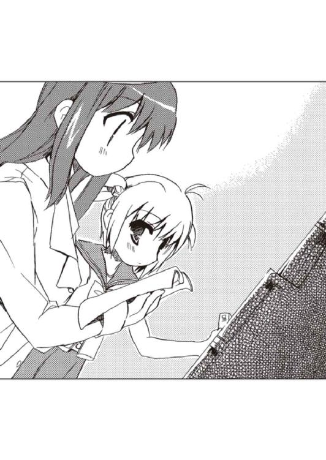

| ROOM NO.1301 しょーとすとーりーず・すりー ROOM NO.1301短編集 (富士見ファンタジア文庫) | |
| 新井 輝 | |
| (2012) | |

ROOM NO.1301
しょーとすとーりーず・すりー
新井 輝

富士見ファンタジア文庫
本作品の全部または一部を無断で複製、転載、配信、送信したり、ホームページ上に転載することを禁止します。また、本作品の内容を無断で改変、改ざん等を行うことも禁止します。
本作品購入時にご承諾いただいた規約により、有償・無償にかかわらず本作品を第三者に譲渡することはできません。
本作品を示すサムネイルなどのイメージ画像は、再ダウンロード時に予告なく変更される場合があります。
本作品は縦書きでレイアウトされています。
また、ご覧になるリーディングシステムにより、表示の差が認められることがあります。
口絵・本文イラスト さっち
そのいち 私と綾さんと不埒な男
信じられない！ 信じられない！ 信じられない！ 信じられない！ 信じられない！ 信じられない！ 信じられない！ 信じられない！ 信じられない！ 信じられない！ 信じられない！ 信じられない！ 信じられない！ 信じられない！ 信じられない！ 信じられない！ 信じられない！ 信じられない！ 信じられない！ 信じられない！ 信じられない！ 信じられない！ 信じられない！ 信じられない！ 信じられない！ 信じられない！ 信じられない！ 信じられない！ 信じられない！ 信じられない！ 信じられない！ 信じられない！ 信じられない！ 信じられない！ 信じられない！ 信じられない！ 信じられない！ 信じられない！ 信じられない！ 信じられない！ 信じられない！ 信じられない！ 信じられない！ 信じられない！ 信じられない！ 信じられない！ 信じられない！ 信じられない！ 信じられない！ 信じられない！ 信じられない！ 信じられない！ 信じられない！ 信じられない！ 信じられない！ 信じられない！ 信じられない！ 信じられない！ 信じられない！ 信じられない！ 信じられない！ 信じられない！ 信じられない！ 信じられない！ 信じられない！ 信じられない！ 信じられない！ 信じられない！ 信じられない！ 信じられない！ 信じられない！ 信じられない！ 信じられない！ 信じられない！ 信じられない！ 信じられない！ 信じられない！ 信じられない！ 信じられない！ 信じられない！ 信じられない！ 信じられない！ 信じられない！ 信じられない！
私は学校の帰り道、憤慨していた。
寄り道したせいなので自分のせいでもあるけど、それでも怒りが収まるわけじゃない。
あんな男がいるなんて聞いて冷静でいられるわけがない。しかもあの女の人みたいないい人に対して、そんな不埒なことが出来るなんて！
私だって男には色々な人間がいるってことは知ってる。ピンキリで上は刻也君から、下は......どこまでも下がいるんだろうってことは理屈としてはわかる。
でも、信じられない。信じたくない。あんな男がいるなんて認めたくない。
「......でも私が理想を高く持ちすぎなのかな」
私は煮え立つ感情を抑えようと少し冷静に考え直してみようと思う。でもやっぱり無理っぽいなと感じる。
理想が高いも何も私には現実に立派な男の人を知っているのだ。別に無い物ねだりをしてるってわけじゃない。私の彼氏......のはずの刻也君のように皆が皆、そうなるのは難しいだろうとは思う。
でもだからって信じられない男が多すぎる。相手がそれとわからないからって好き放題なんて......女の敵だ。死んでしまえ！ いや死ぬくらいじゃ生ぬるい。子々孫々呪われてしまえばいいんだわっ！ って、でもそれじゃその人の奥さんや子供が可愛そうって感じもする。
いや、そんなことはどうでもよくて......。
「鈴璃君？」
私が自分でも何を考えているのかわからなくなった時、現実に戻してくれたのはその声。私の名前を呼んだ相手が誰かはすぐにわかった。
八雲刻也君。私の彼氏......のはずの背が高くてかっこうよくて、勉強も出来て、生まれながらに紳士な人だ。私とは同じ年だけど、ずっと大人で、一緒に歩いてると申し訳なくなるほどの人。
「刻也君......だよね？」
私は刻也君と比べると三十センチくらい背が低い。同じ高校一年生なのにと思うくらいの差なんだけど、そのせいで私は振り返るだけじゃなく、かなり見上げないと刻也君の顔が見えなかった。
「どうしたのかね？ こんなところで会うとは珍しいように思うが」
刻也君はそう言いながら、自分が勘違いしてるのか不安になったのか辺りを見渡した。
「そう......だね」
でも刻也君の勘違いなんかじゃなかった。
ここは瓶井戸中央公園。普段なら私が来るようなところじゃない。学校も家も、この近くにはない。もちろん通学路の途中という訳でもない。
しかも時間もなんだか微妙な感じだった。そろそろ夕暮れ。学校が終わってからバイトでもないのに制服のままでこんな時間までうろうろしているのもかなり珍しい。
というのは私は正直、制服があまり好きじゃないからだ。デザインは好きだし、人が着てるのを見てる分にはいい。でも私は背が低い割に......胸が大きいからどうにも不格好に見えてしまう。背だけ見たらＳサイズなのに、バストは......ってなんだか話がそれてる。
「何か用でもあったのかね？」
不思議そうに刻也君が尋ねてきた。それはまあそうだろうと思う。私だってなんでこんなことになってしまったんだろうという気もする。
「......ちょっと欲しい本があって。駅前になかったから他の本屋さんを探しているうちに気づくとこの辺りまで来てたみたい」
「なるほど。で、お目当ての本は見つかったのかね？ まだなら本屋にならいくつか思い当たるところがあるし、図書館で良いなら案内できるだろうと思うのだが」
刻也君はびっくりするほど優しかった。いつも忙しいはずなのに、こんなところで偶然会った私のためにそんなことを言ってくれるなんて。例の不埒な男には一パーセントでもいいから見習ってほしいものだと思ってしまう。でも今はそんな場合じゃない。刻也君の不安にちゃんと答えてあげなければいけなかったのだ。
「えっと......もう買えたから大丈夫」
「そうか。ならばいいのだが」
そして刻也君は何か少し考えたような顔になった。きっとそれは他の人にはわからないほど短い時間のことだったけど、私は刻也君のことを見てきた長さでも誰にも負けない。そういう些細な変化だって気づいてしまう。
「......どうかしたの？」
でもその理由までは私にはわからない。ただなんとなく刻也君は私に遠慮してるのかなというのは感じた。
「いや......さきほど話しかける前のことだが」
「うん」
「随分と不機嫌そうに見えたのでね。本が買えなかったということであれば、そういうことなのだろうかとも思ったがというわけだ」
その言葉を聞く限り、刻也君は私を見かけたから話しかけてきたというだけではないみたいだった。私が負のオーラを発してたので心配してくれたということなのだろう。
「......そうだね」
そんな刻也君の優しさに私はどう答えていいものかわからず、煮え切らない返事をしてしまう。
「ということは私の気のせいというわけではなかったということなのだろうか？」
そして刻也君はそれを見逃さなかった。
「え？ うん。でも刻也君に会えたら、どうでも良くなったかな、うん」
言いながら自分でもなんだか恥ずかしいことを言ってるなと思う。でも刻也君はちょっと違うことを感じたみたいだった。
「ということは私が何かまたヘマをしたのだろうか？ もしそうなら......」
「ち、違うよ。そういうんじゃなくて......変な人の話を聞いて、そんな人がいるんだっていうのが許せない気分になってて......」
「ふむ」
「でも、どうでもいいよってそう思えたの。刻也君が心配して話しかけてくれたから」
「そうか。それは何よりだが」
そうは言いながら刻也君は難しい顔をする。
「......心配？」
「君が気にしないことにしたのだから私が心配するのも変だとは思うのだが、やはり何が君を不機嫌にさせていたのかは気になってしまうようだ」
「そう......なんだ」
私はちょっと意外な気がした。刻也君はそういうことを思っても、今までは言わないで一人で飲み込んでしまうようなところがあった。最近、そういうところで刻也君は柔らかくなってきてるのかもしれない。
「それが君にまた不快なことを思い出させるというのはわかってるのだがね」
刻也君はそう言って申し訳なさそうな顔をするけど、私はむしろ嬉しくなっていた。
「ううん。そんなことないよ」
「そうだろうか？」
「一人で思い出すのは嫌だけど、刻也君がいてくれるなら心強いって感じがする」
「そこまで本当に頼もしければいいのだがね」
刻也君は少し戸惑った様子で、中指でずれたメガネをかけ直す。少し照れてるのかななんて思うと、刻也君も可愛く見えてくる。
「......でも何から話したらいいのかなあ」
それでせっかくだから聞いてもらおうという気持ちになったんだけど、話はけっこう複雑だった。だから私は記憶をずっと遡っていく。
とりあえず問題の男の話を聞くことになった原因の原因まで。
それはきっと放課後の友達との会話──。
○
「なんか面白いことないかなあ」
クラスメイトの美里ちゃんはいつも飢えている。面白いことというやつに。
そしてそれは今日もそうだったらしく、美里ちゃんは少し口をとがらせて私に話しかけてきた。でも私と美里ちゃんはちっとも趣味が合わないので聞かれても正直困ってしまう。
「この間までのはどうしたの？ もう賞味期限切れ？」
だから私は聞き返すのが精一杯だった。
「......この間までのって言うと、シーナ＆バケッツのこと？」
「確か、それ。ハーモニカ吹いてる人がバケツかぶっててクールだって褒めてたじゃない。他の人も誘って見に行ってたのに、先に自分が飽きちゃったの？」
「そういうことになるのかなあ。いやまあ、なんて言うのかなあ。風邪って人に伝染すと治るってそんな話かなあ」
「......どういう話？」
「なんかね。自分より盛り上がってる人を見ちゃうと、ああ自分はここにいなくていいんだなって盛り下がっちゃうんだよね、私はきっと」
美里ちゃんは自分のことなのに他人事のように話していた。
「それはつまり墓穴を掘ったってこと？」
「墓穴なのかなあ......まあ、近いよね。直接の原因はこの学校の娘じゃないけど」
「どういうこと？」
「駅前でさ、ちょっと迷ってる娘がいたからさ、シーナ＆バケッツを教えてあげたのよ」
「うん」
「そしたらその娘がさあ......」
美里ちゃんは小さくため息をつく。
「なにかしたの？」
「シーナとつきあい始めちゃって」
「......はあ」
「しかもトントン拍子。ライブ観た次の日にはもうほぼ決まってたんじゃないかなあ」
「うへ」
私は思わずそんな変な声を上げてしまった。
まあ運命の人に出会ったなら、好きになるのに時間はいらないのかもしれないけど、それにしたって随分な展開だ。
「それで、なんとなく私の役目は終わっちゃった気がして、それでフェードアウトって感じ」
「そっかあ」
「でもまあ、シーナの歌が嫌いになったわけじゃないしね。何かきっかけがあれば復帰するかも。というか今日、一緒に行く、鈴璃？」
「私はそういうのはちょっと......」
「まあ、鈴璃は彼氏とラブだもんね」
「......そんなの関係ないし」
「関係ないってことはないでしょ？ シーナは美少年だし、バケッツの方も演奏中はバケツかぶってるけど、本当は格好いいんだよ」
「だから？」
「友達の付き添いとはいえ、そういう二人を観に行ったとなると彼氏も妬いちゃうんじゃない？」
美里ちゃんは笑っていたけど、私はちょっと真剣に考えてしまった。
「......どうかなあ」
「そういうみみっちい男じゃないってことですか。もう鈴璃ったら......」
「そういうことじゃないけど......刻也君はあんまりそういうことでどうこう言わない気がする」
「だったらいいんじゃない？」
「だから初めからそんな話してないし。夜歩くの怖いってだけだよ」
「それなら彼氏に頼めばいいじゃない。怖いから一緒に観に来てーって」
「......それはどうかなあ」
それが出来るなら苦労はしない。私はそう思うが、美里ちゃんは自分で振っておいて一人で納得してしまったらしい。
「ま、とにかく鈴璃はパスってことね」
美里ちゃんはそれで諦めたのか、私の後ろでずっと座っていた純ちゃんの方を見た。
「純はどう？ 興味ある？」
そう尋ねたけど、純ちゃんは反応しなかった。それで私も気になって見てみると、純ちゃんはずっと本を読んでたらしい。
文庫本だ。書店のカバーがついているから何を読んでるのかはわからない。
「ね、純？」
不安そうに美里ちゃんがもう一度話しかけた。
「......何？」
それでやっと純ちゃんは自分が話しかけられたと気づいたらしい。
というか本をぱたんと閉じてから美里ちゃんの方を見たところを見ると、ちょうどキリのいいところまで読んだだけかもしれない。
純ちゃんはそういうかなりマイペースな娘だった。その上、長い黒髪に切れ長の目で、あまり話さないので、ちょっと怖いイメージもある。でもとっつきにくいだけで、けっこういい娘だというのも私も美里ちゃんも知っている。
「聞いてなかった？」
美里ちゃんは答えのわかっている質問をした。
「......全然」
そして純ちゃんは予想通りの返答。
「ここのところ、シーナ＆バケッツを観に行ってなかったから久々に行ってみようかなって」
だから美里ちゃんは話を初めからし直す。
「......うん」
「で、鈴璃を誘ったんだけど、断られたから純はどうかなって話」
「......そう」
「行く？」
「......行かない」
でも結果は回り道をしただけに終わったみたいだった。美里ちゃんもそれはわかっていたらしく、しょうがないなという顔をする。
「ま、そうよね。純はそういうのは興味ないもんね。音楽とかライブとか全然でしょ」
「......うん」
純ちゃんは淡々とそう答えると閉じて机の上に置いた本を見た。続きを読もうかと考えているらしい。私はそれに気づくと、そこまで純ちゃんがこだわってる本に少し興味を持った。
「純ちゃん、それ、なんて本？」
「......いつものやつ」
「いつものやつ？」
「......『ああんっ！ メガネ様☆』」
その名前は純ちゃんから何度か聞いたことのある名前だった。何冊も出てるシリーズ作品で、新しいのが出る度に純ちゃんは人保町までわざわざ買いに行ってるらしい。
「新しいのが出たの？」
「......ううん」
「じゃあ、なんで？」
「......今度、アニメになるから、おさらい」
「へえ」
ということは本当に相当な人気作品なんだなと私は感じた。純ちゃん以外にも同じくらい熱心な人がけっこういるようなそういう作品なんだろうか。そんなことも考えてしまう。
「......鈴璃も読む？」
「へ？ なんで？」
「......興味ありそうだったから言ってみた」
「純ちゃんがそこまで気に入ってるっていうなら、ちょっとは気になるけど」
「......けど、なに？」
純ちゃんが不思議そうに小首をかしげた。でも首から下はまったく動かないので、見ててちょっと不安になる。
「でも何冊も出てるんでしょ？」
「......今出てるのは十冊」
「十冊かあ。長いなあ」
「......うん、長い」
正直、私は本を読むのはあまり得意じゃないのでそんなに読もうと思ったらきっと一か月じゃ済まない。だから躊躇してしまう。
「どんな話なの？」
でも純ちゃんが聞いて欲しそうだったので、切り上げ損ねた感じで尋ねてしまう。
「......タイトルの通り、メガネかけた男の子が主人公。高校一年生。長身で美形。家はお金持ち」
「へえ」
純ちゃんの説明に私は刻也君のことを思い出した。実際、刻也君はそのまんまだから仕方ない。
「......彼には婚約者。背が低すぎるのがコンプレックス」
さらなる説明に私は胸がズキンと痛むのを感じた。今度は私みたいな気がしたからだ。
「で、どんな話なの？」
私はキャラクター紹介よりもあらすじを聞きたかったが、純ちゃんはそれを許してくれない。
「......でも爆乳」
「うぐっ」
また胸が痛んだ。その作者は私に恨みでもあるんじゃないのかとすら思えてきた。
「......なのに、メガネ様の本命は別にいる」
「へ、へえ」
私はひどく嫌な予感がするのを感じた。刻也君と私に重ねていたのになんて展開なんだろう。
「......同じクラスの美少年。彼にも彼女がいるんだけど、彼はその娘を愛してない」
私は思わず言葉を失った。でも少し考えてなんだか変だと気づく。
「って、メガネ様って男の子じゃないの？」
「......男の子って私言った」
「でもメガネ様の本命は美少年なんでしょ？」
「......そう。料理が上手で、メガネ様は餌付けされてる」
「餌付けって......」
それ以前になんだか変な話だったのだが、私は力が抜けるのを感じてしまう。
「ボーイズって奴でしょ？」
そこにずっと様子を見ていたらしい美里ちゃんが話題に入ってきた。
「ボーイズ？」
「ボーイズラブ。少年同士の恋愛物語よ。そういうジャンルがあるのよ」
「......そうなんだ」
ということはそういうのを今度、テレビでアニメにして放映してしまうということか。私はアニメはあまり見ないけど、随分と知らぬ間に大胆な世界になっていたらしい。
「......で、読む？」
純ちゃんはそう言ってさっきまで読んでた本をすっと私の方へ押してきた。
「私、そういうのはちょっと......」
全然興味ないというわけじゃないけど、メガネ様に刻也君のイメージを重ねてる私としては、なんだか浮気されてるみたいで落ち着かない気分だった。
「......残念。でも気が変わったら言って」
そんな私の気持ちを理解してるのか、純ちゃんは今度は本を自分の机に入れた。
「うん。まあ、本当に読むなら自分で買うけど」
「......そう。それもいいね」
純ちゃんはそれで小さくうなずくと、鞄を持ってすっと立ち上がった。
「......そろそろ帰る」
「じゃ、帰りますか」
美里ちゃんも立ち上がる。
「そうだね」
私も慌てて鞄を手に取ると立ち上がった。
気づくと教室には誰もいなかった。どうやら私たちは随分と話し込んでいたらしい。
○
「......失敗したなあ」
純ちゃんたちと別れた後、私はちょっと後悔をする羽目になった。
純ちゃんに勧められた時は断ったけど、やっぱり気になって読みたくなってしまったのだ。
あの問題の小説を。
だから近所の書店に行ってみたのだけど、見あたらなかった。店員さんに聞けば、在庫があったりしたかもしれないけど、内容を聞いてしまった私にはそれをするのにはかなり抵抗があった。
だから別の書店へ行けばいいかと記憶を頼りに歩いた。なにせ今度、アニメになるほどの有名な作品なのだ。たまたまなかっただけで、どこにでも基本的にはある。そう思ってた。
でも実際にはそんなことは全然なかった。
途中の巻があるところはあったけど、一巻がどうしても売ってなかった。何かすごくタイミングが悪かったらしい。
こんなことなら純ちゃんに素直に借りておけばよかった。そう思う。
明日言えば貸してもらえるのもわかってるんだけど......私は意地になっていた。私は知っている限りの書店を歩き回った。
絶対に今日中に読んでやると心に誓って。
「......ふぅ」
だからやっと手に入った時は普段は来ないような場所まで来ていた。
歩き回って疲れた私は、ふと見かけた大きめの公園に入って休むことにした。
入り口にある札によると瓶井戸中央公園という名前らしい。まったくなじみのない名前だが、今はすごくありがたかった。
私はジュースを買ってベンチを探すとそこに陣取った。そして苦労の末に手に入れた『ああんっ！ メガネ様☆』の一巻を取り出す。十冊あるらしいけど、どうせ読むのに時間がかかるから一巻しか買わなかった。
「......やっぱり似てるよね」
表紙はカバーで見えなくなっていたけど、書店で見た時、やっぱりそこに描かれてるメガネ様らしき人物は刻也君にそっくりだった。
私は表紙をめくって扉絵を見る。そこではメガネ様と美少年が抱き合っていた。
「うへっ」
私はまた変な声をあげてしまった。そういう話だとは聞いていたけど、いきなり来るとやっぱりびっくりしてしまう。
本を閉じて辺りを見渡す。私がこんな本を読んでることに興味を持ってる人間なんているわけもないけど......やっぱり恥ずかしかった。
「帰ってから読もう......」
私は誰も聞いてないのを確認して、一人そう呟いた。扉絵からしてこんな感じではもっと過激な絵がこの本には隠されているかもしれない。そう思うととても人前では読めなかった。
「純ちゃんってすごいなあ」
だから私はそう呟いてため息をつくと、家に帰ることにしたのだ。
なのに、私はまだ寄り道することになる。
「ん？」
なんだかおかしな空気。私はときどきそれを感じる。それは大体は私に向けられた興味の視線によるものだった。
私が背が百四十ないのに、胸ばっかり大きいからそういう目で見る人がいるのだ。
でも、今日はそれとは違ったらしい。私は立ち止まって辺りを見渡すと、違和感の理由を探す。
でも誰も私のことを見てはいなかった。
「......あれか」
見られてるのは別の人だった。通りかかったコンビニの中で立ち読みをしている女性。その人にいやらしい視線が向けられていたのだ。
私はそれに気づくと買い物をするわけでもないのに、そのコンビニへと駆け込むように入った。
「......そこ、邪魔なんですけど」
そしていやらしい顔の男に向かって話しかけると同時に睨んでやった。
「............」
それでその男には十分だった。自分がやましいことをしているという自覚があったらしく、そそくさと雑誌のコーナーから飲み物が売ってる方へと移動していく。
「......まったく」
私は本当に男ってどうしてこうなんだろうとため息をつく。
でもホッとした気持ちで改めて見ると、ちょっと立ち読みしている女性の方にも原因があるのかなと思ったりもした。
というのはその人は、随分と奇妙な服装をしていたからだ。それにいかにも目立つ感じだった。
まず身長が高かった、女性にしてはだけど。百七十くらいはありそうだった。しかもすらっと背が高い感じで、不思議な迫力がある。
そしてやっぱり服装だ。服自体はそんなに珍しくはないかもしれない。
ちょっと薄汚れた白衣。それくらいならまあ見かけるだろう。でもその女の人はそれくらいしか着てないみたいだった。少し透けているみたいだけど、その下には何も着てない。そんな風に見えてしまうのだ。
いやらしい気持ちはなくても、確かにこれは気になるかもしれない。そう私が思った時、その人が私の存在に気づいたみたいだった。
「何？」
「......えっと」
私はその人の発する爽やかな雰囲気に言葉が出なかった。この人は間違いなく自分が変な格好をしているとは思ってない。それがわかった。
「何？」
でもその人は私が固まってる理由を察してはくれなかった。だから、言ってどうなるでもないと思いつつ、ここに来た経緯を話す。
「その......あなたをいやらしい目で見ている人がいたのでおっぱらったんですけど......」
「え？ あ、そっか......」
それでその人は驚いた様子で自分の服装を確認し始めた。
「どうしたんですか？」
その仕草の意味がわからず聞いてしまう。
「うんとね、健ちゃんに白衣だけで外を出歩くなって言われてたんだけど......また出歩いちゃったみたい」
「......はあ」
健ちゃんとか知らない人の話をされてもよくわからないけど、その人は少しはまともな人らしいなと思う。
「ありがと、助かったみたいだよね」
でもこの人はやっぱりまともではないらしい。なんだか不思議な話の流れになってきた。
「いえ、別に......そういう男の人が嫌いで勝手にしただけですから」
「そういう男の人って、健ちゃんみたいな人？」
「......いやらしい目で見る男の人です」
「あ、そっか。そっちだよね。つまり管理人さんみたいな人のことだよね？」
知らない人の話をされて同意を求められても正直言って困ってしまう。
「......多分」
「そっかあ。あなたも管理人さんみたいな人は嫌いなんだね」
でもその人はすごく納得したみたいな顔。
「いや、よくわかりませんけど......」
「ああ、それで思い出したんだけどね」
一体どこに話のフックがあったのか、その人はそういって私の顔を見る。
「はい？」
「あなたは誰？」
「......通りすがりの者です」
「それはそうなんだろうけど、助けてもらったみたいだからお礼をしようかなって思って。でもほら、名前がわからないでしょ？ だから、なんて言うのかな？ わからないつながり？」
「......本当によくわからないんですけど、私は九条鈴璃と言います」
少し躊躇したけど、どうせそうそう来るような所じゃないからと私は名乗ることにした。
「鈴璃ちゃんね。私は綾。桑畑綾。綾でいいよ」
そのおかげで私はその人の名前を知ることになった。どこかで聞いたことのある気のする名前だなと思うけど、なんでだかはわからなかった。
「......じゃあ、綾さんって呼ばせてもらいます」
「うん。で、鈴璃ちゃん、ちょっと時間ある？」
「時間ですか？」
本を探してる間にけっこう時間が経ってしまったみたいだけど、今日はバイトのない日だし、用らしい用はない。
「時間があるんだったら喫茶店ってとこに一緒に行こうよ。お礼に奢るから」
「......喫茶店ですか」
「うん。うちはちょっと無理だと思うし......何もないから」
「......はあ」
随分と狭いところに住んでる人なんだろうか。私はそんなことを思うが、綾さんは別のことを考えていたらしい。
「鈴璃ちゃんは喫茶店がどこにあるか知ってる？ なるべく近いところがいいんだけど」
「......この辺りはあまり来ないから、はっきりとはわからないですけど」
「なんとなくはわかる？」
「はい」
「じゃあ、この本買ってくるから、ちょっと待っててね」
そう言って綾さんはさっきまで読んでいた本を持ってレジの方へと向かった。はっきりとは見えなかったけど、綾さんが持ってた本は水着の女性が表紙だった気がした。
「......はい」
でもそんなことより私には考えなければいけないことがたくさんありそうだった。
なんで喫茶店に行くんだっけ？ 私はとりあえずそんなことを改めて考えてしまった。
でも喫茶店に着いてもその答えはわからなかった。綾さんはお礼と言ったが、お礼でなんで喫茶店なのかは私にはわからない。
「鈴璃ちゃんは、えっちな男の人は嫌い？」
そして綾さんは次々に私に新たな疑問を与えてくれた。意外に質問好きなのかもしれない。
「......嫌いです」
「どうして？」
「どうしてって言われても......嫌なんです」
「嫌だから嫌いなんだ」
「そういうことになりますね」
「そっか。そうなんだろうね」
改めて言われると変な話だなと思うが、綾さんは不思議とそれで納得した様子だった。
「綾さんは好きなんですか？」
「私？ 私はどうかなあ。好きな人はえっちだけど、えっちな人はあんまり好きじゃないかも」

「......ややこしいですね」
「そうかな。健ちゃんはえっちだけど好きだし、もっとえっちでもいいかなあって思うよ」
綾さんはすごく嬉しそうにそんなことを言う。どうやらその健ちゃんという人のことを綾さんは好きらしい。
「そういうものなんですかね」
「鈴璃ちゃんは好きな人がえっちだったら嫌？」
「......私の好きな人はえっちじゃないです」
私はそう答えながら刻也君のことを思い出した。
少しもそういうことに興味がないってことはないだろうけど、刻也君がえっちなことを考えているというのは私には想像できない。
「真面目な人なんだ」
「すごく真面目な人です」
誰だって刻也君に会えばそう思うだろうと私は自信を持って答える。
「じゃあ鈴璃ちゃんはえっちしてないの？」
なのに綾さんはそんなことを言い出す。
「え？ なんですか？ いきなり......」
「付き合ってるならそういうことを当然するものなのかなって思ってたんだけど違うんだね」
綾さんは明らかに自分が何を言ってるのか理解してないらしく、すごく爽やかにそんなことを言う。
「......そりゃそうですよ」
「鈴璃ちゃんは付き合ってどれくらい？」
「えっと......五年くらいです」
「五年？ 鈴璃ちゃんって何歳？」
「十五ですけど」
「じゃあ、十歳から付き合ってるんだ」
「......一応」
「ふーん。すごいね」
「......すごいですか？」
「私はすごいと思う」
よくわからないけど、すごいらしい。
「そうですか」
まあ、冷静に考えると人生の三分の一付き合ってるわけで、それはちょっとすごい気もする。
「でさ、鈴璃ちゃん」
「はい？」
「鈴璃ちゃんは彼氏さんが迫ってきたら拒否しちゃうの？」
「いい加減、その話題から離れませんか？」
「なんで？ いやらしい人が今日のテーマじゃないの？ 私、そのつもりで来たんだけど」
「そうだったんですか......」
というか今日のテーマってなんだろう？
「で、どうなの？」
「そうですね......好きな人なら少しくらいえっちでもいいかなって......思いますけど」
言いながら恥ずかしくなる。そして何を言ってるんだろうと我に返った。
「でも、基本的には嫌ってことかな？」
「そうですね。好きじゃない人に嫌らしい目で見られるのは、本当に嫌です」
それを口にすると、なんとなく周りの人が自分を見ているような気がした。結局、綾さんは白衣のままだし、自意識過剰とは思うけど、やっぱり視線が気になる。
「私は......どうでもいい人に見られるのはどうでもいいかなあ」
でも綾さんは気楽な調子のままだ。
「私もそういう風に思えるといいんですけど」
「ああ、でも、苦手な人にいやらしい目で見られるのは、やっぱり嫌かも」
「それはそうですよね」
「そうなんだよね。ああいう感じを鈴璃ちゃんはあちこちの人に思うわけなんだね」
「......ま、多分」
「そっかあ。じゃあ鈴璃ちゃんは、管理人さんには会わない方がいいと思う」
管理人さん──またその名前が出てきた。そして今度はちゃんと聞いておいた方がよさそうだなと私は思う。
「その管理人さんって......どういう人なんですか？ 綾さんの知り合いですよね？」
「うん。同じマンションに住んでる人なんだけど、なんだかいろいろ細かいんだよね。あれするな、これするなってすぐ言うんだよ」
「管理人さんってくらいだから、けっこうな年の人なんですか？」
「ううん。私より年下。健ちゃんと同じクラスって話だから、鈴璃ちゃんと同じ年じゃないかな」
「同じ年ですか......」
なんだか予想していたのとはかなり違う答えが返ってきた。
なんで私と同じ年の人が管理人なんて立場にあるんだろう。全然わからない。
「でさあ、細かい癖に、むっつりなんだよお」
「むっつり......」
私はその言葉で今までの細かな疑問は一気に吹き飛んだ気持ちだった。心が沸騰してきたと言ってもいい。
この天真爛漫な綾さんのことを、その管理人さんとやらがこっそりいやらしい目で見ているということなのだ。それは私にとっては許し難い。
「健ちゃんはけっこう直球なんだ。えっちの時はびっくりするほど大胆だし」
「......はい」
でもまた話題がそれた感じで少し心の温度が下がるのを私は感じた。
「でも管理人さんは違うんだよね。細かいルールを守らせるから真面目な人なのかなあって思うでしょ？」
「そうですね」
「でもね、むっつりなんだよ。すごい勢いで睨んできたりすることが時々あってさ、また何かルールを破っちゃったのかなあ......って心配するんだよね。でもさ、後でわかったんだけど、私のこの格好が気になってたみたいなんだ」
そう言って綾さんは白衣の襟を掴んでぱたぱたさせた。それではっきりとわかったけど、やっぱり下には服を着ていなかった。
「綾さん......下着は？」
だから私はそれを確認してしまう。
「下着？ 持ってるよ。健ちゃんと一緒に買いに行ったんだ」
「持ってるとかじゃなくて......今、してないんですか？ということを......」
「ああ。そういう意味か。えっとね......」
綾さんはそう言って白衣の上から自分の体を叩き始めた。
「パンツは穿いてるよ」
「......ということはブラは？」
「してないみたい」
「みたいじゃなくて......した方がいいと思います。特に外に出る時は」
「うん。健ちゃんもそう言ってた。そうそう、健ちゃんはね、下着は黒が好きなんだって」
「じゃあ、黒いのを着てあげた方が」
「でもきついんだ。かゆいし」
「それはわかりますけど......」
私だって無駄に胸が大きいせいで、その辺りに関しては人一倍苦労している。だから、わかる。
「でもやっぱり管理人さんが変な目で見るからちゃんとした方がいいよね」
「そうです。そうです」
やっと納得してくれたと思ったら、綾さんはまたひょいっと話題を変えたらしい。
「そう言えば、管理人さんって言えばさ」
「まだ何か？」
「風呂上がった格好を見られたことある」
「え？ それって......裸ってことですか？」
「風呂上がりって言うと裸だよね。まあ、私は寝る時も裸だけど」
「......そうなんですか」
「ああ、そう言えば起き抜けで裸のところ見られたこともあったかなあ」
「......なんでそんなことに」
もしかして同じマンションというのは同じ部屋とかそういうことなのかなと思う。
「勝手に入ってきたんだよ、管理人さんが」
でも、そうじゃなかった。
「勝手に入ってきて、裸を見たんですか？」
私はまた心が沸騰するのを感じた。
なんて奴だ！ うっかり白衣姿で出歩いている綾さんをじろじろ見るだけじゃなく、勝手に人の部屋に上がり込んで裸を見るなんて......。
「うん。最近は他の人がいるからそういうこともなくなったけど、昔はけっこう入ってきてた」
「けっこうって、大丈夫なんですか？」
「でも、管理人さんはむっつりだから見るだけなんだよね」
「見るだけでも十分問題ですっ！」
私は怒りのあまりどんと机を叩いてしまった。そのせいで喫茶店のお客の視線が私たちの方へと向く。
「机壊れちゃうよ？」
なのに綾さんは相変わらずのんきだった。
「......そうですね、気をつけます」
でも私は逆にカッカとしてしまう。
その管理人さんとやらは綾さんのこういう性格につけこんで、ちょくちょく裸を見るために部屋に入り込んできたのだ。そんな男、許せるはずがない。
「そんなに嫌いなタイプだった？」
綾さんが困ったような顔で尋ねてきた。
「......ですね」
私はそれに自分でも驚くくらいムッとした気分で答える。
「ごめんね。怒らせるつもりはなかったんだ」
「綾さんが謝る必要なんてないです」
「うーん。でも、私が話したせいで鈴璃ちゃんが怒ってるわけだし」
「それはそうですけど、許されないのはその管理人さんって奴です。なんて名前なんですか、その人はっ！」
「......なんだっけ？ 私、人の名前覚えるの苦手だから忘れちゃった」
「そうですか。とにかくその管理人さんってのは気をつけた方がいいですよ」
「......気をつける？」
「あんまり近づかないようにした方がいいです」
「まあ、あんまり近づかないけど」
「今まで以上に近づかないようにしてくださいっ！ 何をしてくるかわからないんですから」
「......うん、そうする」
綾さんはびっくりしたような顔をする。それで私は少し冷静になった。
「そうしてください。何かあってからじゃ手遅れなんですから」
「うん。でもね、鈴璃ちゃん」
「なんですか？」
「管理人さんはむっつりだから、そんなに思い切ったことはできないと思うよ」
「......だとしてもです」
「あと、彼女がいるんだって」
「彼女が？ 本当ですか？」
「私は嘘っぽいなあって思ってたんだけど、本当みたいだよ」
「彼女がいるのにそんなことをするなんて......」
その話に私は想像していたより、さらに下の人間だったということを理解した。
下の下だ。
彼女がいて、むっつり。
それはつまり、彼女にえっちなことをしたいけど、できないからその分、綾さんにいやらしい目を向けてるってことだ。なんて陰湿で気持ちの悪い奴......。
「ごめんね」
なのに綾さんはすごく優しかった。そんな奴に腹を立てることになった私のことを本気で心配してくれてるみたいだ。
「だから綾さんのせいじゃありませんから」
「......でも鈴璃ちゃんの知り合いってわけじゃないし、する必要のない話だったよね」
そして綾さんは泣きそうな顔をする。さっきまでにこにこしてた人と同じ人とはとても思えないほど、今の綾さんは小さく感じる。
「そんなことないですけど」
私はそう言いながら、でも綾さんの理屈もわかる気がした。私が不機嫌になったのが、綾さんの話のせいというのは確かなことだし。
「でも、ごめんね」
「ちょっと、カッとなっただけですから」
私はそう言って無理に笑うと、出来る限り落ち着いた態度を装うことにした。残っていたコーヒーを飲み干して、もう一度笑う。
「ごちそうさまでした」
「あ、うん」
「それで......申し訳ないんですけど、そろそろ暗いですから、帰らないとかな、と」
私はそこで初めて外を見た。まだあんまり暗くはなかったけど、ここに来てからけっこう経ってるのでそれでよしとする。
「うん、そうだね。お礼で誘ったのに、あんまり楽しくなかったかな」
「いえいえ。綾さんに会えて嬉しかったです。また機会があったらよろしくお願いします」
私はそう言って立ち上がると、綾さんに向かって小さく頭をさげた。
「うん。私もよろしくー」
そしてそれが気に入ったのか綾さんはにっこりと笑ってそう言ってくれた。
だけど、私のはらわたは煮えくりかえっていた。無理に押し込めたせいで、さっきよりずっと温度が上がってしまったらしい。
だから喫茶店を出る前から、私の心の中で怒りの言葉が繰り返される。
信じられない！ 信じられない！ 信じられない！ 信じられない！ 信じられない！ 信じられない！ 信じられない！ 信じられない！ 信じられない！ 信じられない！ 信じられない！ 信じられない！ 信じられない！ 信じられない！ 信じられない！ 信じられない！ 信じられない！ 信じられない！ 信じられない！ 信じられない！ 信じられない！ 信じられない！ 信じられない！ 信じられない！ 信じられない！ 信じられない！ 信じられない！ 信じられない！ 信じられない！ 信じられない！ 信じられない！ 信じられない！ 信じられない！ 信じられない！ 信じられない！ 信じられない！ 信じられない！ 信じられない！ 信じられない！ 信じられない！ 信じられない！ 信じられない！ 信じられない！ 信じられない！ 信じられない！ 信じられない！ 信じられない！ 信じられない！ 信じられない！ 信じられない！ 信じられない！ 信じられない！ 信じられない！ 信じられない！ 信じられない！ 信じられない！ 信じられない！ 信じられない！ 信じられない！ 信じられない！ 信じられない！ 信じられない！ 信じられない！ 信じられない！ 信じられない！ 信じられない！ 信じられない！ 信じられない！ 信じられない！ 信じられない！ 信じられない！ 信じられない！ 信じられない！ 信じられない！ 信じられない！ 信じられない！ 信じられない！ 信じられない！ 信じられない！ 信じられない！ 信じられない！ 信じられない！ 信じられない！ 信じられない！ 信じられない！ 信じられない！ 信じられない！ 信じられない！ 信じられない！──と。
○
「......鈴璃君？」
私は随分と長い時間、怒りに支配されていたらしい。気づくと不安げに刻也君が私のことを覗き込んでいた。
「えっと......刻也君に怒ってる訳じゃなくて」
「それは私もわかってるつもりだが、さきほどまでの鈴璃君を見てると、もしかしたら私に怒ってるんじゃないかと不安にもなるよ」
「......そんなに怒ってた？」
「君でもそこまで怒ることがあるのだなと思うくらいは」
「......うぅ、忘れて欲しい」
刻也君にそんなことを言われて私は悲しく思う。でもその一方でまた怒りがこみ上げてきた。そんな風に刻也君に思われる原因になったのが、あの不埒な男、管理人さんという奴だからだ。
「申し訳ない。思い出すだけでそんなに怒るようなこととは思っていなかった」
「......刻也君が悪いんじゃないよ」
私はでもその場は気持ちを収めるしかないと思う。そのせいでさっきみたいにさらに怒りの圧力が増すとしても、このままでは刻也君に当たってるみたいで、後悔することになりそうだから。
「とりあえず、どこか座れる場所に行こう」
そんな微妙な空気を察してくれたのか、刻也君はそう提案してくれた。
「......そうだね」
それで刻也君が向かったのは公園のようだった。瓶井戸中央公園だ。家のある方とはちょっと逆だけど、刻也君が一緒ならそれでもいいかなって思う。
「コーヒーでいいかね？」
黙って後ろを歩いてた私に刻也君が不意に尋ねてきた。
「え？」
「何か飲み物があった方が良いかと思ったんだが、別にノドは渇いてないだろうか？」
刻也君は自動販売機の前に立っていた。そんな質問を含めて、私は意外な気がした。刻也君はそういうことはあまりしない人間だと思っていたからだ。刻也君が缶コーヒーを飲むなんてちょっと想像できない。
「さっきまでコーヒー飲んでたから平気」
だから私は正直にそう答えた。
「そうか。なら、いいんだが」
そう言いながら、刻也君は少し考えていた。
「どうしたの？」
「私だけ飲むというのもなんだか違うなと思ったのだが......どうしたものだろう？」
真面目にそんなことを呟く刻也君は、どこかかわいらしい感じがした。普段はすごく格好いいのに、優しくかわいらしいのも刻也君だった。
「だったら、私も飲む。コーヒー以外のだったらなんでもいいから」
「そうかね？」
それでまた刻也君は少し考えて、お金を入れるとボタンを押した。
「これでいいかね？」
刻也君が選んだのはスポーツドリンクだった。あまり美味しくないけれど、太る心配はないのでそんなに悪い選択ではないと思う。
「じゃあ、刻也君の分は私が買うね」
そして私はそれを受け取ると、刻也君と自動販売機の間に割って入る。
「いや、自分のくらい自分で買うが」
「私の話を聞いてもらうんだから、刻也君の分くらい私に買わせて欲しいの」
「......そういうことなら構わないが」
刻也君は少し納得がいかないという顔をしていた。それはきっと私にお金を使わせるのを申し訳ないと思っているのだろう。
でも私はお金に困ってるわけでもないのにバイトをしているし、刻也君は家を出てお金を稼ぎながら暮らしているのだ。これくらい出したって罰は当たらないと思う。
「コーヒーでいいよね？」
私の質問に刻也君は少し驚いたみたいだった。
「どうしてわかったのかね？」
「刻也君がさっきそう聞いたから」
「......む、なるほど。確かにそうだったな」
刻也君は困ったような表情を浮かべながら、私が買ったコーヒーを受け取る。
「ありがとう」
「どういたしまして」
そして私の返事を聞くと、また刻也君は公園に向かって歩き始めた。私はそんな刻也君の後を追いかけながら、綾さんに聞いた不埒な男のことを思い出す。
比べるのも失礼だけど、刻也君みたいな人がいる一方で、管理人さんとやらがいるというのは本当に信じられない思いだった。
生物学的には同じ人間の男ということになるんだろうが、あまりに差がありすぎる。世の中には色々な人間がいる。それはわかってる。
平和に生きてる人もいれば、平気で人を殺してしまえる人間がいるのも、理屈ではわかってる。でもダメだ。本当にそういう許し難い人間がいると聞かされると、心が煮えたぎってしまう。
そんな女の敵がこの辺りでのうのうと暮らしてるなんて、私に関係ないことでも許しておけない。だからってそいつのところに乗り込んでぶっとばすなんてことをするわけじゃないのが、私も口先だけで情けないけど......情けないけど、許しておけないのだ。
「また思い出してるのかね？」
刻也君の声で我に返ると、公園の入り口辺りまで歩いていたみたいだった。それに気づくと今度は慌てて自転車止めのための障害物をよけなければいけなくなる。
「あわっ」
でも突然のことでバランスを崩してしまう。そんな私に刻也君は手を差し伸べて助けてくれた。
「もう少し早く話しかけるべきだったろうか」
「......ううん。私がぼーっとしてただけだから」
「そうなのだろうか」
刻也君はそれで少し考えるような仕草を見せた。私の言葉に何かひっかかったらしい。
「それにしても、そんなにその許せない人間だったのかね？ 私には君がそこまで許せないと考える人物像というのが想像つかないのだが」
そのせいなのか刻也君は歩きながら、その話題を始める気になったみたいだった。
「......自分でも不思議なくらい怒ってるかも」
私は刻也君の手前そう言ってから、でもけっこう本心からの言葉かもしれないと思う。
「鈴璃君は自分に対しては厳しいが、あまり人のことをあれこれ言うようには思っていなかったせいかもしれないな」
刻也はそう言いながらベンチの前までやってくると、私に先に座るように手で示す。
「......そうでもないけど」
私はそれで座ることにしたけど、刻也君の言葉が気になってしまった。
自分に厳しくて他人に甘いのは私なんかじゃなく、刻也君の方だ。刻也君は自分がそうだから私もそうだろうと、そう思っているのだ。
「それでその問題の人物というのはどういう人間なのかね？」
刻也君はそんな私の気持ちに気づいた様子もなく、普通に私の隣に座る。それで刻也君はもう私服なのに、私だけ制服なのが今更気になった。
「えっと......」
そのせいもあって私は自分の怒りを刻也君にぶつけることに気後れしてしまう。ろくでもない奴のことで刻也君を煩わせてはいけない。そんなことも思う。
「遠慮することはない。そのために今、私はここにいるのだから」
なのに刻也君はそう言って、静かに笑う。それでも私が話そうとしないので、刻也君はプシッと音を立てて、缶コーヒーを飲み始める。
「今日会った人から聞いた話なんだけどね」
「知り合いなのかね、その人は？」
「今日、初めて会った人」
「ふむ。で、その問題の人物はその初めて会った人の知り合いというわけかね」
「うん。今日会ったその人はモデルみたいに背の高い女の人なんだけど、その人が住んでるマンションにむ......むっつりスケベな人がいるの」
私は言いかけて、なんで刻也君の前でそんな言葉を口にしないといけないんだろうと思う。
「......むっつりかね」
そしてそれは聞いた方の刻也君も妙に思ったらしく、当惑した表情を浮かべていた。
「裸で寝ているその人の部屋に勝手に入ってきたりする覗き魔なんだって」
「それは問題とか以前に犯罪では無かろうか」
「そうなんだけど......その人はあんまり気にしてないみたいで、私は危ないから注意した方がいいよって言ったんだけど」
「あまり真剣には取ってもらえず、今もその人のことを心配しているとそういうわけだな」
「......そこまでは考えてなかったけど、でもそうかもしれない」
腹が立っていたからそれしか考えられなかったけど、少し冷静になってみれば刻也君の言うとおりのような気がする。
「詳しい事情はよくわからないが、なんだかんだ言ってもその人と問題の人物は仲が良かったりするのではないだろうか？ そうでもないのにその状況を放置するなんて考えられないのだが」
「......それは違うと思う」
綾さんは健ちゃんという人が好きなのだし、管理人さんとやらには彼女がいるのだ。
「ではどういう状況なのだろうか？」
「その人、綾さんって言うんだけど、ほわほわした人なの。だから危機感がないだけなんだと思う」
「......そうなのか」
刻也君はかなり当惑した表情を浮かべた。刻也君みたいなしっかりした人には綾さんのような価値観の人間のことは理解できない。そういうことなんだろうと私は思う。
「それにつけ込んで、綾さんが管理人さんって呼んでる男は好き放題してるってことなの」
「......管理人さんかね」
刻也君はさらに理解できないという顔になった。それは無理もないと思う。管理人さんなんて名前の人間が犯罪と言ってもいいことをしているなんて明らかにおかしい。
「管理人さんは風呂上がりの綾さんを見るために部屋に上がりこんだりもしたんだって。信じられないよね」
「......そうだったろうか」
刻也君はなんだかよくわからないことを呟いたみたいだった。私がそれで心配になって刻也君を見ると、小さく揺れていた。かなりショックを受けているみたいだった。
「刻也君？」
だから私はもう別の話題にしようと思う。管理人さんの話は刻也君には刺激が強すぎたみたいだったから。
「......うむ？」
「やっぱり男の人ってそういうことしたい生き物なのかな？」
「どうだろうか。実行に移さないまでも考えるくらいなら、それなりにいるかもしれない」
「そう、なんだ」
刻也君の返事に私は少なからずショックを受けた。そして気になってしまう。刻也君はそのそれなりにいる中に入るのかどうか。
「だがそれ以前にさっきの話を真に受けるのはどうかと思うのだが」
そして私が弱気になったせいか、せっかく逸らした話題が元に戻ってしまった。
「どうして？」
「君は綾さんに今日、初めて会ったのだろう？ その人の意見だけで一方的に決めつけるというのはどうかと思う」
刻也君はひどく苦々しい顔でそう告げた。
「それは......そうだよね」
「綾さんの勘違いかもしれないし、綾さんがその人を嫌いなら少々大げさに言っていた。そういう可能性だってあるだろう」
「......うん」
言われてみればそうだった。綾さんが事実無根のことを言って私の関心を引こうとしてた。そんなことはさすがにないと思う。でもだからって百パーセント真実だとは確かに限らない。私はそんなことにも気づかない自分を馬鹿だなと思う。
「すまない」
なのに刻也君は私がしょげたのを見て言い過ぎたと思ってくれたようだった。
「ううん。そんなことないよ」
「君の愚痴を聞いてあげようと思ったのに、なんだか説教をしてしまったみたいだ」
「そんなことないよ。刻也君の言うとおりだよ」
そして刻也君は優しいなと思う。綾さんが大げさに言っていたとしても、やっぱり管理人さんって人はむっつりスケベには違いない。なのにそう決めつけずに、ちゃんと人間扱いしようとしている。頭に血が上って、感情を爆発させるだけの私とは全然違う。
「私ってそういうことばっかりだよね。勝手に決めつけて、それで刻也君に迷惑ばかりかけてる。今日だってこんな感じだし」
「私はこれが迷惑とは思っていないが」
「......うん」
「だが、あまり遅くなるのは問題かもしれないとは思う」
そして刻也君はすっと立ち上がって、まだ座ったままの私の顔を見た。
「今日は君を家まで送っていこう」
その意味を考えている私に刻也君がそんな言葉を告げる。
「......え？」
「ここでこのまま話しているより、その方が良いかなと思ったのだが」
「ここからだとけっこうあるからいいよ」
そうでなくても予想してなかった私の登場で時間を無駄にしてしまってる。なのに家まで送ってもらうなんて望んじゃいけないことだと思う。
「迷惑かね？」
なのに刻也君はそう尋ねてくる。
「迷惑なんかじゃなくて、嬉しいよ。でも......」
でも、ダメなの。そう言いかけたところで刻也君は先に言葉を続けた。
「余計な時間をかけさせたくないということなら、議論をしている間に帰ろう。もう送っていくことは決めたのでね」
そして刻也君は私に余計な遠慮はしなくていいと遠回しに言ってくれる。
「......うん」
だから私はもう反論するのは止めて、立ち上がると歩き始めた。いつもより少しだけ前。ちょっと距離を縮めて刻也君の後ろを。
もちろん刻也君と一緒に歩けるのは嬉しかった。でもそれ以上に嬉しいことがあった。
刻也君は優しい。そしてそのおかげで私も少し優しくなれた。
それが管理人さんって言うむっつりスケベがきっかけなのはちょっと引っかかるけど。でも刻也君のおかげでそんなことすら許せてしまう自分が少し誇らしかった。
刻也君は優しい。おかげで私も優しい。そのことを考えながら、私は刻也君の横顔を覗き込む。
「......何かまた私は変なことを言ったかね？」
刻也君は私のそんな視線が気になったらしい。
「ううん」
でも刻也君は変なことなんて言ってない。むしろ良いことしか言ってない。
「信じられないくらい嬉しいだけだから、気にしないで」
だから私は正直にそう答えて、それからすごく恥ずかしいことを言ってしまったと気づく。顔が真っ赤になるのが自分でもわかった。
（あわわ......）
なのに刻也君は静かな笑みを浮かべて静かに呟くだけ。すごく冷静で真面目な人なのだ。
「それは何よりだ」
でも私はそれで十分だった。
「うん」
だから私は少し歩く速度を下げて、大人しく刻也君を追いかけることにした。
それはいつも通りの距離だったけど、私はそれで十分。十分すぎるほど、幸せだった。
おしまい
そのに 俺と鍵原とお試しの合コンプレイ
鍵原が何かを思いついてしまったらしい。
「合コン！ 合コンなのよ！」
鍵原は俺が教室に顔を見せた瞬間、そう叫んだ。鍵原の席は入り口に一番近いところにあるのは知っていたが、何もそんなことを朝っぱらから大声で言わなくてもいいと思う。
「......合コンねえ」
それでも無視するとさらにボリュームを上げられそうなので一応、反応しておく。
「そう、合コンなのよ！」
それでとりあえず鍵原は満足げにうなずいた。なので俺は一安心して、一緒に登校してきた千夜子ちゃんの方を見る。
千夜子ちゃんは俺と同じような顔をしていた。つまり、困ったなあ......という当惑の表情だ。
「で、何が合コンなんだよ？」
そうなると俺としてはとりあえずこの会話に千夜子ちゃんを巻き込まないで済ませたいなあと思う。千夜子ちゃんと鍵原は昔から友達で、むしろ俺と鍵原よりは仲がいいはずだが、この手の話題に巻き込まれるとろくなことがない。
「彼氏を作るための一番の近道よ。他に何があるって言うの？」
「えっと......それは、つまり、その、鍵原に今まで彼氏ができなかったのは合コンをしてなかったからだと？」
そんなわけもないだろうと俺は思う。
「そうね。よくわかってるじゃない、絹川も」
でも考えが甘かったらしい。どうしてこの会話の流れで俺が理解しているなんて思えるのだろうか。俺はそれもわからない。
というか俺と千夜子ちゃんは付き合ってるが、もちろん合コンで知り合ったわけではない。そんなことは鍵原だって重々理解しているはずだ。千夜子ちゃんの告白の手伝いをしたのは誰でもない鍵原本人だったからだ。
「よくわからないけど、合コンをすれば彼氏ができるんじゃないかと鍵原は思ってるわけ？」
「そうよ？ しかも今日の放課後、合コンをするためのセッティングもしてあるわけ」
「じゃあ今日中に彼氏ができるわけね」
とてもそうは思えないけれど、本当にそうならまあ良いような気もする。なにせ鍵原は惚れっぽい性格の割に、相手にはちっとも惚れられないという特技（？）の持ち主だったからだ。
おかげでクラスメイトからは「恋多き女」なんて呼ばれていたりする。鍵原はそれなりに可愛いし、少しくらいはモテてもいいんじゃないのかなあと俺は思ってるが、こういう言動を目撃するとやっぱりダメかもしれないと考えてしまう。
「ま、そういうわけじゃないんだけどね」
そしてやっぱりというか鍵原の言い分は支離滅裂だった。合コンをすれば彼氏ができるから、今日、合コンをするという自慢話というわけではなかったらしい。
「......じゃあさっきまでの話はなんなんだよ？」
「今日のは合コンは合コンでもちょっと特殊な合コンなのよ」
「特殊な合コンねえ」
合コン自体かなり特殊な気がする俺には、もはや想像不能の世界に突入した感じだ。
「そこで絹川に相談があるわけよ」
「はあ......」
やっと本題かという気もしつつ、なんとも気の乗らない相談のされ方だなと思う。
「一緒に来ない？」
「は？」
「一緒に合コンに来てくれって言ってるのよ」
「いや、確かに聞こえたはずだけど、何を言ってるのかわかりません」
あまりに理解不能なので、なんとなく丁寧な言葉を使ってしまう。
まさか鍵原は俺が千夜子ちゃんと付き合ってるのを忘れてしまったのだろうか？
あんたは千夜子の彼氏としての自覚がない──みたいなことを何度となく繰り返してたのは確かに鍵原のはずだが......。
「だから特殊な合コンだって言ったでしょ？」
「だったら、どう特殊なのか先に言ってくれ」
「まあ、そうねえ」
だからなのか鍵原も自分が妙なことを言ってるということくらいは理解してくれたようだ。
「というわけで、その辺を説明してくれ」
「そうね。言うからちゃんと聞きなさいよ？」
「はいはい」
「返事は一回でいいの！」
「はい」
そんな俺の返事に鍵原は大きくうなずくと、改めて話を切り出した。
「合コンは合コンでもリハーサルみたいなものなの。お試しってやつよ」
「......はあ」
お試しで合コンというのは初めて聞いたが、まあこれで少しは何を言ってるのかわかってきた気がする。
「そういうことだから、絹川を借りてもいいわよね、千夜子？」
「え？ ええっ？」
でもまだ千夜子ちゃんは鍵原の考えについてきてなかったようだ。
「聞いてなかったの？」
「聞いてはいたんだけど......ちょっとわからなかったかな？」
千夜子ちゃんはそうは言うが、正直、わかる方がどうかしてるんじゃないかと思う。なのに鍵原はしょうがないなあとでも言わんばかりに、大きくため息をついて、それからまた話を始める。
「いきなり合コンだと女に飢えてる怖い人とかに当たるかもしれないでしょ？ だからとりあえず練習するために、そんなに女に飢えてない男を呼んで練習しようってことになったのよ」
「......それで健一さんを連れていくわけ？」
「そうよ？ 絹川ってほら、いかにも女に興味ないって感じじゃない？ だからバッチリな人選だと思うのよ」
さりげに鍵原はとんでもないことを言ってるような気がする。そう見えてることを頑張って否定する気はないけれど、何もそれを千夜子ちゃんに言うことはないだろう。
「そ、そうかな......そうかもね」
でも千夜子ちゃんは怒ったりはせず、元気なく肩を落として小さくなってしまった。
「というかさ、鍵原、やっぱり意味わからないんだけど。そんなやる気のない男を集めて練習しても効果ないんじゃないのか？」
だから俺としてはやはり前に出るしかない。これ以上、千夜子ちゃんと話させるともっと恐ろしいことになってしまいそうだ。
「でも何もしないよりはマシよ！」
「いやまあ、それはそうだけど......」
でもそれなら勝手にやってくれないかなあというのが正直な気持ちだ。
「というか最後のチャンスなのよ！ 合コン以外でもう私は彼氏ができないのよ、きっと！」
「それはそれでどうかと思うなあ」
合コンでできる彼氏が絶対ダメとは言わないが、あんまり良いイメージはないし。
「そりゃいいわよね。絹川は千夜子っていう彼女がいるんだから、こんな合コンの真似ごとなんてアホらしくてやってられないわよね？」
「......そういうことなのかなあ」
まあ、やってられないというのは正しい。
「でも私は必死なのよ！ あんたも仮にも私の友達ならこんだけ困ってるんだから助けてくれてもいいじゃないっ！」
逆ギレですか、それは──と俺は内心ツッコミを入れながらも確かにそう言われてしまうと弱いモノがあるのを感じる。ちょっと前、鍵原に脈ありそうな男の子がいたと紹介して失敗してしまった時のことを思い出すと、勝手にしろと突き放すのは気が引ける。
「......とか言ってますけど、どうしましょう？」
とは言え、俺は千夜子ちゃんの彼氏なので、一存では決められない。一応、千夜子ちゃんにお伺いを立てることにする。
「健一さんが迷惑でないなら、お願いします」
千夜子ちゃんは想像以上に友達思いだったらしい。それともさっきの鍵原の言葉に傷ついて反論する元気を失ってしまってるのか。
「千夜子ちゃんがそう言うなら仕方ないですね」
いずれにせよ、鍵原の前で千夜子ちゃんがそう言ってしまった以上、俺にはもうあがくことはできそうになかった。
「よしっ！」
ついでに言うと俺たちの言葉に喜ぶ鍵原がすごく、本当にすごく嬉しそうで「やっぱりなし」なんてさすがに言えなかった。
「......でも俺、合コンなんてしたことないし、あんまり期待されても困るよ？」
「わかってるわよ、そんなこと。あんたは私のフォローをしてくれればそれでいいの」
「......フォローですか」
「他の娘が連れてきた男が私にまとわりついてうざそうだったら助けたりするのよ」
「それならそれで願ったりじゃないのかなあ」
「私にだって選ぶ権利があるでしょ？」
「......それはそうだけど」
まあ、鍵原が気に入った時にどういう行動を取るかはよくよくわかっていたので、助けるべきかはすぐにわかるだろう。
「というわけだから、今日は放課後になったら速攻で家に帰って着替えて公園に集合ね」
そして俺がそんなことを考えてるとはちっとも思ってないらしく、鍵原は満面の笑みを浮かべながら俺にそんなことを通達した。
それは千夜子ちゃんとは一緒に帰るなという意味っぽかったが、他の人との約束でそうなってるならきっと逆らってみてもしょうがないのだろうと思う。
「すみませんけど、お願いします」
そして千夜子ちゃんは俺が何を考えているのかわかってくれているみたいだった。
「......まあ、鍵原のためですしね」
だから俺はもう今日はそういうことにしておこうと自分を説得した。
○
「最初に言っておくけど、あんたは千夜子の彼氏なんだから変なこと考えたらダメだからね」
約束通り公園にやってきた俺に鍵原はいつもの通りのことを言う。
もちろん変なことなんて考える気はない。でも、そんなことを言わないといけない相手をわざわざ連れてくる鍵原の方にこそ問題があるとどうして気づいてくれないんだろうか。そう思わずにはいられない。
「......って言うかさ」
お試しとかなんとか言ってるが、鍵原はその服装からしてかなり本気にしか見えない。
制服のスカートも普段から短くしてて、うっかりするとパンツが見えてしまうのに、今日の鍵原の私服のスカートはそれよりもさらに短い。それはつまり、うっかりしなくてもパンツが見える。そんな丈だ。
しかも鍵原の着ているジャケットが丈が長いせいで、スカートより下にきてるくらいだ。
「なによ？」
なのに鍵原の態度は堂々としたものだ。
「そのスカートはさすがにどうかと思うぞ」
「パンツが見えるって？」
「普通に立ってる時はともかく、歩いたり座ったら見えるんじゃないのか、それ？」
「いいの。見えるんじゃないのよ？ 見せてるんだから」
「見せてるねえ......」
それは、いわゆる見せパンとかそういうもののことだろうか。にしたってやる気満々すぎて、ちょっとどうかと思う。鍵原はそういうのに飛びついてくる男を彼氏にしたいのだろうか？
「しかも、こうするとね」
でも鍵原は嬉しそうにジャケットの前のジッパーを閉めてみせた。
「......ん？」
「スカート履いてないみたいで、かなりえっちでしょ？ 男の子って大きめの上着だけの女の子にぐっと来るって言うじゃない？ 裸に男物のＹシャツとかそういうのと同じよ。どう？」
なるほど言われてみると、確かこれは想像を刺激してよいモノかもしれないという気もした。俺は先にジャケットの下がどうなってるか見てるけど、知らない人が見たらドキッとするだろう。
「鍵原の考えたことにしては、確かに効果あると思うよ。俺もドキッとするかも」
だから素直に褒めておくことにする。
「あ、あんたがドキドキしてどうするのよ？ あんたは千夜子の彼氏なんだから私の作戦に乗せられたりしたらダメなんだからねっ」
でも鍵原はそれも不満だったらしい。
「だから、鍵原は本当にどうして欲しいんだよ」
だから俺としては呆れるしかない。褒めてもダメだけど、きっと褒めなくてもダメだったのだ。
「それは......たとえば、そうねえ」
「たとえば？」
「たとえば......たとえば......」
鍵原はその言葉を繰り返すだけでやっぱり何も考えていなかったらしい。
「彼女のいない男ならひっかかりそうだ──とでも言えば良かった？」
だから助け船を出してやる。怒られた上に、そのことで助けるというのもなんだか納得できないが、このままだとまた怒られそうだ。
「そう、それよ！ まさにそれ！ それに私は別に絹川のためにこんな格好してきたんじゃないんだからね。いくら見せるための格好でも、パンツ見ておこうとか思わないでよねっ」
「......別に思ってないし。というか練習の割に、ちょっと気合い入れすぎじゃないのか？」
「何言ってるのよ！ 練習だとしても実戦のつもりでやらないと意味ないでしょ？」
「まあ、そうだけど。それならもう少し普段話さない男を連れて来た方が良かったんじゃないのかなあ......と」
「それはそれ、これはこれよ。おかしな考えを起こされても困るし、そういう意味では絹川なら安心だし」
「......それはどうも」
正直、そんなこと言われても嬉しくないのだが、そういうことにしておく。そのせいなのかなんなのか鍵原はにっこりと笑みを浮かべた。
「でもま、絹川が心動かされたってことはけっこうイケてるってことよね？」
「そうなるのかなあ」
なんとなく素直に肯定しづらいものを感じるが、まあでもそういうことにしておこう。
「そうよね？ そうよね？ よーし、彼氏作っちゃうぞー！」
そして鍵原はいかにも機嫌良さそうに軽く弾むように歩き始める。それを見ていると、もう帰りには鍵原は彼氏と一緒くらいに思ってそうだ。
ただのリハーサルだったんじゃないのかなあと俺は思ったけれど、でも俺以外にも何人か男が来るわけで......そうならないとも限らない。
というかそうならないとそれこそ、今度は本番だけど来なさいとか言い出しかねないし。
「いい人が来るといいね」
だから俺はそう願うことにした。合コンでパンツ見せて彼氏を捕まえるなんて考えている鍵原にそんないい人が興味を抱くのかどうかというと疑問を感じないでもなかったが......鍵原に彼氏ができるのはきっと良いことだろう、多分。
○
「あれ？ バケッツさんじゃないですか！」
合コンの集合場所である駅前で待っていたのは知っている顔だった。
シーナ＆バケッツのファンの間でも珍しいバケッツの方のファン、美里ちゃんという女の子だ。
「こんばんは、ひさしぶりですね」
そして美里ちゃんがここにいるのはただの偶然というわけではないらしい。美里ちゃんが鍵原に軽く手を振るのが見えた。
「そうですね。ああ、でも、バケッツさんが来るってわかってたら、鈴璃を連れてくるんだったなあ......惜しい！ 実に惜しい！」
そして美里ちゃんは一人で悔しがり始める。
「えっと、鈴璃って......誰でしたっけ？」
「ああ、この間、会った時に言ったじゃないですか。なんかすごい娘のことです」
「ああ、あの背が低いのに......」
胸がすごく大きい娘のことだろうかと言いかけたところでなんか鍵原の視線が気になったので、そこまでにしておく。
「そうです。その娘です」
でも美里ちゃんの方には伝わったようだ。
「ま、また別の機会でもいいですよ」
「そうですね。鈴璃は素敵な彼がいるみたいなんで、こういうところには来ないですけどね」
「へえ。そうなんですか」
そういう娘と付き合う男というのはどういう人なんだろうと思わず考えてしまう。ずいぶん前から付き合ってるみたいな話だったので、そう言う娘だから付き合ってるというわけでもないのだろうけど......やはりちょっと変わった趣味の持ち主だったりするのだろうか？
「で、今日はその娘じゃないんですけど、私の友達を紹介しますね」
でも美里ちゃんはそう言って、もう一人、じっと黙っていた娘がいたことを俺に教える。
「高城純って言って私のクラスメイトなんですけどね。綺麗な娘でしょ？」
美里ちゃんが言うとおり、高城さんというのは綺麗な娘だった。そして美里ちゃんとは対照的な娘でもあった。美里ちゃんが太陽なら、高城さんは月という感じだ。
「......純です」
そんなことを思っていたら不意に小さな声で高城さんが自分の名前を告げた。
「僕は絹川健一です。こっちの鍵原とクラスメイトで......」
こっちも自己紹介しようとしたけれど、高城さんがなんの反応も示さずこっちを見ているだけなので余計なことをしてるんじゃないかと不安になってきた。
「......料理得意？」
それで俺の言葉が止まったところで、高城さんがいきなりそんなことを聞いてきた。
「えっと、まあそれなりに。家では料理当番でしたし」
「......それはいいね」
高城さんはそう言って、すごく満足げに笑みを浮かべた。なんで俺が料理が得意なことがそんなに嬉しいのだろう？ さっぱりわからない。
「......眼鏡かけた友達いる？」
そして高城さんはさらに訳のわからない質問をしてきた。
「いますけど」
でも八雲さんの顔を思い浮かべながら、そう答えておく。
「......それもいいね」
高城さんは実に満足そうな顔をする。
「それはなんの質問なんですか？」
「......私の好み」
「なるほど」
いまいちよくわからないけど、そういうのが好きなら聞きたいのもわかる気もする。
「......眼鏡の友達、背が高い？」
「かなり高いですよ。百八十くらいですね」
「......それはいいね」
また高城さんは嬉しそうに笑う。しかしこの場合、高城さんが興味を持っているのは八雲さんということになるのだろうか。でも八雲さんは彼女いるわけだし......。
「純。バケッツさん、困ってるでしょ？」
そんなことを思ってると美里ちゃんが割って入ってくれた。美里ちゃんは意外に周りを見ている感じの娘だったなと思い出す。
「......困ってる？」
でも高城さんの方はそうでもないらしい。
「困ってないですけど......その眼鏡の友達には彼女がいるので、あんまり興味を持たれてもという気はしてました」
なので事情を説明しておく。
「......それもいいね」
なのになぜか高城さんはさっきまでよりもさらに喜んだみたいだった。八雲さんに興味を持っていたならがっかりするところだと思うんだけど......どういうことなんだろう？
「バケッツさん。この娘はちょっと変わった趣味なんで気にしないでください」
美里ちゃんには俺が思っていたことがある程度わかったみたいだった。
「じゃあ、あまり気にしないことにします」
なので素直に美里ちゃんの言うとおりにする。
「あははは」
つもりだったのだが、いきなり笑われた。
「なんですか？」
「いやあ。バケッツさんって本当、面白いですよね。なんでそこでそういう返事になるんですか？」
「そんなに変ですか？」
「変じゃないです。クールです。実にクールです。やっぱり私、バケッツさんのこと好きだなあって思い直しました」
「はあ......」
いまいちわからないが、そういえばこういう娘だったなと思い出した。美里ちゃんは格好良いより面白い方が好きな娘なのだ。なんだっけ？ 無駄な面白さとかそういうのが好みだとか聞いた気がする。
「......で、なんで絹川たちだけで盛り上がってるわけ？」
でも鍵原は美里ちゃんとはかなりセンスが違うらしい。美里ちゃんが楽しそうなのが不満の様子で割って入ってきた。
「あ、ごめん、鍵原さん。私も純も一緒に来るようにすれば良かったね」
そして美里ちゃんは鍵原の不満の理由を見抜いたらしい。なるほど、俺以外に男の姿が見えないから怒っていたということか。
「別に一緒じゃなくてもいいけど」
「私の方は今日はちょっと塾があって。時間には間に合うって言ってたんだけど」
「塾？」
鍵原が美里ちゃんの言葉に怪訝そうな顔をする。まあ、ちょっと最近は聞かなくなった言葉だ。予備校とかならまだわかるけれども。
「お、来た来た」
辺りを見渡し始めた美里ちゃんはさっそくその相手を見つけたらしい。でも彼女の視線の向こうに合コンのメンバーらしき人間は見つからなかった。いるのはこっちに近づいてくる小学生。ランドセルを背負ってるその子がこっちに向かって手を振るのが見えた。
「......どういうこと？」
俺の隣で鍵原が同じ疑問を抱いたらしい。でも答えはすでに目の前に示されていた。
「どうもすみません。遅れました。美里の弟で、里士と言います」
小学生はそう言って深々と頭を下げた。実に礼儀正しい賢そうな子だった。
「えっと......もしかしてこの子なの？」
鍵原はそれでも目の前の現実を認めたくはないようだった。いくら練習とは言え、まさか小学生を合コンに連れてくるなんてありえない。そう思ってるのだろう。だから顔を引きつらせながら、美里ちゃんに尋ねた。
「うん。こういうのも面白いかなあと思って。合コンなのに小学生。クールでしょ？」
でも美里ちゃんの行動原理は全て、面白いかどうかだった。あまり話したことのない俺でも知ってるのだから、鍵原もそれを理解しているべきだったと思う。
「......面白いね、確かに、うん」
そして鍵原はだからこそ文句を言えないと理解したらしい。でも納得はしてない。顔は引きつったままだ。
「ちなみに私にはもう一人、弟がいて、士郎って言うんですよ」
だけど美里ちゃんはそれも含めて楽しんでいるらしい。
「それで？」
「私が美里で、この子が里士、で、弟が士郎。しりとりみたいで面白いでしょ？」
「......そうだね」
でも鍵原はそう言いながら、少しも面白くなさそうだ。爆発寸前という顔つきだ。
「えっと......高城さんの方は？」
なので俺は話題を逸らす意味で、沈黙を守っている高城さんに話しかける。
「......仕事で遅れると電話あり」
高城さんのわかりにくい返答。でも鍵原はそこに飛びつく。
「仕事ってことは社会人なの？ 高城さんが呼んだ人って」

「......社会人」
高城さんが鍵原の言葉を小さくうなずいて肯定する。それで鍵原はまた機嫌が直ったらしい。
「その人、スーツの似合うサラリーマン？」
「......スーツの似合うサラリーマン」
「仕事できる人？」
「......バリバリ」
「バリバリかあ」
鍵原はさっきまでの不満はどこへやら、嬉しそうな顔で辺りを見渡し始める。それを俺はちょっとほっとした気持ちで見ながら、しかしすごい組み合わせになってきたなと思う。
女子高生三人に、小学生、高校生、サラリーマン。女の子の方は普通なのに、男の方のバリエーションの豊富さはなんなんだろう......。
「ごめん、ごめん。待ったかな？」
そんなことを思ってると、ニコニコとしたおじさんの声が聞こえた。いかにも気のよさそうな四十半ばくらいの男の人だ。
「............」
最初はどこか別の人たちに挨拶しているのかなと思った。でも高城さんが口を開いたので違うらしいとわかる。
「......待ってない」
「そうか、そうか。で、これで全員かな？ ということは私が最後か。あちゃー！」
そしてそのおじさんは一人でそんなこと言いながらクスクスと笑い始める。
「えっと......」
それで鍵原の機嫌がまた悪くなったのが空気を伝わって感じられた。
「どういうこと？ というか誰、この人？」
それは疑問と言うよりは不満が声になって飛び出たものだった。
「......父親」
でも高城さんは普通に答えた。
「父親？」
「はいはい。私は純の父です。合コンプレイをすると聞いてやってきましたっ！ 名前は長作です。ということは君は南春男かな？」
「......はあ」
鍵原は死んだ魚のような目で高城さんの父親をにらみつける。
「あはははははははは」
そしてその向こうで美里ちゃんが大笑いを始めた。よほどツボにはまったらしい。
「まさか、そんな手で来るとは！ 純、ごめん。私、あなたを甘く見てたわ。クールよ！ 超クール！ 完全に私の負けっ！」
そして美里ちゃんは笑い続けながら、高城さんの背中をばんばんと叩く。
「......それはどうかな？」
「私は全然楽しくないわよっ！」
でも鍵原はそんな二人とは違って明らかに不満そうだ。そりゃまあ、最後の一人が高城さんの父親じゃ......パンツ見せる気だった鍵原が可愛そうな気がする。
「いや、申し訳ない。純はこの通り、あまり話すのが得意ではない娘でしてね。だから男の友達というのもいないのだよ」
そしてその高城さんのお父さんがそんな鍵原に頭を下げて事情を説明し始めた。
「......一人いる」
それに高城さんがつっこむ。でも高城さんのお父さんは自然にそのまま続けた。
「そう。一人はいるけれど、その子に断られて、困っていたというわけなんだよ。わかるだろ、君も。そんな状況で父親にすがるしかなかった、この娘の辛さが！」
「......わからない」
でもその熱弁も鍵原の心には届かなかったみたいだった。
「わからないか......それはおじさん残念だよ」
「わからないわよっ。美里ちゃんがさっきからゲラゲラ笑ってる理由もわからなければ、純ちゃんのお父さんがやってくる理由もわからない。わかりたくもないっ」
「......そうか。残念だ。実に残念だ」
高城さんの父親が肩を落として口をつぐむと、辺りは静かになった。駅前だというのに声がやんだのは、鍵原の声に何事だろうとみんな、何も言えなくなってしまったからだろう。
「それで、どうするんですか、これから？」
だから俺はこのままでいるわけにもいかず、とりあえず話を動かそうと口を開く。
「............」
でも誰も答えてはくれなかった。だから、この状況では合コンプレイにすらならないだろうなあと思うしかなかった。
○
結局、俺と鍵原は帰ることになった。
高城さんのお父さんがスポンサーになってくれてカラオケとかそれっぽいところに連れて行ってくれたのだが、鍵原は終始ムスッとしていた。高城さんは高城さんでずっと沈黙。お父さんの方はテンションが高かったが、そのせいでより場が白けていたような気もする。
そんな空気に美里ちゃんも耐えられなくなった様子で、三十分くらいでお開きになった。
「......どうせこういうオチだと思ってたのよ」
でも俺はそれから三十分以上、鍵原の愚痴を聞かされていた。まあ、さすがにこの状況で、さっさと家に帰れない。でもそもそも来たくもなかった集まりがさんざんだったことを愚痴られてもという気にはなる。
「まあ、最初から無理があったと思うよ」
でももう少し落ち着くまでは聞くだけは聞いてやることにしよう。
「そうよね。合コンなんかで彼氏ができるわけないわよね」
「いや、まあ今日はそれ以前の問題だったし。美里ちゃんも高城さんも明らかに彼氏欲しいって感じじゃなかったよなあ」
「......そうね」
「あとはもう少し合コンの経験のある娘に紹介してもらうとかの方がいいんじゃないかな」
「......そうね」
でも気づくと俺の話している時間の方が長くなっていた。よく見ると鍵原の目はうつろでどうも俺の話はすでに耳に入ってない感じだ。
「............」
試しに何も言わないことにする。
「......そうね」
でも返事があった。聞こえてないらしい。なので本格的に可愛そうになってきた。
考えて見れば鍵原は服装からして本気全開だったわけで、それでこの仕打ちは確かにあんまりだろうと思う。
「鍵原、どこか行きたいところとかないの？」
それでそんなことを聞いてみる。
「......行きたいところ？」
鍵原は少し興味を引かれたようだった。ぼんやりだが俺の方を見て言葉に反応した。
「合コンプレイの方はあんな感じだったけど、今日は鍵原に付き合ってやるよ」
「別にあんたに付き合ってもらってもね」
鍵原は口をとがらせてそう呟いた。機嫌は悪そうだが、それでもさっきまでの状況からすれば少しはマシになった気がする。
「まあ、他の奴の方がいいだろうけど、そういう相手もすぐには用意できないしさ」
「本当に頼りにならないわよね、絹川って」
「だから、今日のところは勘弁してくれよ」
「......そうね」
鍵原は俺のことをじっと睨み、それから少し考えてそう答えた。
「で、どこ行く？」
「別にどこも。その代わり、やりたいことあるんだけど」
「やりたいこと？」
なんだろう。変なことじゃなければいいなと思うが、でも鍵原の言うことだからその辺はある程度は覚悟しないといけなさそうだ。
「お酒を飲みたい」
「......それは違法です」
でも覚悟が足りなかったので、即つっこみを入れてしまった。
「付き合ってくれるって言ったじゃないのよ」
「......いや、でも俺たち未成年だし」
それに飲みたいと言っても高校生とわかったらお店の人も断ってくるに違いない。
「絹川はお酒飲んだことないわけ？」
「......まあ、少しはあるけど」
でもそれは行きがかり上という奴で、その時はあまり良い結果にならなかったわけで。
「私はないから飲んでみたいのよっ」
「でもなあ......」
「なによ！ やっぱり嘘だったわけ？」
「いや、それで鍵原が元気になるってことなら付き合ってもいいんだけど......法律に触れるのはどうかと思う。これで二人して補導されて停学にでもなった日には千夜子ちゃんにどう思われるかとか考えてくれよ」
「......ふむ」
それで鍵原は少しだけは冷静に考えてくれるようになったようだった。
「だったら絹川の家で飲むってのはどう？」
「俺の家？」
まあ、そこなら補導される心配はなさそうだけど......それでいいのか？
「そうと決まったらお酒を調達しないとね。絹川の家の近くにあったコンビニで売ってたわね、そういえば」
なんて俺が思っているうちに勝手に決定事項にされてしまった。
「そうだったっけ......」
でも俺も反対する気にはなれなかった。この様子じゃ飲まないと帰らないだろうし、飲むなら確かに家というのは誰にも迷惑かけずに済む場所でもあった。
「じゃあお酒は私が買って持っていくから、絹川は......」
そして鍵原は急に元気に仕切り始める。
「俺は？」
「部屋の片付けでもして待ってて」
「......わかった」
俺はそう答えながら、鍵原はもう十分に元気なんじゃないかなと思ったりした。
○
別に家は散らかってなんかいなかった。
そりゃそうだ。誰もこの家に住んではいないのだ。世間的には俺が住んでることになってるが、実際にはそんなことはない。
だから片付けるところなんてどこもなかった。
「......そうなんだよな」
そして俺はそんな家を見る度に思い出してしまう。ここで何があり、どうしてもう誰もこの家に住まなくなってしまったのかを。
あれ以来、ここにやってきたのが鍵原だけというのは冷静に考えるとおかしなことのような気がした。でもそれが事実だった。
「絹川ー！」
そして掃除機くらいはかけた方がいいかと考えているうちに鍵原がやってきた。玄関のチャイムも鳴らさず声をあげる。もう夜なのに迷惑な奴だなと思う。
「上がっていいよ。もう片付いてる」
「そ。なかなか手際がいいわね。はい、これ」
鍵原はそう言って俺に手に持ってたビニール袋を渡す。コンビニで買ってきたものらしい。ビールとポテトチップスが入ってるのが見えた。
「飲んでるぅ、絹川ぁ！」
鍵原はあっと言う間にできあがってしまった。
というか初めて飲むはずなのにペースが速すぎた。それで俺はどうもこの先、お酒を飲むのがあまり好きになれないだろうなと感じる。
一度目はシーナが酔っぱらったせいで、佳奈さんにひっぱたかれることになってしまった。今度もなんだかまた誰かにぶたれるんじゃないかと、そんな気がしてしまうのだ。
「絹川ぁ、飲んでるって聞いてるんだけど？」
鍵原はリビングのソファに座って俺の方をじっと睨んでいた。目が据わっているという奴だろう。顔は真っ赤だし、目も充血しているし、もうこの辺にしておいた方がいいと思う。
「ああ、飲んでる、飲んでる」
でも今止めるのはちょっと気が引ける。このまま酔いが回って寝こけてくれないものかなんて思ってしまうのはダメだろうか？
「ならいいんだけどね。私が買ってきたんだからありがたく飲みなさいよね？」
「......はいはい」
しかしそんなに偉そうに言うほどのラインナップとは思えなかった。まあ俺はそんなにお酒に詳しいわけじゃないけど、コンビニで普通に売ってるビール、もしくは発泡酒とか言う奴だろう。
「って言うかさ、鍵原」
そんなわけで俺はお酒の話は置いておくことにした。俺まで酔っぱらっておかしくなってしまうとそれこそことだろうし。
「何よ？」
「さっきからパンツ見えてるぞ」
なんかもう今更のような気がするが、あの短い丈で正面に座られたら普通に見える。
「見たいだけ見ればいいじゃない」
「......はあ」
「つうかさ、前にも言ったけどね。私が気づいて隠さないように気をつけながら見るとかそういうことできないわけ？」
「......難しい注文ですね」
「せっかくこんな格好してきたのに、誰にもパンツ見られずに帰るわけにはいかないって乙女心があんたにはわからないの？」
「いや、さすがにそれはわかる人の方が少ないと思うぞ？」
「とにかく！」
「......はい」
「とにかく、見たければ見ればいいの！」
「......見たくない時は？」
「絹川は見たくないわけ？」
そう言いながら睨まれると正直に答えるのも少し気が引ける。
「全く見たくないと言うと嘘......かも」
「じゃあ見なさい。あんまりじっと見ないで、ときどきチラッとだけ見なさい」
「......はい」
俺がその言葉にどうしたものかと思っているうちに、鍵原はまだビールを飲み続けていた。
「ぷはーっ」
そして気づくともう空き缶が四つになっていた。ちなみに俺はまだ一本目の途中だ。
「......大丈夫なのか、そんなに飲んで」
「大丈夫、大丈夫。最悪、ここに泊めてもらうから。別にいいでしょ？」
「......いやまあ、それでもいいけど」
部屋はいくらでも余ってるのでそっちはいいが、そうなると今日は幽霊マンションに戻れないのかなとかそっちが心配になる。
「つうかさ、絹川？」
しかし心配するべきことは他にあったらしい。
「はい？」
「なんで絹川は千夜子といつまでもえっちしないわけ？」
「......なんでって言われてもなあ」
「千夜子のこと本当は嫌いなの？」
「そんなことないけど」
「じゃあ好きなの？」
「......好きだよ」
「怪しいなあ。なんか間が開いた」
なんでそう言うところだけ鋭いかな、鍵原は。
「いきなりそんなこと言われたら答えに困るってだけだよ」
「そうかなあ。だって、おかしいじゃない？ あれだけ何でも言うこと聞いてくれそうな可愛くて、しかも巨乳の彼女がいてえっちしないなんて......もしかして絹川ってホモ？」
「ホモではないと思うけど」
「じゃあ、どうしてよ！」
「どうしてって言われてもなあ......」
というか酔っぱらい相手に真剣に悩む必要なんてないのかもしれないという気がしてきた。
「経験がないからびびってるんでしょ？」
でもその沈黙を鍵原は別の意味に取ったようだ。というか前もこんなこと言われたな。
「......そういうわけじゃないと思うんだけど」
びびってるかどうかはともかくとして、経験がないからというのは違うだろう。そんなことを思っていたせいで、俺は鍵原が何を言い出したのかまったく理解できなかった。
「私と練習する？」
言葉の流れがつながっていない。というかつながってるとおかしい。そう俺の思考が告げる。
「私と練習しておけばいいんじゃないのって言ったのよ」
「練習って......」
でもどうやら鍵原の言葉を誤解してるというわけではなさそうだった。
「えっちするってこと」
そう言うと鍵原は突然、上着を脱ぎ始める。酔っぱらってるせいか途中でつっかかったりしてるので間が抜けて見えるが、冷静にそれを観察している場合じゃなさそうだ。
「ちょ、ちょっと待った！鍵原、自分が何を言ってるかわかってないだろ？」
「わかってるわよ？ 千夜子と絹川の関係を進展させるために、私は一肌脱ぐの。そのためにこれから絹川と私がえっちするの」
どうやら酔っぱらってはいるが意識ははっきりしているらしい。
「じゃあ、それがおかしいのもわかるよな？」
「おかしいのは、絹川でしょ？ 別に他の方法でも絹川が踏ん切りつくならそれでもいいけど」
「......うむぅ」
意外に鍵原は冷静なのかもしれないという気がしてきた。それならなんでこんな話になってるのかは理解に苦しむところだが、前後不覚になってるというわけではなさそうだ。
「とりあえず胸見る？」
でもやっぱりどこかおかしい。そんなことを言いながら服を脱ぎ始められても困る。
「......見ない！ 見ないから脱ぐなっ！」
俺はそれを慌てて止める。それで鍵原はソファに転げ落ちて、そのままばたばたと暴れ始める。
「じゃあどうすればいいよっ」
「......どうもしなくていいよ。今日は鍵原のことを慰めるためにこうして飲んでるんだろ？」
「そうだけど......でも絹川たちがはっきりしないからすっきりしないのよっ」
「それを今言われてもなあ......」
「だからえっちしようって言ってるのよ。本番まではしなくてもいいのよ。それで絹川に度胸つくなら途中まででもいいし」
「いらないよ、そんな度胸」
というかそんな方法で千夜子ちゃんとえっちできるようになったってしょうがない。
「......私は欲しいよ」
でも鍵原は鍵原で別のことを考えているみたいだった。
「そんなこと言われても......」
「前に絹川言ったじゃない？ 普段の私はいい感じなのに、なんかおかしくなっちゃうから、そのせいで彼氏ができないんじゃないかって」
「......うん」
「だったら一度できて余裕が持てたら、そんなにおかしくならずに済むんじゃないかって......そう思ったんだ」
「で、合コンってわけ？」
「そうよ。そうなのよ。でもこんなことになっちゃってさ。ああ、それも無理なんだって思ったわけ。私って試しですら合コンすらできないんだって、それがわかっちゃった」
「今日はたまたまだろ。合コンくらい機会があればいつでもできるよ」
「でも無理だと思う。合コンできても私、てんぱっちゃってきっと引かれちゃう......」
そう言われてしまうと、安易に励ます言葉を言うのもどうかという気がしてしまう。
「そういう風に心配するのはわかるよ」
それを言うだけで精一杯だ。
「......やっぱりそうだよね」
鍵原がそう言った途端、全身から力が抜けるのがわかった。
そりゃそうだろうと思う。これだけ悩んでいて、どうにもならず、最後の手段のつもりでお試しの合コンプレイに挑んで結果がこれだ。
しかもそれで俺に相談したのに、俺は気の利いたことの一つも言ってあげられない。
「......ごめん。鍵原」
謝るようなことなのかわからない。でも本当に素直な気持ちだったと思う。
「............」
でも鍵原は何も返してはくれなかった。
もう俺に愛想を尽かしたのかな──そんな不安を感じた。でもそれも無理もない。
鍵原は謝って欲しい訳じゃない。どうしたらいいか教えて欲しいのだ。
でもその答えを俺は知らない。それを自覚すると、また俺の心の中で例の言葉が繰り返される。
──僕は恋愛に向いてない
だから俺に彼氏の作り方なんて聞かれたって、教えてなんてやれない。これだけ鍵原が苦しんでいると知っても何もしてやれない。
何もしてやれない。俺は恋愛なんてしたことはない。だから、だから......。
「ごめんな、鍵原」
だから俺は同じことしか言えない。
「............」
だから鍵原も同じだった。何も言わず、何も反応を示さない。
「って......」
でも何かおかしいと俺は気づいた。
鍵原はふてくれされていたわけじゃなかった。
鍵原は愛想を尽かしているわけじゃなかった。
鍵原はもう何も言えないほど凹んでいるわけでもなかった。
「すぴーっ」
ただ酔っぱらって寝てしまっていたのだ。
○
「というわけだから、よろしくね......」
最悪、ここに泊めてもらうから──なんて言っていたがやっぱり帰らないとまずいらしい。まあ、そりゃそうだが、だからって俺がおぶって鍵原の家まで行くというのはどうなんだろうと思う。
「すぴぃーっ」
しかも詳しい住所も語らないうちに、あっさり寝てしまう。さっきは同情もしたが、やはりあんまり気にしなくてもいい気がしてきた。
そしてそんな鍵原を見ていると、なんだか前もこんなことがあったなと思い出された。その時は鍵原じゃなく日奈が相手だったけれど。
「途中で起こせばいいか......」
あの時もそうだったなと思いながら、鍵原を背負って家から出ることにする。放っておいても目を覚ましそうにないし、せめてもの罪滅ぼしだ。
「......と」
でも玄関を出たところで、俺の動きは止まった。そこに意外な人物が立っていたからだ。
「こ、こんばんは、健一さん」
そこにいたのは千夜子ちゃんだった。
「こんばんは......どうしたんですか？」
俺は驚きながらそう尋ね、そしてなんだか間が抜けてるなと思う。どっちかと言うと人に聞かれるようなことをしてるのは俺の方だ。
「心配で来ちゃいました」
でも千夜子ちゃんはそのことを追及したりはしなかった。
「心配......ですか」
それは鍵原がおかしなことをするかもしれないという意味ではないだろう。それならここに千夜子ちゃんがいる理由がない。
「健一さんはどっちに転んでも辛い展開になるなって気づいて......。だから疲れて帰ってくるだろうからって......来てみたんですけど、いきなりだし迷惑ですよね」
そしてこんな状況なのに、千夜子ちゃんは俺や鍵原に遠慮しているみたいだった。
「いえ、迷惑どころか、ほっとしてます」
安心させてあげたい。そう思った。
「それなら、いいんですけど......それでその、ツバメはどうしちゃったんですか？」
「ああ、話すと長いんですけど......まあうまく行かなくて、やけ酒を飲み始めまして......」
「そのまま寝ちゃったんですね？」
「そうなんですよ」
この辺はやはり長い付き合いということか。
「それでツバメの家まで背負って行くところなんですね？」
「ええ。さっさと酔いつぶれたくせに、やっぱり帰らないとだって言い出して」
なんとなく言い訳っぽい気がして、少し早口になってるかななんて俺は思う。
「代わりましょうか？」
でも千夜子ちゃんはこの状況を少しも責める気はないようだった。
「代わるって、鍵原を背負うってことですか？」
「はい。健一さんは疲れてますよね？」
「いや、でも、こういうのは男の仕事ですから」
というか千夜子ちゃんに任せるなんてそんな選択肢が存在していたということに驚く。
「私は大丈夫ですよ？ これでけっこう力ありますから」
「いいですよ。鍵原の家まで案内してくれれば、それで。あと途中の話し相手ですかね」
だから俺はそれだけ言うと歩き出す。言い合っててもしょうがない。こればっかりはさすがに譲れない。
だからだろう、千夜子ちゃんはそれに少し残念そうな顔をした。
「それくらいならお安いご用です」
でも、千夜子ちゃんはすぐに笑った。そして俺は改めて、思う。
千夜子ちゃんはそういう娘だったんだな、と。そしてそんな娘が俺を好きになってくれたんだな、と。
でも、俺はそんな娘と付き合ってるのにキスもできずにいる。しかもその理由は鍵原が言っていたようなことではないのだ。
そしてそれはきっと、幽霊マンションの人たちとのことだけじゃない。俺にとって千夜子ちゃんはあの人たちとは違う意味で特別な人間だと感じているからなのだろうと思う。
「どうかしたんですか？」
そんなことを思ってたせいで、また心配をかけてしまったらしい。千夜子ちゃんが不安そうに俺の顔を覗き込んでいた。
「やっぱり疲れているなら代わりましょうか？」
そしてまだまだ諦めてないことまでアピールしてくる。だから俺はまた、ああ、こういう娘だったなと思い出す。
「千夜子ちゃんは可愛いなって思ってたんです」
だから俺はそう言っていた。それは嘘ではなく、本当のことだと思う。
「......ずるいです。人が心配してるのに」
千夜子ちゃんは顔を真っ赤にした。酔っぱらっている鍵原よりもずっと。
だから俺はそんな千夜子ちゃんを見て思う。
こんな千夜子ちゃんだから、きっとまだキスもできていないんだな──と。
おしまい
そのさん 私と皆と一人の夜
何を言ってるの、狭霧ちゃん？
鈴璃先輩は無言ではあったけど、顔全体というよりは体全体でそう言ってるように感じられた。
ああ、これが顔に書いてあるということなのか──なんて私は他人事のように感心し、頭の別のところでさすがに唐突だったかなと考える。
一応、前置きはした。したはず。
「かなり個人的なことを聞くけどいいですか？」とハッキリ言ったのに、先輩はさすがに私がそんなことを言い出すとは思ってなかったらしい。
兄さんとのことで少し立ち入ったことを聞くとかそのあたりだろうと思ったのかもしれない。
でも私が聞きたかったのは鈴璃先輩のことで、しかも本当に個人的なことだったのだ。
「先輩は中学二年生の頃、週に何回くらい、ひとりエッチをしてました？」
でも私は先輩の返事がないのをいいことに、もう一度同じ質問を繰り返す。先輩が聞き間違えたと思いこんでいる可能性もあったし。
「............」
そしてそれはどうやらそんなに間違いでもなかったらしい。
相変わらず返事はなかったけど、少し顔つきが変わった。というか露骨に困ったと言う顔をしている。と思ったら、顔が赤くなった。何か思い出しているのかななんて私は思う。
それにしてもなんでここまでハッキリ言ったのに、聞き間違えたなんて可能性を考えてしまうんだろう？ そう私は考えてしまう。
なんかこういう時は外見で損をしてるのかなと思う。いや、普段は得しているというだけなのかもしれないけど、私はそういうことを考えたりしないと思われているらしい。
清廉潔白とでもいうのだろうか。兄さんや母さんはともかく、私はおよそそんなこととは無縁な人間だけど、きっと下着は白とかそういうイメージなのだ。
まあ、先生には覚えがいいのは事実だけど、それは大人は敬うべきだと思っているだけのことで個人的な思考とか嗜好とは無縁な話。のはずなのに、私がこの手の話題をするとひどく驚かれる。困ったものだ。
人は第一印象が大事と言うけど、そんなに付き合いがない人が相手ならともかく、鈴璃先輩でもそうなんだなあと思うと、人間というのはけっこう単純な生き物なんだなあと考えるしかない。
私が容姿端麗なのはそれこそ母さんからの遺伝であって、中身が伴っているからではない。でも他の人はそうは思ってくれないということらしい。
「と、とりあえず、道を歩きながらする話じゃないと思うよ......」
そしてそんなことを考え始めていた私への鈴璃先輩の結論はそういうものであったらしい。
それはもっともなのだが、別に人通りもないし、大声じゃなければいいんじゃないかとも私は思う。鈴璃先輩の方がそんな話を万が一にも他人に聞かれたくないと思うのはわかるけど。
「でも喫茶店とかの方がほかの人に聞こえますよね。お店の人もいますし」
「そ、それはそうかもしれないけど......って、言うかさ、狭霧ちゃんはその......してるの？」
そして先輩は結局、話を続けることにしたらしい。まあ私に振ってきた時点で違う話になってるとも言えるけど、私にとっては同じ。
「ええ、最近の話なんですけど。ここのところ毎日してるので、これは覚えたてとは言え、ちょっとしすぎかなあ、と心配になったわけです」
私はできるだけ爽やかに、そして正直に答えた。自分の方から聞いたことだし、その理由も説明した方がいいだろう。そう私は思った。
「そうなんだ......」
でも先輩にはあまり受けが良くなかった。先輩が自分の背や胸のことでこの手の話題が好きじゃないのはわかっていたけど、思っていたよりずっと深刻なのかもしれない。
「で、先輩はどうなんですか？」
でもなんだかここで引くとかえって失礼かなと私は思って、聞くだけ聞いてみる。これで言いたくないと言われたら、まあ、それでいいかななんてその程度の考えだったんだけど。
「私は......したことないから」
でも先輩にとっては相当に真剣な話題だったらしい。本当に不用意な話題だったと反省もするけど、話を切り上げるタイミングがわからず私としても困ってしまう。
「となると私はやっぱりしすぎですかね」
先輩個人の話ではなく、もっと一般論として聞けば良かったかなと思う。たとえば先輩の周りではどんな感じですか？とか。
「......男の人はともかく、女の人は毎日はやっぱりしないんじゃないかなと思うけど」
「まあ、私もそんな気がします」
そう答えながらも、している人はしてるんじゃないかなあと私は思ってもいた。
「別にしたらいけないものだとは思わないけど、でもほどほどがいいよ、きっと」
「わかりました」
そして先輩はずいぶんと心配しているみたいだったので、私はいい機会だと思い、その辺で話題を切り上げた。
○
その後、私は家に帰らずフラフラしていた。
受験だからと部活を辞めたのに何もしないなら部活をしていた方が良かった気もする。
そのせいで体を持てあましているという自覚もある。ひとりエッチに興味をもったのもそれが原因だろうし、昨日なんて他人の彼氏をイメージしてしてしまったりもした。
今思い出しても、それはなんとなく自分の体を触るだけよりもずっと気持ちいいことだった。それでこれは癖になるかもしれないと思ったわけで、鈴璃先輩に聞いてしまったのもその辺の不安が原因だったんじゃないかな。
「あれって......」
そして私は気づくと、その〝他人の彼氏〟の行動範囲までやってきてしまっていたようだった。自然に足が向いているとしたら、中々に危険な行動だなと自分でも思う。
「こんにちは、大海さん」
でもそこで私が見つけたのは「彼氏」の方ではなく、彼女の方だった。
大海千夜子さん。大海さんは私とは違って一度家に帰った後だったらしい。制服ではなく緑色のブラウスを着ていた。いかにもセイケツな感じだ。
「あ、狭霧ちゃん、こんにちは」
大海さんは私を見つけて目をキラキラと輝かせた。男の人はこういう風な目で見られたらたまらないのかなあって思ったりする。
「お出かけですか？」
でも私はそれには特に反応も見せず、普通に雑談を始める。
「あ、はい。ちょっと本を買いに駅前まで」
「......それはそうと絹川さんは？」
私はちょっと不思議に思ってそのことを聞いてみた。付き合っているからって、いつも一緒にいないといけないというわけではないけれど、なんとなくいないのが変だなと感じた。
「ああ、健一さんはバイトを始めたそうで」
「アルバイトですか」
なんだかそれは兄さんみたいだなと思う。まあ、大海さんがそれで納得しているなら私がとやかく言うことじゃないけれど、付き合っているならもう少し一緒にいる時間を増やしたいとか思うものではないのかなと考えてしまう。
それとももう二人はすることはすませて、もはや倦怠期というか、あまり熱々というわけではないとか......そうも見えないけれど。
「まあ、バイトというよりは知り合いの人のお手伝いみたいな感じみたいですけど」
でも大海さんはそんなことを私が思っているとは少しも感じてないらしく、普通にバイトの話を続けていた。
「お手伝い......ですか」
私は絹川さんってなんだか怪しいよなあと思う。以前は別の鍵原さんとか言う人と夜二人で歩いてたし、今日だって大海さんを放っておいてバイトをしているという。そんなことで大海さんも心配にならないのだろうか？ どうも顔を見る限り、そんな様子は欠片もない。
「はい。なんでも素敵な喫茶店だとか」
大海さんの言葉になんだか怪しさが増した気がする。まあ、本当に根拠はないので絹川さんには失礼な話ではあるけれど。
「大海さんはそこに行ったことは？」
そんなこともあって私は少し大海さんの意識について確認しておこうと考えた。
「ありませんけど？」
「彼氏がどんなところで働いているのかと興味がないんですか？」
「それは......ありますけど。お手伝いとは言っても仕事は仕事じゃないですか。そういうところに私が顔出すってのはよくない気がします」
「なるほど」
私は、本当に大海さんは都合のいい女だななどと失礼なことを思ってしまった。
まあ、実際にはそうではないというだけかもしれないけれど、絹川さんが浮気してるとしても大海さんはずっと気づかなさそうだ。
「狭霧ちゃんもお買い物ですか？」
大海さんはそんなことを考えている私にも気遣うことを忘れない人であるらしい。
「いえ。暇でなんとなくその辺を歩いてました」
「暇なんですか？ 狭霧ちゃんは受験生ですよね？」
「まあ、一応そうなんですけど。父さんが女には学歴なんていらないってことで、あんまりいい高校に行かないようにって言われてるんですよ」
「狭霧ちゃんはそれで納得してるんですか？」
「ええ。私、高校卒業したら結婚するんです。だから進学校とか行く必要ないですし」
「......狭霧ちゃんはもしかしなくてもお嬢様なんですか？ それって婚約者がいるってことですよね、きっと」
「まあ、まだ決まってはいないんですけどね。父さんが弁護士事務所をしてまして、そこの有望な若い者を婿養子にするとかで」
「......それはちょっとすごい気が」
大海さんはかなり困惑している様子だった。
私にとっては父さんと兄さんがケンカを始めた頃から決まってたことだけど、知らない人からするとやはり奇妙なことらしい。
なので私は、ちょっと思い出したことを聞いてみることにする。
「いきなり話変わるんですけど、かなり個人的なことを聞くけどいいですか？」
「え？ あ、はい」
「大海さんは中学二年生の頃、週に何回くらい、ひとりエッチをしてました？」
鈴璃先輩にもした質問だったこともあって、大海さんは概ね同じ反応を見せた。
「............」
無言で私の方を見て、自分の耳を疑っているらしい。となると私はもう一度聞くしかない。
「大海さんは中学二年生の頃、週に何回くらい、ひとりエッチをしてました？」
「......ひ、ひとりエッチですか？」
大海さんは鈴璃先輩とはちょっと違っていた。それがなんでなのかわからないけど、鈴璃先輩は確認のためでも言わなかったことを大海さんは口にした。
「はい。まあ、大海さんがってことじゃなくてもいいんですけど、どれくらいが普通なのかちょっと知りたくて」
私はそう言いながら、最初からそう聞けば良かったのかなと思う。大海さんの個人的な話より、そっちの方が大事だ。
「......私はしたことないからわからないです」
でも返事は大海さんの個人的な話だった。
「お友達とかは？」
「友達とはそういう話はしないですね」
大海さんの答えに、まあそれもそうかなと思う。大海さんは女の私から見ても可愛いし、なんだか穢してはいけないようなそんな気にさせる。私と同じような不安を抱いたとしても、それを尋ねる相手には選ばないかもしれない。
「ということはその......絹川さんとは、そういうことはしてないんですか？」
それで私は次の話題に移った。彼氏がいるのにひとりエッチをしたことがないということはそういうことなのかなあと勝手なイメージを持ちつつあったからかもしれない。
「そ、そうですね」
「付き合い始めたばかりなんですか？」
そうではないと聞いた気もするけど、一応、確認しておく。
「いえ、もう四か月になります」
「四か月......」
それはけっこうな時間ではないかなと私は思う。余計な心配かもしれないが、絹川さんはもしかして女性に興味がないんだろうか？ 兄と仲がいいというのはもしかしてそういう意味？
「なんだか私ってそういうキャラみたいなんですよね」
私の心配とは関係なく、大海さんは自分の話を始めたらしい。
「そういうキャラ？」
「周りが私にそういう話を振るのを遠慮しているというか......私がそういう話を遠ざけるような雰囲気を持ってるってことなんですかね？ 友達もそういう話はしないし、健一さんもやっぱりしてこないんですよね」
「......それはわかるような気がします」
魅力がないというのとはちょっと違うけれど、大海さんはどこか子供っぽいところがあるような気がする。まあ、そういうのが好きな男の人からすればたまらないのだろうけど、そうでない人からすると手を出しづらいかもしれない。
「......ですよね」
「あ、すみません。悪い意味じゃないんです。大海さんは可愛すぎて、変な話とかしちゃいけないのかなって思わせるのかなあと感じただけです」
「可愛すぎる......ですか。それを言ったら狭霧ちゃんもそうじゃないんですか？ 綺麗すぎてそういう話を周りの人もしないんじゃ」
なんか大海さんもすごいことを言うなあと思うけど、これは私の言ったことへの返しなのだろうと考えることにする。
「まあ、だから大海さんに聞くことになってるわけですよね。そういうことなんでしょうね」
「......ですよね」
大海さんはなんだか私に失礼なことを言ってしまったと思ったのか小さくなってしまった。
どっちかと言わなくても私の方が言い出したことなので気にすることないのになんて私は思うけど、まあ、これがこの人の性格なのだろう。
「でも彼氏のいる人でも、ひとりエッチしないものなんですね」
なので私はまた話題を戻してみた。
「ひ、人によると思いますけど」
「まあ、私は彼氏がいないですからわからないですけど、ちょっと想像するにですよ？」
「......はい」
「やっぱり付き合ってたらそういうことになるわけじゃないですか」
「で、ですよね」
「その時、自分がどうされたら気持ちいいのかは知ってた方がいいのかなあとは思うんですよ」
「そう、ですかね？」
「まあ、相手が上手い人ならいいんですけど、同じ年くらいだったら、向こうも初めてだったりするかもしれないですよね？」
「そう......ですね......」
「だから、もしかしてうまくいかなかった時、どうすればいいか教えてあげられないと、すごく自信をなくしちゃうんじゃないかなって。男の人って、そういうところナイーブじゃないですか？」
「......そうなんでしょうか」
大海さんは小さく呟くと考えこんでしまったようだった。
「でもまあ絹川さんなら大丈夫ですかね」
なのでまあ大海さんは気にしなくてもいいかもしれないという話をしてみる。
「え？」
「絹川さんって指が綺麗ですよね」
「......指が綺麗？」
「形もそうなんですけど、動きが綺麗なんですよ。関節一つ一つまで気が通っているって言うんですかね、なめらかに動いて、すっと止まるんですよ」
私はそう言いながら絹川さんの指の動きを思い出す。ついでにちょっと昨晩、それを思いながらしてしまった時のことも......。
「そ、そういう風に見たことはなかったですけど......確かに言われるとそうだった気がします」
でも大海さんは自分の記憶を遡るのに必死で私がそんなよこしまなことを考えているとは気づかなかったらしい。危ない、危ない。
「まあ、勝手なイメージですけど、なにやらせてもそつない感じがしますよね」
「そうなんですよね。健一さんはお料理も得意で、お昼のお弁当は私が作ってるんですけど、未だに勝ててる気がしないんですよ」
「絹川さんは勉強もできるんですか？」
「そうですね。あんまり勉強してるようには見えないのに試験だと普通にいい成績みたいです」
「まあ、そういう人なんですよね、やっぱり」
「みたいです」
「だったら、大丈夫かもしれませんね」
「......え？」
そしてすっかり大海さんはなんの話をしてたのか忘れてしまっていたみたいだった。
「絹川さんはエッチが上手そうだから、大海さんが予習する必要はなさそうだということですよ」
「よ、予習ですか......」
大海さんはかなり困惑気味の表情を浮かべたけど、私はなんだか本当にそうなんじゃないかと思えてきた。
絹川さんとはあまり話したことないし勝手なイメージにすぎないと思っていた。でも大海さんから聞く限り、そんなにずれてはいないらしい。
「まあ、そんなわけでいきなり変なことを聞いてしまってすみませんでした」
そして私はそれですっかり納得してしまったらしい。絹川さんが自分の想像通りだったからなんだということもないはずなのだけど。
「い、いえいえ。なんの力にもなれなくて、こちらこそ、すみません」
大海さんの方はそんな私の考えなんか全然想像もしてないのか、本当に申し訳なさそうに小さく何度も頭を下げた。
「いえ、色々、参考になりました。ありがとうございます」
私はやっぱりこっちの方が頭を下げるべきだろうと思う。でもそれをすると頭下げ合戦になってしまいそうなので、それだけ言うと大海さんとは別れることにする。
「では、今日はこの辺で」
「はい。また、いつか」
そして大海さんは当初の予定通り、買い物に向かったらしい。
「よ、予習か......」
そんな独り言が聞こえた気もしたけど、私はもうその日は、素直に家に帰ることにした。
○
それからしばらくは不健康かもしれない日々が続いた。
でも、ひとりエッチが不健康だとして、じゃあ彼氏を作ってエッチをすればいいのかと言えばそうではないわけで。
特に私の場合はそれはちょっと難しい気もする。なにせ私は将来、弁護士事務所の人と結婚することになっている。
それに正直、同じ年の男の子にはあまり興味がなかった。大海さんの話じゃないけど、私の外見に腰が引けてしまっているような人はやはりそういうことをする相手とは思えない。
「......絹川さんくらいかなあ」
学校の廊下を歩きながらそんなことを考えていた私は、そんな結論を小声で呟く。
実際、そんな感じはする。あの人は他の人とは違う空気を持っている。
絹川さんに近いものを持ってる人がいるとすれば『モン・サン・ミシェール』の辻堂さんくらいだけど、辻堂さんはいくらなんでも年上過ぎるし、対象外だろう。
まあ、絹川さんにしても大海さんという彼女がいるわけで、対象にしてていいのかという疑問がないでもないけど......まあ、別に将来、結婚を前提に付き合うとかではないのだから、逆にその方がいいかもしれないと思わないでもない。
「とは言え、大海さんはしてないって言ってたしなあ......」
何か絹川さんには問題でもあるんだろうかと考えてしまう。大海さんがそうさせない雰囲気を出しているということであれば、自分もそんなものかもしれないし......。
「八雲さんっ。そろそろ試合だよ」
でもそんなことをあれこれと考えている場合じゃなかったらしい。
クラスメイトの言葉で私はそれを思い出す。
今日は球技大会の日で、私は女子バスケに出場することになっていたのだ。
「あ、ごめんなさい」
だから私はそれから数分は少しだけ健康になれたと思う。
やっぱり体を動かすのはいい。私は素直にそう思った。
まあ、ちょっと物足りないと思ったのも事実ではあったけど。
バスケ部の子はともかく、そうでない子は本当に素人で相手にはならなかった。仮にも私はバスケ部の主将を務めていたのだ。本気を出せば負けるわけはなかった。
なのに大人げなくも私は大活躍してしまった。
「狭霧さーんっ！」
試合中も終わった後も、そんな黄色い応援が体育館に響いていた。
それはやっぱり気持ちいいなと思う。夜に一人で部屋で悶々としているよりは、ずっと。
となると部活を引退したのは間違いだったということなんだろうか？ 私はそんなことを考えてしまった。
「そうっすね。バスケは一人でやるものじゃないっすよね」
試合が終わった後、私は鈴璃先輩の弟の流輝君も球技大会でバスケで登録されているのを知った。
男子バスケ部の子たちに囲まれて何か言われているところを見てしまったのだ。
流輝君がどうしてバスケ部を早々に辞めて一人、フープでシュート練習をするようになったか。私はその辺りの詳細は知らない。でも彼を囲んでいるバスケ部の男の子たちを見る限り、あまり良好な展開ではなかったようだ。
「なにしてるのかな？」
にしてもなんだかあまりにも典型的な絵面だなと私は思ってしまう。
気に入らない奴を多人数で脅す。そういう状況というのが本当にあるというのも軽い驚きを覚えてしまう。
「別になんでもないよな」
「ああ。ちょっと話があっただけです」
そして私に気づかれてバツが悪そうな顔で去っていく言い訳もいかにもいかにもだった。
「そう。なら、いいんだけど」
だから私はそれ以上は追及せず、そんな彼らを見送る。流輝君もあまり気分を害している風でもなかった。いつものこととでも思っているのかもしれない。
「余計なことだった？」
でも一応、確認しておく。
「いえ。鬱陶しいのは事実だったっすから」
「鬱陶しい、ね」
「面倒と言っても同じっすけどね」
「本当に同じだと思うけど」
「だから同じだって言ったじゃないっすか」
「......そうね。で、何を言われてたの？」
まあ、大体予想はつくけど、一応、聞いておく。説明するのも面倒だと切って捨てられるかなとも思いつつ。
「一人でシュートの練習ばかりしているみたいだけど、バスケってのは大勢でやるものだし、シュート以外のこともやるものだと言われたっす。まあだから恥をかくだけだからバスケで出るのは辞めろってことっすかね」
でも流輝君は少し面倒くさそうではあっても、ちゃんと事情を説明してくれた。まあ、想像通りだったので本当に聞く必要もなかったけど、流輝君が話してくれたというのはそれなりに意味があるかもしれない。
「で、流輝君はなんて？」
「そうっすね。バスケは一人でやるものじゃないっすよね──ってだけっすよ。試合に出るのはもうクラスで決まってることっすから。そこに俺の意志とか、バスケ部の人間の意志とか関係ないっすから」
「そっちはともかく、シュート中毒の流輝君としては反論してやろうってことはないのって私は聞いたんだけど？」
「反論なんてないっすよ。バスケは一人でやるものじゃないってのは本当っすから。シュートをしようとすれば当然、ディフェンスをかいくぐらないといけないっす。それぐらい、俺だってわかってるっすよ」
流輝君はそうは言いながら、なんだか笑っているように見えた。でもその意味は私にはすぐにはわからなかった。
なんで流輝君がそう言ったのか？ そしてなんで笑っているように見えたのか？ その理由を理解できるほど、私は流輝君のシュート練習の意味をわかっていなかったのだ。
○
「真面目にやれー！」
そんなヤジが飛ぶのも仕方ないことだろうと私は思ってしまった。
流輝君のことが気になって試合を観に来たのだが、どう見ても流輝君の相手が真面目にやってるようには見えなかった。
なにせ流輝君はボールを持つとまっすぐゴールへ向かってそのままいつもの通りシュートをしてしまうのだ。その間にディフェンスがいないわけじゃない。でもそのディフェンスは勝手に流輝君の前から動いて、そのまま通してしまう。
「......なにが起こってるわけ？」
しかし冗談や八百長でこんなことをやっているわけではないのは私にはわかっていた。なにせ流輝君に向かっていく選手は先のバスケ部の子たちだったからだ。
流輝君は本当にいつもの通りだった。練習している時と同じリズムでボールを運んでそのままシュートをしてしまう。
それがわかってるはずなのに、バスケ部の子たちはどうすることもできないみたいだった。流輝君が近づくと、道を譲ってしまう。
「真面目にやれよっ！」
声の方を見るとバスケ部の子たちのクラスメイトが激しく怒っているのが見えた。
周りには怒りを飛び越えて落胆している女の子たちもいた。
実際、そのチームはかなり反則的な構成だろうと思う。バスケ部の子が五人。たまたまそのクラスにいたというだけなんだろうが、チーム全員が経験者ならまずもって優勝だろう。応援している子たちもそのつもりで観に来ていたに違いない。
でも結果は流輝君一人に、いいようにあしらわれてると言って良かった。特にオフェンスに関しては全く勝負になっていない。
流輝君がボールを持った時点で確実に点を取られる。それが次第に明らかになっていた。
ディフェンスに関しても流輝君はやけに素早かった。いつもシュートしか練習してないはずなのに、バスケ部の子たちは三人がかりでなければ彼を抜けない。
確実に点が取れる流輝君と、時々は止められてしまうバスケ部チームとでは結果はもうハッキリとしていた。時間が経つにつれ、どんどんと点が離れて行き、応援の声も罵倒へと変わっていく。
そんな状況で逆転の目などあるはずもない。あるとすれば流輝君のスタミナ切れくらいだったが、それも全くなかった。
そして流輝君はまったく手をゆるめなかった。後半になってもオフェンスは本当に一方的だった。むしろ流輝君の動きはスムーズになったとさえ私には感じられた。
あまりに露骨な力の差に罵倒の声すらなくなっていくのがわかるほどだった。流輝君を応援する声だけが体育館に響く。
彼はその瞬間、間違いなくヒーローだった。
きっと流輝君のクラスの子だって、彼がここまでできるとは思っていなかっただろう。背が高いし、経験者っぽいからと推しただけだろう。
でもそんなことも忘れ、彼の一挙一動に喝采の声をあげていた。
「......そこまでやらなくてもいいのに」
だから私はそんなことを呟いてしまった。
試合前は私もバスケ部の子たちは少し痛い目に遭えばいいと思っていたかもしれない。
でもこんな結果はあんまりに可哀想だと私は思う。彼らだって毎日ちゃんと練習してレギュラーなりになったはずなのに、こんな形で恥をかくことになるなんて。
「残酷だよ」
私はさらにそう呟いた。でも歓声の中でそれはかき消される。
それが私は少し怖いと思った。
試合までは流輝君のことをクラスの子はどこかうさんくさい奴だと思ってたはずだ。なのに今は心を一つにして応援している。
その単純さが私には恐ろしかった。
応援しているのはいいことだけれど。でもそれによって相手の子たちがどれだけ惨めな思いをしているのか、そのことがわかってない。
でもそんなことは本当にどうでもいいことなのだろうなと私は理解してもいた。
今、流輝君が活躍している。それだけが全てなのだ。
「いけ──────────！」
流輝君にボールが渡った瞬間、一際大きな声が上がった。
クラスの応援を一身に受ける流輝君を止めることは、やはり誰にもできなかった。
バスケは一人でやるものじゃない。大勢で取り囲んでそう言ったはずの子たちは、流輝君一人に翻弄されている。
しかも流輝君本人はただまっすぐゴールに向かってるようにしか見えない。勝手に周りが翻弄されて道を譲っている。そういう風にしか見えない。
でもそれはやっぱり遊んでいるわけではないのも確かだった。バスケ部の子たちは必死そのものだった。意地やプライドに賭けて一度くらいはボールを奪わなければいけないと思っている。それが痛いほどわかる。
でも、できなかった。どころか流輝君の足を一瞬でも止めることすらできない。進む向きを変えることすらできない。
彼らが必死になればなるほど、流輝君はいつもの通り、まっすぐ歩いてそのままシュートをしてしまう。そんな風にすら見えた。
「うお──────────！」
そしてシュートが決まると体育館に歓声が響く。流輝君の綺麗すぎるシュートの意味なんて、この子たちにはきっとわかっていない。
大事なのは自分のクラスが勝っているということだけなのだろう。それも私にはわかる。
もうそうなるとバスケ部の子たちは完全な悪役だった。声を出している観客は流輝君にボールが渡るのだけを楽しみにしていた。
そして彼らの期待通り流輝君は点を入れ続け、結果、当然のように彼のクラスが圧勝した。
○
でもその日の夜も、流輝君はいつもの通り、フープで一人、シュート練習を続けていた。
「こんばんは、流輝君」
「......先輩は暇なんすか？」
そして私の挨拶に流輝君は面倒くさそうにそう答えると、練習を中断して私の方を見る。
「かもね。受験勉強もする必要ないし」
「そうっすか。でも先輩みたいな綺麗な人が夜、一人で出歩くのはあんまり感心しないっすね」
流輝君はどこまで本気なのかそんなことを言い出す。
「じゃあ、先輩みたいにボディガードしてもらおうかな、流輝君に」
だから私は冗談まじりにそんなことを言う。
「んな面倒なことしたくないっすね」
でも流輝君は本当にいつもの通りだ。
「流輝君、久々の試合はどうだった？」
だから私は聞きたいことだけ聞くことにする。前置きとか気遣いは流輝君にとっては鬱陶しいだけなのだろう。
「つまらなかったっすね」
流輝君は即答した。いつもよりずっと面倒だとでも言いたげな表情すら見せる。
「そうなの？ 自分のおかげで優勝したんだから、もう少し喜んでもいいんじゃないの？」
私は優勝できてけっこう気持ちよかったけど、流輝君はそうではないらしい。
「俺は先輩みたいにはなれないっす。俺はやっぱりシュートが好きなんすよ」
「......バスケ部の子が聞いたら怒りそうね」
「実際怒ってたじゃないっすか。あれって完全に逆恨みっすよね。試合前に偉そうなことを言ってたからどれほどのものかと思えば、あの程度だったんすから」
流輝君はそう言いながら、ひどく残念そうな顔をした。泣きそうにすら私には見えた。どっちかと言えば流輝君は試合でボコボコにされる方がうれしかったんじゃないかと思ってしまう。
「あの程度ね......あれでも県大会じゃベスト８には入るはずなんだけど」
「そうなんすよね。でも見所のあるのは、中沖くらいだったっすよ」
「中沖君？」
男子バスケ部で寡黙な子だったかなと私は思い出す。そう言えば流輝君を囲んでいる時には中沖君はいなかったと私は気づく。
「中沖以外は本当に反応が鈍くて、おかげでかなり無様に振り回すことになったっす。先輩も見てたならわかるっすよね？ 前半、俺がどれだけ無駄な動きをしてたか」
「......そうでもなかったと思うけど」
実際、後半は動きがよくなった気はしてたけど、私にはそれがなんでかまでははっきりとはわからなかった。
「先輩は俺が練習してるのもけっこう見てたと思うんすけど」
「見てたけど、今日みたいなことをするためのものだとは知らなかったわ」
なので正直にそう話しておく。
「そうっすか。まあ、バスケ部の連中が言ってた通りなんすよ。バスケってのは一人でするものじゃないっすから、練習だってそのつもりでやってるわけっすよ」
「あの同じリズムでシュートをする練習が？」
私は意外な言葉に思わず聞き返してしまう。それこそ流輝君にとっては愚問というものなのだろう。疲れたという表情で流輝君は私の方を見た。
「どういう状況になっても自分のペースでことを運ぶ。それが勝利の秘訣じゃないっすかね」
「......まあ、それはそうかも」
「端からは俺が適当にぽんぽんとシュートを入れてるだけに見えるかもしれないっすけど、俺はちゃんと妨害されてるつもりでやってるんすよ」
「......それってボクシングで言うと、シャドーボクシングみたいなもの？」
「そうっすかね。最初は今よりずっと無様なものだったっすからね。一人で勝手に転んだり、立ち止まったり。かなり変な人だと思われたっすね、きっと」
「それはまあ、そうかな」
「それでも、そのうちコツが掴めて来ると、バスケ部の連中くらいならまっすぐ抜き去れるようになったんすよ。まあ、想像の中の話っすけど」
「それが今日の試合ってわけね」
「まあ、連中は想像よりはずっと動けなかったっすけどね」
「あれってどういう仕掛けなの？ 周りから見ると流輝君に道を譲ってるようにしか見えなかったけど、そういうわけじゃないんでしょう？」
「まあ、フェイントの振りって感じっすかね。そっちに行く振りをして、そのまま行くってだけっす。反応が早い人間相手ならあんまり動かなくても済むんすけど......そうもいかなかったすね」
「フェイントの振り......ね」
なんとなくはわかるけど、言葉としてはおかしな気もする。そもそもフェイント自体が振りってことなわけで......。
「最近はＮＢＡの選手を相手に練習してたっすから、もう完全に不完全燃焼っすよ」
と思ったら、流輝君はもっとすごいことを考えていたらしい。さすがに私も言葉を失ってしまう。
「......ＮＢＡの選手と？」
「そりゃそうっす。目標は高い方がいいっすから。せめて想像で勝てないと、実際はもっとすごいかもしれないっすからね」
「それじゃバスケ部の子も勝てないわけよね」
いつからそのレベルで戦ってたかはわからないけど、そんなことを日常にしている相手に勝てる中学生などそうはいないだろう。
「あいつらはそういう練習はしてないってことっすよね」
「いや、普通はしないと思うけど」
というかそんなことしている人間は初めて聞いたというのが正直なところ。
「走り込みとかも俺、好きじゃないんっすよ」
「......どうして？」
「試合でそんなに長距離、あんな風に走ることないじゃないっすか」
「それはそうだけど、スタミナをつけるためには走り込むのが基本でしょ」
「そこ、そこなんすよ。俺はそれが納得いかないんすよね。バスケに必要なのはバスケ用のスタミナじゃないかって思うわけっす」
「......バスケ用のスタミナ、か」
それはなんとなくわかるような気がした。
「つまり流輝君は試合で必要な動きをして鍛えるべきだと言いたい訳ね？」
「そういうことっす。バスケで一度に走る距離ってせいぜいがコートの対角線の長さじゃないっすか。それをいかに速く走れるかが大事。そうじゃないっすか？」
「......たしかに」
にしても本当にこの子はバスケのことを考えて生きてるんだなあと思ってしまう。
「だから長くだらだら走る練習なんて意味ないんす。でもそれを言ったら、一年は黙って走れって言われたわけっす」
「それでバスケ部を辞めちゃったわけね」
何かもめ事を起こしたんだろうとは思っていたが、そんなことだったとは私も予想してなかった。もう少しチームワークとかその辺での話かと思ってたんだけど......。
「まあ、そういうことっす」
でも流輝君にとってはむしろ当然とでも言うことだったらしい。
「バスケ部に戻る気はないの？」
だから一応、聞いておく。
「面倒っすね」
でも流輝君の答えはいつもの通りだった。
「ま、他の子はともかく、中沖君は喜ぶんじゃないの？ あの子もいい加減浮いているし」
「その辺は少し気にはなるっすけどね。でもそれならあいつの方がここに来いって話っすよ」
「それもそうか」
流輝君は本当にマイペースなんだなと私は改めて思う。そして本格的なバスケ馬鹿なんだとも。
「で、話はこの辺で終わりっすか？」
流輝君はそれで私が納得したと気づいたのか、そう尋ねてくる。意外に人のことを見ている子でもあるらしい。そう思うとちょっと面白い。
「もう少しいいかな？」
「まあ、いいっすけど。というか先輩、一つ、聞いていいっすか？」
そのせいなのか流輝君は逆に質問をしてきた。
「うん？ 何？」
「先輩は俺のこと好きなんすか？」
「それは恋愛という意味で？」
「まあ、そうっすかね」
「だったら違うかな」
「ならなんで俺のことを構うんすか？」
「そうね。まあ、面白いところがあるからってのもあるけど、やっぱり未来の弟だからかな」
「だったら実際に弟になってからでいいと思うんですけどね」
「まあ、流輝君はそう思うでしょうけど」
でも私はそうは思わないのだ。とは言え、私がバスケ部に入ってなかったら、ここまで流輝君のことを気にはしてなかったかなとも思う。
「ま、先輩はそう言うだろうっすけどね」
流輝君はそう言って、もう練習に戻りたくてしょうがないという態度を見せる。
「ね、流輝君、私とちょっと勝負をしない？」
それで私はそんな流輝君からボールを奪うとにっこりと笑って見せた。流輝君はそれに少し気に入らないという顔を見せる。
「勝負っすか？ 俺は勝つとわかってる勝負はつまらないのでしたくないっすけどね。そういうことならもう練習に戻るのでボールを返してほしいんすけど」
「負けるのが怖いの？」
なので私はさらにそんな彼を煽ってみる。
「......おかしなこと言う人っすね。じゃあ、先輩はＮＢＡ選手よりバスケができるとでも言うつもりっすか？」
「まあ、そうは言わないけど、私は流輝君とは逆に、自分が勝つとわかってる勝負しかしない主義なのよ？」
もちろん、そんなことは嘘だけど、まあそういうことにしておく。しかも不敵な笑みも付け加えておく。
「ってことは俺はもう負けるのが決まってるってわけっすね」
「そういうことね。だから一つルールを決めるわ。勝った方は負けた方になんでも一つ命令ができるってのはどう？」
「......よほど、自信があるみたいっすね」
流輝君はかなり不機嫌そうな態度になる。でもまあそれもそうだろうと思う。
バスケ部の子たちをあそこまで軽くひねって見せたのだ。私なんかに負けるわけがない。そう思ってるはずだ。
「ええ。でも流輝君も自信があるんでしょ？ 私とじゃ勝つとわかってるので勝負する気にもならないって言ってたものね」
「......そこまで言うなら受けるっすよ。どのみち、受けないと帰ってくれなさそうっすから」
「じゃあ、負けたら私の言うことを聞いてもらうわよ？」
「いいっすよ。負けたらっすけど」
流輝君はそう言いながら確かな自信を覗かせていた。バスケ関係なら負けるわけがない。そう思ってる。
そしてそれは事実だろう。
「じゃあファミレスの駐車場まで勝負ねっ」
だから私はそう言うが早いか駆け出した。しかもボールは思いっきり後ろに投げる。
「え？ なんすか、それっ!?」
流輝君が間の抜けた驚きの声をあげるのが聞こえた。でも私は容赦などしなかった。
距離は二百メートルくらい。その距離にあっては不意打ちは十分な効果を持っていた。
そうでなくてもただの徒競走なら私は流輝君に負ける気はなかった。
五メートル競走ならきっと流輝君の方が速いだろう。彼は自分でも言っていたがそういう体の作り方をしてきたのだ。
でも勝負は二百メートル。そして私は三秒は先にスタートした。
そう、私には負ける要素なんて初めからなかったのだ。
「......ず、ずるいっす」
駐車場で待ち受けていた私に流輝君は恨めしそうな目を向ける。そういうところはやはり年下の男の子なんだなと私は思う。
「言ったでしょ？ 勝つとわかってる勝負しかしないって」
「確かに言ったっすけど」
「ボールを取ったからってバスケの勝負だと勝手に思ったのは流輝君の方でしょ？」
「それもそうっすけど、それまでの話だってずっとバスケの話だったじゃないっすか」
流輝君の不満はもっともだが、だからこそ私はこの勝負をふっかけたのだ。そして流輝君はひっかかったのだから文句を言うのはみっともない。
「本当、男の子って単純なんだから」
なのでそんなことを言ってみる。
「そうっすかね。女だって十分単純だって思うっすけど」
「そうかしら？」
なんだからしくない負け惜しみだなと思う。
「それに......ボールを投げたのはずるいっす。道路に出たら事故の元じゃないっすか」
でもそう言われたら、私もちょっと考えなしだったという気もしてきた。
「まあ、単純に走っても俺の負けだったかもしれないっすけど、あれはないっすよ」
「......それはごめん。でも勝負は私の勝ちよ」
「ま、いいっすけど。先輩のずるさを忘れてた俺の不覚っすから。この間言ってた、女子バスケ部の子たちにシュートを教えればいいんすか？」
「ま、それでもいいんだけど、せっかくなので何かもっと面白いことを考えようかな」
「それを考えてたんじゃないんすか？」
「なんか練習に戻りたがってたから、意地悪をしてみたくなっただけよ」
「......そうっすか」
流輝君はげっそりとした顔をして、視線を落とした。でもまあ、さっきよりはずっと彼と話せてるような気はする。
「そう言えば、流輝君？」
なのでさっきちょっと気になったことを確認してみることにする。
「なんすか？」
「女も十分単純ってさっき言ったわよね？ じゃあ、私はどんな女だと思ってるの？ 単純って言い切るからにはわかってるのよね？」
私はなんだかちょっと意地悪になってるみたいだった。わからないだろう。そう思いながら聞いているという自覚があった。
「そりゃ、いやらしい女っすよ」
でも流輝君はあっさりとそんな返答をする。
「......なるほど」
そしてそれが私にはけっこうツボに入ってしまったらしい。反論も反抗もする気になれない。
流輝君がどういう意味でそう言ったのかはわからないけど、私は認めてしまったらしい。
「ってことは私もいい加減、単純なのね」
だから私はそう納得して笑ってしまった。
「......だからそう言ったじゃないっすか」
そして流輝君の言い方からして、どうやらそれに気づいてなかったのは私だけだったらしい。
「そうね。そうよね」
なので私は笑いが止まらなくなってしまう。
ファミレスの駐車場でクスクスと笑い続ける自分なんて、想像もしたことがなかったけど、案外しっくり来るので私はずっと笑っていた。
とりあえず、今日はすっきり眠れそうね。そんなことを思いながら。ずっとずっと。
おしまい
そのよん 私と今西先生と本気のお仕事
人間一つくらいはいくらひどい目にあっても諦められないことがあって、それが私、薫沢歌織にとっては、今西先生の担当だったりする。
「はぁ......」
なんて思ってはいても、さすがにため息が漏れる。
今西先生と連絡が取れないのです。しかもそろそろ二週間。
ついでに行方不明と言っていいかもしれない。とりあえず、マンションまで来たけど、いる気配がちっともしない。居留守とかじゃなくて、本当にいないらしいのです。
まだ〆切というわけじゃないので、そんなに心配するほどのこともないかもしれないけど、まったく連絡が付かないというのは困ってしまう。
まあ、前から「ごめーん。全然、メールチェックしてなかったわ」とか言い出す人なので今回もそんな感じかなあと思うことも出来る。でも、どうもそれとはちょっと違う気がする。
なにせ、家にいないのだ。でも新聞とか郵便物がたまってるわけではなかった。
旅行か何かだとして、新聞の配達を一時的に休止することはできるかもしれない。でも二週間郵便物が来ないということはないと思う。
つまり、今西先生は時々はマンションに戻って来ているということだ。ということはここで張っていればいつかは捕まえられるということ。
運がいいのかなんなのか私には他の担当作家というのはいなかった。というのも、今西先生はうちの文庫の稼ぎ頭だから。というか、正直言っちゃうと、今西先生以外の本はろくに売れてない。一万部刷って、半分売れればいい方。でも今西先生の本だと十万部刷っても、それがあっさりと売れてしまう。「とりあえず一万部増刷しておく？」とか副編集長が言うのは、今西先生の本くらいなのです。
うちの文庫は年間に五十冊くらい出しているけど、売り上げは六十万部程度。そのうち実に四十万部以上を今西先生が一人で稼ぎ出してくれている。
そんなわけで私は編集部では今西番ということになっている。とにかく今西先生に少しでも多く本を出してもらえるように働きかけるのが仕事です。
なにせ今西先生の本は他の本の二十倍売れる。そのためだけに編集部員を一人雇うくらい簡単。むしろもう一人雇ってもいいんじゃないかって話です。
ところが今西先生はなかなかのくせ者で、年間四冊はちゃんと書いてくれるけど、それ以上のことは本当にしようとすらしてくれない。
「人気なのでアニメ化したいんですが」と言ってみたところでモチベーション（うちの業界ではなぜか、やる気のことをこう呼びます）は上がったりしません。
「私が何もしなくてもいいなら、アニメ化すればいいんじゃないかな」とか平気な顔をして言い出す人なんです。そして本当に何もしない。アニメ会社の人が挨拶に来ると言っても、
「任せるわ」と本当に任せきりだし、脚本が上がってきても目を通すどころか、家に送るのすら拒んだりするし、とにかくマイペースな人なのだ。
それでもまあ、任せると言ったことで、こっちがやって文句を言うことはないので、私は力の限り、アニメ会社の人と打ち合わせをしたり、脚本をチェックしたりもするわけで。でもやっぱり先生にしかできないことというのもあるわけで。
今回はそれで相談をしたいのだけど、先生はどこかに姿を消してしまっているわけです。そして私は今西番を任されているわけで「いなくなっちゃいました」では済まない立場にいたりするわけです。
というか、運の悪いことにめったに出てこない編集長がやってきて、その事実を知ってしまい「今日中に捕まえられなかったら犯す」とかおよそ編集長以外が女性の編集部では言えないようなことを言い出したということもあって、私はのんきに構えてもいられないのです。
いくらなんでもそんな理不尽なとも思うけど、編集長は親会社の社長の親友だそうで、他所で問題を起こして、うちにやってきたという曰く付きの人物。もしかすると本当にやりかねないという恐怖に私が震えるとしてもそれを止めることはできないのです。
「......とりあえず、どこかで休憩しようかな」
私は先生の家のポストに「至急連絡ください」という旨の手紙を入れてから、少しその場を離れることにした。待ちかまえていればそのうち帰ってくるかもしれないけど、持久戦を挑むにはいろいろと準備が足りなかった。
食料を調達しないといけないし、それにお金もおろさなければいけない。もし今日、このまま帰ってこなかったら泊まることになるかもしれない。というか寝袋でも買ってきた方がいいんだろうか？ そんなことを思いながら私は絶望的な気持ちでそこを離れることにした。
○
「ん？」
銀行でお金をおろして、何を準備したらいいのかなと思いながら歩いてた私は、ちょっと気になる喫茶店を見つけました。
見覚えのないお店でした。最近、出来たのかもしれません。その割にはシックな外装だけど、古くさいというよりは、そういう風に作られたものなのだろうと私は感じました。
「天国への梯子──か」
それはきっと店の名前なのでしょう。ガラス細工の看板はそれだけでも私の目を奪うほど素敵なものでした。
「これ、高そうだけど、こんなところに飾ってて平気なのかな」
そんなことを思わず口に出して心配してしまいそうなほどの代物です。
「......は、入っちゃおうかな」
そして看板以外もなかなかの物だなと気づくと、私はこのお店に入ってみたいという誘惑に駆られました。今日中に今西先生を捕まえないといけないから、用事を済ませていち早く先生のマンションに戻らないといけないのだけど......落ち着いて必要なことを考え直すのもアリかななんて自分で自分を納得させました。
「これから戻ってくるかわからない先生を待つことになるんだし休憩も必要だよね」
私は一人呟くと、店へとつながる扉を開けました。扉は銅製らしく、これまたシックなデザインで私はそのセンスの良さに心震えるのを感じます。
「いらっしゃいませ」
カランカランとカウベルが鳴るか鳴らないかのタイミングで、私を出迎える女の子の声が聞こえてきました。お店構えだけでなく、ウェイトレスのレベルもかなりのものだなと私は感じました。
「......ど、どうも」
でも改めて声の主を観ると、かなり若い子でした。目を見張る美少女ということはないけど、落ち着きがあるのに、どこか注目せずにはいられない雰囲気を持った娘でした。
高校生くらいかな？ 私はそんな雰囲気とは別に純粋に見た目だけでそう判断しました。でもその割にはやけに色気というのか、何か妖艶なものを感じたりもしました。
肌が青白いと言ってもいいくらい白くて、黒くてまっすぐな髪の毛。幽霊とか日本人形とかそう言った和風で優美な空気を背負った娘でした。
「お好きな席にどうぞ」
その娘は、そんなことを思っている私を奥の方へと案内してくれました。
店内には誰一人としてお客さんはいませんでした。そのせいか私はどこか別の世界に紛れ込んでしまったんじゃないかと不安になりました。
お店にしても、このウェイトレスの娘にしても、どこか現実離れしてると感じました。
店の内装も外見通り、イギリスというよりは、わざわざグレートブリテンとか言った方がいいような古風な英国のイメージで統一されていました。日本ではそんなにメジャーとは言えないメーカーの高価な椅子が当たり前のようにおいてあったりするところも私の現実感を失わせるのには十分でした。
「メニューをどうぞ」
私が戸惑いながら席につくと、ウェイトレスの娘がメニューを渡してくれました。これもさりげに職人に作らせた逸品と言っていい革製のカバーがついてました。
どこまでお金をかけてるんだろう、このお店は？──そう考えて私は少しだけ現実に戻ってきたのを感じました。これだけのグレードのお店となると、コーヒー一つとってもかなりお高いんじゃないかとかそんな心配をしてしまったせいです。
まあ、いくら高いと言ってもコーヒー一杯なら数千円ということはないだろう。私はそう思い直してメニューをめくりました。
ブレンド 三百円。
最初に目に入ったのはそんな文字でした。意外にというか、むしろ安すぎるんじゃないかという値段設定でした。他のちゃんとした銘柄にしても、五百円とかそれくらい。ブルーマウンテンだけはなぜか千五百円もするけど、それ以外は店の雰囲気を考えれば、明らかに安い。
これはちょっといいお店を見つけてしまったんじゃないかな。私は安堵の気持ちと共にそんなことを感じました。
今度から今西先生との打ち合わせはこの店でやろうとかそんなことも思いました。今西先生はイギリス製の家具とか大好きだし、きっと気に入ってくれるに違いない。というかここでやるとなれば、きっと今西先生だってモチベーションが上がる......はず。
「あの......」
ウェイトレスの娘の声が聞こえて、私は我に返りました。
「あ、ごめんなさいね。注文......しないとよね」
私はそれを催促なのかと思ったけど、ウェイトレスの娘は困ったような顔をしてこっちを見てました。
「いえ......今、店長が出てまして」
「え？」
「店長が戻ってくるまでは何もお出しできませんので、ゆっくりと考えていただければと思いまして......」
その娘は実に申し訳なさそうに私にそう告げた。まあそれで二時間、三時間帰ってこないとかでは困るけれど、どうせ一休みするために入ったのだしそれくらいはいいかなと私は考えることにする。
「あなたも......大変なのね」
そして私は自分でもあまり意識せず、そんなことを呟いてた。
実際、この娘は何も悪くない。なんの用だか知らないけど、この娘を置いて出て行った店長とやらが悪いのだ。なのにこの娘はそのせいで私を待たせてしまうことを本当に申し訳ないと思ってくれているらしい。
私はそれでその娘に人の温もりというか、血が流れてるというか、とにかく現実の存在なんだということを感じられた気がした。
「いえ、そんなことはないですけど......」
そしてその娘は、そんな自分の境遇を恨んでもいないらしい。私なんて先生と編集長の間に挟まれてひーひーと言ってるのに、この娘は若いのにずいぶんと人間が出来てるなあなんて思ってしまう。
「ところで、このお店って出来たのって最近よね？」
「え？ あ、はい。まだ、一か月くらいじゃないかと思います」
「まだ一か月か」
私はこの街に住んでるわけじゃないけど、今西番だからちょくちょく来てはいる。だからこれだけの雰囲気のお店があれば気づく機会もあったはずだとは思っていた。
でも一か月にも満たないと聞けば、まあ、そんなものかなと感じる。
「それで店長さんはどれくらいで帰ってくるの？」
「多分、そろそろのはずなんです......あ、帰ってきました」
そう言う途中で、その娘の顔がぱーっと明るくなった。それだけで、この娘がかなり店長さんのことを信頼しているのがわかる。
もしかしてこの娘はこの店の店長さんのことが好きなんだろうか？ そんなことまで考えてしまうくらい、彼女の態度の変化は歴然としていた。まあ、これだけの店を当たり前のように経営しているとすれば、かなりの人間だなあとは思う。
お金も相当かかってるし、センスの良さもかなりのものだ。それで性格も良いとなったら、女の子だったら誰でも参ってしまうんじゃないかなんて思う。
「あら？」
ふと聞き覚えのある声がして私はそっちの方を振り返った。
それはこの娘が言っていた店長さんという人間の声だったらしい。
でも私が想像した店長さんと、実際の人物はかなりの隔たりがありました。
まず、性別が違っていました。店長さんは男ではありませんでした。
そして想像していたよりずっとずっと若かったのです。私と同じ年くらいです。
というか、知らない人じゃありませんでした。むしろよく知ってる人でした。
「......今西先生？」
それは私がずっと探していた人でした。
ペンネームは今西早苗。私の担当作家。『ああんっ！ メガネ様☆』の作者。
「なんで、薫沢がここにいるの？」
でも今西先生は、状況をまったく理解してくれていないようでした。
「せ、せんせー！ 探してたんですよ、私！」
なので私は状況構わず、とりあえず先生に駆け寄りました。
「なんで？」
「なんでって、先生の行方がわからなかったからですっ。心配したんですよ？」
私は睨むような顔でそう言ったつもりでしたが、先生はまったく気にしてる様子もなさそうでした。私が背が低くて迫力がないからでしょうか？ それとも童顔だからなめられてるんでしょうか？ それともメガネが伊達なのが悪かったんでしょうか？ とにかく先生は私がなんでそこまでムキになってるのか少しも理解してくれていませんでした。
「私は普通に家とこの店を行き来してるくらいだったけど」
でも先生がそういう人なのは今に始まったことではないので、私は特に驚いたり、めげたりもしません。
「というか、なんでこの店でマスターなんかしてるんですか？」
とりあえず、状況の確認のために質問をしました。
「私が自分のお金で作った店で何をしようが自由でしょう？」
「それはそうですけど......っていうか、先生が自分のお金をどう使おうが自由ですけど」
「ええ、自由よね」
「でも、いきなり何の予告もなくこんなことを始められると困るんですけど、私」
「なんで？ 私が喫茶店を始めるのにあなたの許可がいるの？」
「許可はいらないですけど......そういうことをしてるならしてると言って貰わないと」
「......言って貰わないとなんなの？」
「連絡がつかなかった時、困るんです」
「連絡ねえ。まだ〆切はずいぶん先だったと思うけど、違ったかしら？」
その点に関してはまったく先生の言うとおりでした。先生は年間四冊しか書かないけど、その仕事に関しては文句のないほどちゃんとしてくれる。なので慌てて催促とかそんな必要はないのです。そしてそうしている以上、それ以上のことは先生のプライベートであり、私がどうこういうことじゃないというのも理屈としてはわかります。
「そ、それはそうですけど......」
なので私もあまり強くは言えないものを感じていました。
「それともまさか〆切じゃないけど緊急の用件があるとでも言うのかしら？」
「......はい、実は」
「それはまさか、アニメ化に合わせて少し刊行ペースを上げてほしいとかそういう話じゃないわよね？」
「いえ、その......」
「まさか、そうだって言う訳じゃないわよね？」
「そ、そのとおりです」
それを先生が気に入らないと思っているのは私だってわかっています。でもアニメ化ってことで大勢の人が動いていて、アニメの放送中やＤＶＤの発売中にどれだけ新刊が出るかもやっぱり大事なことなのです。それでもちろんうちの編集部にたくさんお金が入るというのも事実ですけど、私は私の利益のためにそんな話をしてるわけではなく、先生の作品に関わった人たち、熱心で素晴らしいクリエイターやそれをサポートする人たちに、良かったと思ってほしいからしていることなんです。
「私はアニメ化だからって何かしたりはしないって言ったはずだけど？」
でも先生はそれがわかってるのかわかってないのか、今までと同じ意見でした。まあ、先生は昔から自分のペースで生きてる人ではあるので今更驚きはしませんけど......やはりはっきりとそれを告げられると凹みます。
「確かに言いましたけど......」
それでも凹んでる場合じゃないのが、今西番である私の辛いところです。
「けど、何？」
「でも、でもですよ、先生！」
とにかく私はなんとしてでも今西先生に原稿を書いてもらわねばならないのです。それが仕事なのです。先生には先生の理屈があるけれど、私にも私の理屈があるのです。
「だから、何よ？」
「先生の本だって、今出した方が売れるんですよ？」
なので私はとりあえずそんなことを言ってみました。
「だから？」
でもすぐに後悔しました。先生は全然お金に頓着などしてなかったのです。というかすごいお金持ちなのです。資産家の奥さんだったけど、今は離婚してその時、莫大な慰謝料をもらったとかなんとか。そんな人に今が稼ぎ時なんて話が通じるはずもありませんでした。
「えっと......多くの人に読んでもらえるんです。それって嬉しくないんですか？」
なので私は情に訴えることにしました。
「あんまり」
でものれんに腕押しです。そんなことが通じる相手ではないのはとうの昔にわかっていたはずです。馬鹿馬鹿、私。
というか先生は作家業に大した思い入れもない人なのです。昔、って言っても学生時代の話らしいですけど、お金が必要で書いてて、その後はもうその時にお世話になったからと続けてくれてるだけという話です。
「......そうですか」
「話はそれだけ？」
「いえ、他にもありますけど......」
確かに話はそれだけではなかったのです。そして冷静に考えてみれば、他の案件の方が緊急かつ確実になんとかしなければいけない問題でした。
「けっこうあるの？」
「......はい」
「じゃあ、座って話しましょうか」
先生はそう言いながら、私にカウンターの席に座るように仕草で示しました。さっきまで私が座ってた席の立場がないような気もしましたが、先生はカウンターの向こうで何か作業をするつもりみたいだし、素直にしたがった方がよさそうです。
「それで、話というのはですね......実写ドラマ化の話なんです」
私は椅子に座ると先生の方を見て話題を切り出しました。
「実写ドラマ？」
先生は怪訝そうな顔をしました。でもそれは予想外だったというだけで、別に嫌だとかそういうことではないということはわかっていました。
「ええ。アニメの後番組として、そういうのをやらせて欲しいという話が来てまして」
そしてそう言った時の返答に関しても。
「いいんじゃない？ 私が何もしないでいいなら」
「ですよねー」
そして本当に予想通りだったのに、私は心密かにかなり凹みました。先生のモチベーションというのはどうなったら上がるんだろうと考えずにはいられません。
「で、他には？」
でももう先生にとってはそのことはあっさり過去のことになってしまったようです。
「実写ドラマに関連したことなんですけど、先生はその、この子にやってほしいとかそういうのってありませんか？」
なので私は気分を入れ替えて、次の質問をしなければいけませんでした。もっともその答えもほぼ確実にわかっていたわけなんですが。
「あるわけがないでしょう」
「......ですよね」
私はまたしても本当に予想通りだったので、心密かに凹みました。というか先生ももう少し私の立場に配慮してくれてもいいんじゃないかと思うんですが。
「というか、そう言うのって企画が来る時点で向こうが使いたい子とかがいるんじゃないの？ 期待の新人がいるからそれで作れそうなのはないかって話でしょう？」
そして先生は私以外の人間の考えに関しては実に察しがいいようでした。確かに先生の言う通りなのです。売り出したい男の子三人組がいるので、出来れば使いたいという話はすでに聞いている私です。
「だとしても、うちとしてはやはり先生の考えが一番優先されるべきだと考えてまして」
「そりゃ私の作品なら私の考えが大事だけど、私の作品を元にした実写ドラマでしょ？ それはそれを作る監督なりの作品なんだから、その人が良いと思うようにすればいいのよ」
それはそれで立派な意見だと思う。実際、原作者が自分の思うとおりの作品を作らせようとして現場が混乱した挙げ句、どうにもならなくなってしまうなんて話も聞く。それを考えれば今西先生は大人で一人前の作家と言っていいと思う。
「で、でもですねっ！」
「......何？」
「でもやっぱり先生の作品でもあるんです。先生の作品のタイトルがついている以上、ファンの子は先生の作品だと思って見るんです」
「そう？ だったら誤解の元だから許可しない方がいいわけね」
「え────！」
「自由にやれって言ってるのにそれを否定しておいて、なんでそこで驚きの声をあげるのよ」
「先生は極端なんです。イエスかノーかしかないんですか？ 人間はアナクロなんです。デジタルじゃないんです」
「それを言うならアナログでしょう。でもねえ。灰色の濃さの話なんてしてたら時間がいくらあっても足りないでしょ？ だったら白か黒かハッキリさせた方がいいでしょう？」
「そういうことじゃなくてですね、先生には先生の作品なんだからここはこうして欲しいとかそういう意見があってほしいという話です」
「別にあなたの希望なんてどうでもいいことでしょう？」
「え──────！」
「読者がそう期待してるからそうするべきだと編集者であるあなたが話をするならわかるけど、あなたの個人的な意見なんてどうでもいいことじゃない」
「そ、それはそうですけど」
確かに理屈としては正しいけど、やっぱり面と向かって言われると凹むわけです。
「それでさっきの意見は、あなたの個人的な意見なの？ それとも私の担当編集としての要求なの？」
「どっちかというと個人的な意見......だと思います」
「じゃあ、どうでもいいでしょ？ というか我慢しなさい」
「は、はい」
本当に容赦のない人です。私は心密かにまた凹みました。
「というかね、私はそれはセクハラだと思うんだけど」
「セクハラ!? 何がですか？ 私の個人的な意見を表明するのがセクハラなんですか？」
というかセクハラというなら、編集長の言動というか、存在そのものだろうと私は思い出しました。乙女向けのドリーミンな小説を出してる編集部なのに、それを阻害するとしか思えない編集長というのはどうしたものか......って、それは関係ありませんでした。
「私がこの子に是非やって欲しいと思うと言ったり、そうでなければドラマ化は許可しないとか言い出すことよ」
「そうですか？」
その辺りの事情は私にはピンと来なかった。
「そうよ。特にこれからの若い子を指名するのは完全にセクハラね」
「そんなことないと思いますけど」
「だって私の作品はどれだけ言葉で飾ろうが要するにポルノでしょう？」
先生はバッサリと自分の作品をまっぷたつにするようなことを言い出した。
「......男同士の綺麗な性交渉です。ポルノじゃありません」
そのあたりに関しては私は断じて認めるわけにはいきません。うちはあくまで乙女向けのドリーミンな小説を出している編集部なのです。
「あなたの心の世界の分類の話をしてるわけじゃないの」
でも先生は今度は私の世界観をバッサリとまっぷたつにしました。
「......じゃあ、なんの話を？」
「男の子からすれば、それは結局、エロいことをさせられるってことでしょ？」
「そ、そうかもしれません」
「それを私が強要したら、それはセクハラでしょうよ」
「そ、そうですか？ それにいくら先生がこの子にしてほしいと言っても、本当に嫌なら断ると思いますけど......」
というかセクハラっていうのは、男の人が嫌がる女の子に嫌らしいことをするということではないんですか？ 先生がこの子がいいと言って、その子に手を出すというならともかく、役に指名するだけでセクハラというのは私にはピンと来ない。
「だから、仕事を頼む側の人間は......」
でも先生はそんな私の頭の中にあきれ果てたという顔をしました。しかしその言い方ではまるで私の方が先生より偉いみたいな感じです。どう考えても私は先生に頭を下げて、なんとか原稿を書いてもらう立場の人間なんですけど。
「すみません。何が言いたいのかわからないので、もう少し詳しく言ってください」
私は少しも納得できないので、卑屈な気分で先生に頼み込むことにする。
「本当に嫌なら断るでしょうけど、もしそうしたとして、私が喜ぶとでも思うわけ？」
「そりゃ、先生が指名した子が断ったら嬉しくはないと思いますけど......」
「しかもその子がやるのがドラマ化の条件だったわけでしょう？ その子が断ったとなったら、ドラマ化はできなくなる。そうでしょ？」
「ですねえ」
「そうなったらドラマ化のために動いてた人たちはどうなるの？」
「......どうなるんでしょう？」
解散するのかな？ それとも別の方法で先生を説得しようとするのかな？ とにかくなにやら大変なことになってしまうのは想像がついた。
「まあ、どっちにしろ良い方向には転ばないわよね？」
「そうですねえ」
「となると、その中にはその子を恨んだりする人がいるかもしれない。恨まないまでも、よくぞ断った！と評価を上げるなんて人はいないでしょう？」
「......ですねえ」
なんとなく今西先生が言わんとすることがわかるような気がしてきた。
「これから売り出して行こうという若い子が大した結果も出す前から恨まれたりしたら、相当なマイナスじゃあないのかしら？」
「で、ですよね」
確かに嫌なら断ればいいとか暢気に考えてる場合じゃなかったのが私にもわかりました。嫌でも断れない。そういう状況にすでになっていると先生は言っていたようです。でもそれに今頃気づいた私を先生は許してはくれませんでした。
「それでも断ればいいなんてあなたは言うわけ？」
「......す、すみませんでした。そうなるのがわかってて断るなんて、よほどのことですよね」
もう私には謝るしか手がありませんでした。確かに先生の言うとおりです。完敗です。私が犬なら腹を出して降参しています。
「わかればいいのよ、わかれば」
そんなわけで先生もそれ以上の追及はしてきませんでした。でも私はそれはちょっとと思ってしまったのです。
そこまでわかっているなら、私の立場だってわかってくれてもいいんじゃないか、と。でもなんか、先生は私には辛いんですよね。
「いらっしゃいませ」
そんなことを思っていたら、ウェイトレスの娘の声が聞こえました。それに続いてカウベルが鳴りました。私が来た時、なんだか反応が早いなあと思ったけど、やっぱりこの娘はお客さんが入ってくる前から気づいて待ちかまえていたということみたいです。
「......八雲さん」
でもドアを開けて入ってきたのは、純粋なお客さんではなかったみたいでした。ウェイトレスの娘の知り合いらしく、彼女はその子の名前を口にしました。
それで私は気になって入り口の方を見て、かなり驚いてしまいました。
なぜならそこに立っていたのは、今西先生の作品、『ああんっ！ メガネ様☆』の主人公のイメージそのままだったからです。
高校生とおぼしき若さと長身。育ちの良さそうな雰囲気に加えて、もちろんメガネ！ メガネ！ メガネ！ メガネをかけている子がそこにはいたのです。
「あら、八雲君じゃない」
今西先生の対応から、どうやらその子は先生にとっても知り合いであるようです。
名前は八雲くん。なんだか名前もそれっぽいので私は脈拍が上がり、鼻息が荒くなるのを感じました。というか鼻血出そう。なんで、ここでメガネ様みたいな八雲君という子が現れちゃうんだろうと私はバクバクする心臓を感じながら思いました。
「せ、せ、先生？ あの......その子は先生の、し、ししし、知り合いなんでしょうか？」
「ええ、そうよ。ウェイトレスの冴子ちゃんと一緒のマンションに住んでるとか」
「そ、そそそそ、そうなんですか」
でも私が聞きたいのはそんなことではありませんでした。というか聞きたかったわけではなく、私はメガネ様......じゃなくて、八雲君に紹介して欲しかったのです。でも先生は私の質問の意図をわかってくれませんでした。
仕方ないので私は視線を先生と八雲君の間を行ったり来たりさせました。
「ああ、八雲君、適当なところに座っちゃっていいわよ。他にお客さんもいないし」
でも先生は私の意図を理解するよりも、八雲君を立ちっぱなしにしていることの方が気になったようです。それはそれで立派な対応ですけど、私の気持ちも少しは......とか思うのはやっぱり甘いでしょうか？
「あの、先生、私にその......八雲君を紹介してくれませんか？」
なので私は口に出して、はっきりとその願いを先生に伝えました。
「いやよ、めんどくさい」
でも先生はそんなことをバッサリと口にしました。
「え───────!?」
つまり先生は、私の意図に気づいてなかったのではなく、わかっていたけど面倒なので気づかない振りをしていたのです。
ええ、知っていました。私は知っていました。先生はそういう人です。私、個人の気持ちなんてどうでもいいと言ってはばからない人です。私とは仕事だけの関係で、編集者として以外の意見など聞く必要ないと本気で思っている人なのです。
というか、ついさっきそのまま言われてましたね、私。
「じゃ、じゃあ、自分で挨拶します」
となればもう頼れるのは自分だけです。私は八雲君と挨拶することを決意しました。
「あ、そう」
でも、先生の感想はそんなものでした。
ええ、わかってますよ。別に大したことじゃないですよ。先生のお店に来た高校生と挨拶するだけですからね。そんなこと、人に頼むことじゃないし、そもそも難しいことでもなんでもないですよね。
「......でも、めんどくさいって言うほどのことでもないとも思う」
私はそんな不満をぶつぶつといいながら、奥に通された八雲くんの所へ向かいました。というかそこって私が座ってたところじゃなかったかしらなんて思ったりしたら、また脈拍があがるのを感じました。
いや、私が座ってたところにメガネ様......じゃなくて、八雲君が座ってるってだけのことで、別にだからどうってことはなくて......なんて思ってみても、自分が動揺していることの方が事実なわけで、私の思考はぐるぐると回って、なんだか視界もぐにゃぐにゃとしてきたというか、これってちょっと心臓バクバクしすぎっていうか、脈拍二百くらい行ってない？ってな状況でした。
「ど、どどどどどど、どうも、ここここおんににににちわ」
ただそれだけのことを言うことも私には困難でした。心はまだカウンター席に座ってて、体がなんだか暴走しているみたいな気持ちです。ちゃんと動いてよ私の体と思ってみても、どうにもなりません。あうあう。
「初めまして」
八雲君の方は冷静そのものでした。低く、でも透き通るような声で私の意味不明な発音の挨拶にまともな挨拶を返してくれました。
「わ、わわわたしは、かおかおかおかおかお......」
自己紹介するように私の心は命じたはずですが、体は完全に暴走を始めました。もうダメみたいです、私。というか、やっぱり鼻血が出そうです。
ここで鼻血を出したら最悪の第一印象だろうなあとか冷静に考える心と裏腹に体温は上がり、私の体はさらに私の意志の制御を拒んでいくようでした。
「有馬君、こちらの方は？」
そんなわけで八雲君は私から私の情報を引き出すのは諦めたようでした。知り合いらしいウェイトレスの娘に質問をしました。
「いえ......早苗さんのお知り合いみたいですけど、それ以上は」
でもその娘には私が何者かわかっていないみたいでした。考えてみたら私は彼女に対して自己紹介なんてしてませんでした。なんとなくシンパシーみたいなものを感じたけど、それも私からの一方的なものだった気もするし。と言うか今はそんなことはどうでも良くて、私は八雲君に自己紹介しないといけないわけで、わけで、わけで──。
「......まったく」
そう言ってその場にやってきたのは先生でした。手にコーヒーカップを持ってて、それを八雲君の前に置きました。
「ごめんなさいね、変な娘で。コーヒー奢るから許してあげてくれる？」
そして今度は先生ははっきりと私のことを変だと八雲君に紹介しました。
確かに、今の私はどう見ても変な人ですけど......もう少しなんかあるんじゃないかなとか思ったりするのも甘いんでしょうか？
「いえ、早苗さんに謝ってもらうようなことではありませんが」
そして八雲君はメガネ様のごとき、紳士な態度でそんな先生の発言を受けました。
「私の担当編集なのよ、この娘。まあ、この娘とかいう年齢でもないけど。大学出て働いてるわけだから、八雲君からすればオバさんよね」
「誰がオバさんですかっ！」
私はやっと自分の体と心が一つになったような気がしました。でもその時にはすでに先生に激しくつっこんでいました。
「痛いわねえ。でも、オバさんでしょう？ だって八雲君より十歳上でしょ？」
その指摘は正直正しい気がしましたが、私はぎりぎりのところでそれを否定しました。
「きゅ、九歳です、多分」
「......大して違わないと思うけど」
「違います！ 全然違います！」
「というか、あなた、八雲君が何歳か知らないでしょう？」
「知らないけど、十歳は離れてないはずです。それはグラビアアイドルのウェストが六十以上ないのと同じくらい絶対的な真実ですっ！」
「......それは虚偽って自分ですでに認めてるってことなのね」
先生は呆れたように呟くと、八雲君の方を見ました。
「ま、こんな風に変なところもあるけど、悪い人ではないから」
そしてまた私のことを変な人間として紹介し直しました。
「......それはなんとなく」
でも八雲君はやはり紳士のごとく受け止めました。なので私も少し落ち着いた気分になって、八雲君の正面の席に座ることにしました。
「えっと......薫沢歌織です。今西先生の担当をさせてもらっている編集者です」
今更という気もしましたが、私は極力落ち着いて、自分の紹介をしました。
「薫沢さんですか。私は八雲刻也と言います。比良井高校の一年生です」
それに八雲君は真面目な顔で返してくれました。先生とは違ってやっぱり紳士のようです。
というか、高校一年生って。メガネ様とまったく同じ年ってことじゃないですかっ。
「薫沢って変な名前ですよね？」
実際、自己紹介しても正しく漢字を思い浮かべてくれる人はまずいない。
「珍しい名前ですが、別に変と言うことはないかと思いますが」
なのに八雲君はそんなことを言ってくれました。
「でも言いにくかったらフランクに『かおかお』と呼んでくれていいですから。薫沢歌織なので『かおかお』です」
自分ではけっこう気に入ってる愛称なのだけど、なかなか呼んでもらう機会のなかったりする。でも紳士の八雲君ならと私は一縷の期待をつなぐ。
「いえ、そういう呼び方は私は......」
「ですよねー」
でもダメでした。私は心密かにまた凹みました。というか紳士は『かおかお』とか呼びませんよね？ 私がどうかしてました。まだ脈拍が狂ったままだったかもしれません。
「それで、その......先生？」
なので私は気まずさから逃げるために先生の方を見ました。
「なに？」
でも先生はすごく嫌そうな顔をしました。知ってましたが、大人げない人です。
「私にはコーヒーないんでしょうか？」
「お客さんとして注文すれば出るわよ」
「え────！」
「なんで、あなたに私が奢らないといけないのよ」
「そりゃそうですけど......」
「それにどうせ経費で落とすんでしょ？ だったら注文すればいいじゃない。私の喫茶店にお金を落としていけばいいじゃない」
「......そ、そうですね」
先生と口論をするのは私も望むところではありません。口論は勝っても負けてもお互いの心にしこりを残します。というか私が一方的に凹まされます。
でも、でも......言わねばならないことを思いだしたので言うしかなくなりました。
「経費で思い出したんですけど」
「なに？」
「私、最近、仕事してるのかといぶかしがられてるので、経費で落としづらいんです」
今西番なのに、メディア展開はともかく、今まで通りの仕事しか出来てないのです。前から定期的にちゃんと出すと言うことに関しては今西先生は定評があったので、別に他の人間というかいなくてもちゃんと原稿は出てくるんじゃないのかという意見が編集部内でも出ていたりするのです。
そんなわけで、私は今までより今西先生に仕事をして貰って、さすが今西番だなと思ってもらわないと困るのです。
「まあ、そうでしょうね」
でも先生には知ったことではなかったようです。私の抗議など軽々とスルーです。というか、さりげなく私が無能だと言われた気がします。
「わ、私だって頑張ってるんですよ？」
なので一応、反論してみようと思いました。
「頑張ってもねえ......」
でも失敗でした。むしろ自分で傷をえぐってしまったようです。
「頑張るだけじゃダメですか？」
「私がどう思っていようが、現に経費で落としづらい時点でダメなんじゃないの？」
「ですよねー」
確かにその通りです。反論の余地もありません。でも私は心密かにまた凹みました。
「でも、でもですよ、先生」
とは言え、やはり私は先生に立ち向かわないといけないのです。
「なによ？」
「そこまでわかってるんなら、もう少し刊行ペースを上げてみようかなあとか思ったりしてくれませんか？」
「思わないに決まってるでしょ？」
でも立ち向かったところで勝てないのも私は十分に理解しています。
「実を言うと、私は経費で落とせないどころじゃなくピンチなんです」
なので切り口を変えることにしました。
「なんで？ 褒められることはしてないけど、失敗はしてないでしょ？」
「それはそうなんですけど、編集長が言うにはですね」
「編集長が言うには？」
「このまま結果を出せなかったら、私を犯すと言ってるんです！」
まあ、正確には今日、先生を捕まえられなかったらという話だったけど、ここはちょっと大げさに言ってみようと思いました。
「......頭おかしいのあなたのところの編集長は？」
でも先生のうちの編集部への不信感を募らせる結果にしか終わりませんでした。
「お、おかしいかもしれません」
私はもはや引っ込みがつかず、それを肯定するしかなくなりました。
「そんな編集部で仕事するの辞めようかな」
「え────？」
「というか、あなたも辞めた方がいいんじゃない？ 犯される前に」
先生の意見は実にまっとうなものだと言う気がしました。
私は今西先生の原稿に惚れ込んで、今の編集部に入ったのだし、先生がいなくなるなら確かに続ける理由はない気もします。
「でも、先生が辞めたら私、間違いなく犯されます！」
しかしそれ以前に自分の置かれた状況を私は理解しました。
「ま、そうかな。私に仕事させるために雇われてるくせに、辞めさせるきっかけを作ったわけだし」
「ですよねー」
そしてそれをわかってるくせになんのフォローもしてくれないのが先生でした。私は心密かに凹みました。
「と言うか、私、そういえばあなたのところの編集長に会ったことなかったわ」
「え？ そうなんですか？」
「前の担当の前橋さんは会わそうとしなかったし、今は彼女が副編集長なんだっけ？」
「そうですね」
「で、その編集長はどんな人なわけ？ まあ、犯すとか部下脅す時点でどうかしてるけど」
先生はそれでも辞めることに積極的ということではないようでした。なので私は正直に話すことにしました。
「そ、そうですね......会う度に太ってるキモイ人です」
でもあんまりに正直すぎるのに私は言った瞬間に気づきました。先生は明らかに怪訝そうな顔でこっちを見ていました。
「会う度に太ってるって、あなたの職場のリーダーでしょう？ あなた会社に行かないで仕事してるわけ？」
「行ってますよ、毎日！ 来ないのは編集長の方です！」
「......編集長がほとんど来ないってこと？」
「そうです。で、たまに来ると明らかに太ってるんです！」
「明らかにダメじゃない、その編集部」
先生は実にまっとうな結論に達してしまいました。私もそんな編集部を信じろとは言いづらい状況になってきたのをひしひしと感じました。
「現場は前橋さんが仕切ってるんです。編集長がいないのをいいことに勝手に決定したり」
「......さらにダメじゃない、それ」
「でも前橋さんは出来る人なんです！ それは今西先生だって知ってますよね？」
「まあ、最初の担当だし、恩には感じてるけど......でも、それにしたってねえ」
先生が心の中で編集部にダメの烙印を押したのがわかりました。
「や、辞めないでくださいね？」
もはや引き留める材料なんてないけど、私はとりあえずそう言うしかありませんでした。
「そんなこと言われてもねえ」
「先生の意見はもっともですけど、私を助けると思って！」
「なんであなたを助けないといけないのよ」
「だって、だって、このままじゃ私、編集長に腹いせに犯されますよ？」
「だとしたら、私はさっさと逃げたい」
「ですよね」
まったくその通りです。でも私は心密かに凹みました。
「というか、あなたが悪いんじゃないの？ 出来もしない約束をしたわけなんだから。出来なかったら犯されるという約束をしたんだから、出来なかったら犯されるわよ」
「そ、そうですけど。交渉の末にそうなったわけじゃなく、一方的に通達されただけで。それもめったに来ないから詳しい状況を理解してるわけじゃなく、発作的に言い出したようなものなんです」
「じゃあ、言っただけなんじゃないの？ それこそ、いつ来るのかわからないような人なんでしょ？ 次会った時には忘れてるんじゃない？」
「そうかもしれませんけど......そう言う時だけ、熱心だったらどうするんですか？」
「まあ、あなたが編集部で犯されるってだけでしょ？」
「だけって！ 大事ですよ！」
でも先生にとっては他人事ということのようでした。実際、私の話なので本当に他人事ですけど、もう少し私の事情を汲んでくれてもいいんじゃないでしょうか。
「先ほどからの話ですが」
そんな状況を見るに見かねたのか、八雲君が口を開いたようでした。私はそれで八雲君の目の前に座っていたことを思い出しました。
「は、はい？」
しかも真剣な眼差しで私の方を見ていました。そんな彼の前で「犯される！」とか叫んでいたと思うと大人としてどうなんだろうと思えてきました。
「それは明らかにセクハラではないでしょうか？」
「そ、そうですね」
確かに八雲君の言うとおりです。
「訴えた方がいいのではないですか？」
「う、訴える!? 私が編集長をですか？」
「そうです。客観的に見て、あなたはセクハラの被害者だと思いますが、あなたはそう思ってないということなのでしょうか？」
「......セクハラですよね」
そこにはなんの異論もないところです。でも編集長は最初からそういう人だった、というか生理的に受け付けない人なので、存在がセクハラだから仕方ないと思っていたわけです。そのせいか改めて言われるとなんだか不思議な気がしました。
「あなたが不満がないということであれば余計なお世話ですが、相談すべき相手がわからないということであれば......」
八雲君はそう言いながら、なにやら鞄を取り出して中から名刺入れを取り出しました。高校生なのにそんなものを持っているというのは奇妙な気もしますが、八雲君がするとそれも様になってるように私には感じられました。
「人間的にはあまり尊敬できない人物ですが、弁護士としてならあなたの力になってくれるでしょう」
そして私が見とれてる間に、八雲君は名刺入れから一枚の名刺を取り出して手渡してくれました。
「弁護士って言うのは、ちょっと大げさなような......」
私はさすがに尻込みをしました。
過度のセクハラだから訴える。その理屈はわかりますけど、結局、こういうことって勝っても負けても職場にいられなくなったりするんじゃないですかね？ 特に編集長は親会社の社長の親友。そんな人を訴えたら、私は出版業界で働けなくなったりしないでしょうか？ でもそういう状況を利用して私に性的な嫌がらせをするのがまさにセクハラなわけで......。
「まあ、あなたがそう思うなら私は構いませんが......本気で困った時のために名刺はお渡ししておきましょう」
八雲君はそう言いながら、すごく怒ってるように見えました。弁護士の名刺とか持ち歩いているくらいなので、セクハラとかそういうのが許せない人間なのだろうなと私は思いました。
「は、はい」
なので私は念のためというつもりで名刺を受け取っておくことにしました。それで私はある事実に気づきました。その名刺に書かれた名前を私はテレビで見たことがあったのです。
「八雲一也......って」
それは弁護士が出てくる人気バラエティ番組に出演している人の名前でした。その真面目で実直な性格でお茶の間の人気者。
そんな人の名刺を八雲君が持ち歩いてる理由は、すぐにわかりました。八雲君は八雲一也さんの息子さんなのです。改めて見れば、顔もなんだか似ています。
「この人って......八雲君のお父さんですか？」
なので私は思いきって確認してみました。日本で一番有名と言ってもいいくらいの弁護士の息子だとしたら、それはやはりすごいことじゃないかと私は思ったのです。
「そうですが」
でも八雲君は平気な顔をしてそれを受け止めたみたいでした。まあ、生まれた時から八雲一也の息子だった人からすれば、それは当然のことですけど。
「ということは、八雲君も将来は弁護士に？」
私としてはそれも当然のことだろうと思いました。
「私が弁護士に？」
でも違っていたようです。八雲君は明らかに不機嫌そうに私の言葉を確認してきました。
「......ち、違うんですか？」
私はそう尋ねながら、八雲君が名刺を渡す時、人間的には尊敬できないと言っていたのを思い出しました。ということは私は明らかな地雷を踏んでしまったようです。
「そんなことはあり得ません！ 私がなぜ、弁護士になどならねばならないのですか？」
そしてそれを証明するように八雲君は怒りを露わにしました。
「そうですよね。八雲君の人生は八雲君が決めるべきですよね」
でも気づくのが遅すぎたようです。私の言葉くらいで八雲君の感情の高ぶりは収まってくれませんでした。
「ごめんなさいね。この子、ちょっと空気読めないところがあるから」
そんな私を見るに見かねたのか、今西先生がケーキを八雲君に出してくれました。いつの間にかカウンターとこの席を往復してたみたいです。それってもしかしなくても私が八雲君を怒らせそうだと思ってたってことですか？ それなら先に止めてくれればいいのに......。
「いえ、私が少々感情的でした。申し訳ありませんでした」
でも先生の機転のおかげで八雲君の怒りは収まったみたいでした。
「いえ......こちらこそ、すみません」
なので私も謝ることにしました。さすがに自分が原因なのに高校生に謝らせてそれで終わりというわけにはいきません。
「って、先生、このケーキ美味しそうですね」
安心したせいか私はそんなことに興味を持ちました。そうせずにはいられないほど、そのチョコレートケーキはただごとではないオーラを発していたのです。先生は料理は全然ダメなはずだけど、これほどのケーキをどうやって用意したんだろうと思えるほどです。
「あなた、少しも反省してないでしょ？」
でも先生にとっては余計なことだったようです。
「そ、そんなことないです。ただ、すごく美味しそうだから、私も食べたいなあって思っただけです」
「コーヒーも奢らない私がケーキを奢るとでも思ってるの？」
「じゃ、じゃあ、注文します。八雲君と同じ物を！」
先生の言い分はもっともなので、私は客としての当然の権利を行使することにしました。
「注文じゃあしょうがないわね」
先生はそれでも明らかに呆れたという顔をしていました。
「はい、どうぞ」
でもその行動は迅速でした。カウンターの向こうからさっとケーキを持ってくると、私の前に出してくれました。
「......では、いただきます」
私は自然とごくりと唾を飲んでしまいました。もう目の前にあって食べられるのがわかってるのに、その数秒の時間すらも惜しいと思わせるほどの代物だったのです。
「んまーい！」
一口食べて、私はそんな漫画みたいな声をあげてしまいました。
ただごとではないというのは食べる前からわかってましたが、それでも予想以上のうまさでした。その味は甘くて、すごくなめらかでした。でもしつこくなく、まるでドライアイスを舌に載せたかのようにすっと甘さが蒸発して消えるのです。
「うん......うん......」
そのせいで、私はもう一口、もう一口とあっと言う間に食べきってしまいました。恐るべし、チョコレートケーキ。カロリーとかそんなことを心配することを私に許さないその出来は魔法でもかかってるかのようでした。
「先生、もう一つください！」
まだまだ物足りない私はそう告げました。
「ダメ」
でも先生にあっさり却下されました。
「ええ─────!?」
その時の私の気持ちはきっと途方に暮れたというのにすごく似ていたと思います。もっともっと食べたいという気持ちをこれでもかと高められたのに、この仕打ちはあんまりです。
「別に意地悪してるわけじゃあないのよ？ 単にもうないの。さっきので終わり」
「どうして!?」
私は怒りと共に先生に詰め寄りました。いくら先生の言葉といえど素直に従う気にはなれませんでした。それほど私のケーキを食べたいという気持ちは高まっていたのです。
「文句は幹久に言ってよ。あいつが来るはずの時間に来ないからなんだから」
「......幹久？」
予想外の名前を聞いて私の頭は少し冷めたようでした。
「そのケーキを作ってる奴。聞いたことない？ 辻堂幹久って言うんだけど」
「知ってます、知ってます！ モン・サン・ミシェールの店長さんですよね？ ってことはあれですか、これはモン・サン・ミシェールのケーキですか？」
「ええ。幹久に持ってこさせてるのよ。さっきのはまだ店でも出してない新作らしいけど......そんなに美味しかった？」
「あの......先生、いろいろとツッコミどころがあってどう言っていいのかわからないんですけど......」
「そう？」
「というか、先生の喫茶店になんであの辻堂幹久が届けに来るんですか？」
「それは、まあ......あいつが私の舎弟だから？」
「舎弟って......」
私はまだまだ先生に対する認識が甘かったと思い知りました。
あの世界的なパティシエである辻堂幹久をパシリ扱いって......どんな精神構造をしてたらそれが可能になるのか教えてほしいところです。
「しっかし遅いわねえ」
でも先生が気になるのは、予定通りに辻堂さんが来ないことのようでした。
「......もしかして、いつも来させてるんですか？」
「あったり前でしょ？ うちの店は毎日やってるんだから！ 日に二回。朝と昼過ぎに届けさせないでどうやってお客さんに出すわけ？」
「ですよねー」
先生の言い分は筋が通ってるようで、かなり理不尽のような気がしました。でも凄い剣幕でそう言われてしまうと賛同するしかありません。私は心密かに凹みました。
というか日に二回もパシリをさせてるって......。
「すみません。遅れましたー！」
そんなタイミングでお店にやってきたのは、辻堂さんではないみたいでした。響いてきたのは可愛らしい女の子の声。それが辻堂さんの声だったら大変です。
「誰か来たみたいですけど」
私は気になってその声の主を見ました。
元気はつらつとしか言い様のない、髪の短い元気そうな女の子でした。遠目にも可愛いのがわかるようなそんな空気を背負っていました。
「......またか」
先生は小さく、不機嫌そうに呟いたかと思うと、その娘の方へと歩き出しました。
「すみません。また今日もトラブルが発生しちゃったみたいで」
そしてその娘はそんな先生に慣れてるみたいでした。にこやかにそう告げると、手に持っていた荷物を先生に渡しました。
「また？ なんかわざとやってるんじゃないでしょうねえ、幹久の奴......」
「そんなことないですよ。店長は早苗さんにすごい感謝してますし、えっと......雨音さんでしたっけ？ その人に似てるって聞いて冴子さんにもすごく興味持ってましたし」
「その割には、冴子ちゃんとお店に行った時も留守だったわよね」
「あれもある意味、絶妙なタイミングでしたよね。三号店でしたっけ？ 店長出さないと訴えるぞってお客さんが来たとかで。あれも大変だったみたいですよ。店長がなんとか納めたみたいですけど、本当に弁護士さんを呼んじゃったとかで。まあ、弁護士さんも店長と一緒にそのお客さんをいさめる側に回ったらしいですけど」
「......どうも、うさんくさいのよね。そのあたりの理由もなんか無理があるって言うか」
「嘘じゃないですよ。というか、嘘ならもっとそれっぽいこと言うと思うんですよ。店長だって早苗さんがどういう人か知ってるわけですし、下手な言い訳なんか通じないのはわかってると思うんですよね」
「まあ、それもそうか。それに咲良ちゃんに怒っても仕方ないわよね」
先生はなんだか落ち着きを取り戻したようでした。私はそんな先生とやってきた咲良ちゃんなる人物のやり取りを驚きながら見守っていました。なんだかんだで咲良ちゃんは先生と対等に渡り合ってたような気がします。
「で、あなたはさっさとケーキをよこせという顔ね」
そして先生は私の顔を見てそんなことを言い出しました。私はびっくりして感心してただけでそんな要求はしてないはずなんですが、でも欲しいのは事実だったりはしました。
「ケーキ、お代わり欲しいです」
「......まったく、何しにきたんだか」
そして先生は自分から言いだした癖に、私が悪いみたいな顔をしました。
「はい。これでいいかしら？」
でも先生はさっきとは違うケーキを取り出しました。同じのがいい気もしましたが、モン・サン・ミシェールのケーキならどれでも美味しいだろうし、文句は言わないことにしました。
「はい、それでお願いします」
そしてそんなやりとりで私が普通の客ではないと咲良ちゃんは気づいたようでした。
「あの、早苗さん、こちらはどなたですか？」
「ああ、私の担当編集で薫沢歌織ってふざけた名前の人」
でも先生はあまり好意的には評価してくれませんでした。
「ふざけたって......くくっ」
なのに咲良ちゃんはその紹介がツボに入ったようです。小さくそう呟いたかと思うと笑い始めました。というかずっと笑ってました。先生もいい加減、無礼者ですが咲良ちゃんもなかなかのもののようです。
「そんなに人の名前を馬鹿にしなくてもいいじゃないですかっ」
「ああっ、すみません、すみません。別に悪口じゃなくてですね、早苗さんの紹介の仕方が面白かっただけで。でも、自分の名前について笑われてるんですから、気分を害しますよね。すみません。私のせいですよね」
と思ったけど、想像以上にいい娘だったようです。
「え、いえ、そんなことないですけど」
「というか、編集さんなんですよね？ それはあれですか？ 『ああんっ！ メガネ様☆』の担当さんということですか？ そりゃそうですよね？ 早苗さんはずっと同じ出版社で書いてるそうですし、他の本の担当さんなわけないですよね。私、馬鹿だからそういうのすぐわからなくて......」
咲良ちゃんはかなり頭の回転が速い娘のようです。でもその自覚がないのを私は感じました。きっとこの娘の周りの人はナチュラルに凹まされてるんじゃないかなと感じます。
「ああ、はい。『ああんっ！ メガネ様☆』の担当をしてます」
「やっぱりそうなんですね。編集さんって私、薫沢さん以外会ったことないですけど、すごい仕事だって尊敬してるんですよ。だって、才能ある作家さん何人も抱えて、仕事をしていくって、それってそれ以上に才能があるってことですよね？ そうじゃないと作家さんの才能を生かせないものですね......って当たり前過ぎて何言ってるのって感じですか？」
「いえ、その......」
私の疑惑は確信に変わりました。この娘と話すのはかなりの危険が伴います。私は心密かに凹みました。でも心密かなので、放っておくと容赦のない追い打ちをかけられます。それは間違いないことでした。
「私は今西先生で精一杯なので、先生一人しか担当してないんですよ」
「あー。そうなんですか。でもそれはそれですごいですよね。というか、それが理想ですよね。一人の作家さんに一人の担当さん。それが成り立つって言うのは、やっぱり薫沢さんがすごいからですよね」
でも追い打ちを未然に防ぐことはできませんでした。この娘はもしかしなくても大物だと思います。可愛い顔でにっこりと微笑みながら、的確に私の弱点をついて来る天然さはきっと世に出した方がいい才能だろうと私に思わせました。
「ぐっ......だから、すごいのは先生で私は......なんにもしてないようなものなんです」
「そうなんですか？ そんなことないと思いますけど？」
「そうなんです！ 先生が書いた原稿は私がとやかく言うようなレベルじゃないし、先生は〆切は勝手に守ってくれるんですっ！」
「そうなんですか。でも......薫沢さんとの仕事だから早苗さんは『ああんっ！ メガネ様☆』を書くことにしたんだと思いますけど」
言われれば言われるほど辛いのに、咲良ちゃんは意地でも私を持ち上げるつもりです。
「最初の担当は別の人ですから、それもないです。私はそれを引き継いで、そのままやってるだけですから」
「あ、そうなんですか。でも、あれですよね？ それって五巻目のことですよね？」
そして咲良ちゃんは不思議なことを言い出しました。
「え？ そ、そうですけど」
私はそう答えてから、あとがきにでも書いてあったかななんて考えました。でも先生は担当編集のこととかちっとも書かない人なのでそんなことはなかったはずです。
「私、この間、『ああんっ！ メガネ様☆』を読んでて、五巻でなんか変わったなって思ってたんですよ。それって薫沢さんに代わったからだったんですね。でも、うん、それなら納得だなあって思います」
「そう、なんですか？」
咲良ちゃんはしきりに一人納得してる様子ですが私にはなんのことかさっぱりわかりませんでした。担当が代わったのがわかるくらい何か作品に変化があったというのも私にはなんのことかわからないし。
「ま、この人のことはこの辺にしておくとして──」
そしてそれを聞き出す前に、先生が話を切り出しました。
「他に話はないわけ？」
言われて、そう言えば咲良ちゃんのことはあまり関係ないと思い出しました。
「ああ、そうでした！ そうでした！ 先生はドラマの配役に希望はないんですか？」
「それはさっきないって言ったはずだけど......」
そう言えばそうでした。思い出し方が中途半端でまた墓穴を掘ったようです。先生が冷たい目で私のことをじっと見ています。
「あ、もうプロの子じゃなくて、たとえば、この咲良ちゃんとかどうですか？ 可愛いし、心根も強そうだし、人気出そうですよね？」
口から出任せでした。でも先生には意外に受けが良かったようです。
「咲良ちゃんねえ。まあ、本人にその気があるなら推してもいいけど。どうかしら、咲良ちゃん？」
「え？ 私が何なんですか？」
咲良ちゃんは人の話には特に耳を澄ませていなかったみたいでした。
「薫沢は咲良ちゃんに『ああんっ！ メガネ様☆』の実写ドラマに出てほしいみたいだけど。咲良ちゃんはアイドル志望なんでしょ？ そういうのでデビューって言うのはどうなの？」
「私が『ああんっ！ メガネ様☆』のドラマにですか？ それは光栄な話ですけど......なんの役で出るんですかね？ ヒロインの綴璃ちゃん......じゃないですよね？ あの娘と私は全然似てないし、他にそれっぽい女の子っていましたっけ？ あ、もしかして男の子の役ですか？ でもメガネ様は全然違いますよね？ じゃあ、浩一君......も違いますよね、やっぱり」
咲良ちゃんはそんな感じで次々に自分と『ああんっ！ メガネ様☆』の登場人物を比べて行きました。天然なのかなと思ってたけど、意外に自分に対する評価もしっかりしているみたいです。私は咲良ちゃんを見直すと同時に、また心静かに凹みました。正直、そこまで考えての発言じゃなかったからです。
「......すみません。そこまで具体的に考えてませんでした。ただ可愛いし、面白いキャラなのでテレビに出れば人気が出るかなって思っただけで」
「そうなんですか？ それならいいんですけど。私ってほら、時々勘違いするし、自意識過剰なところがあるので、自分で思ってるような人間じゃないのかなあとも思ったんですよね？ 自分ではそう思ってないけど綴璃ちゃんに似てるかもしれないじゃないですか」
「そ、そういうことじゃないです」
「そうなんですか？ でもそうですよね？ 私は胸は人並みだし、背も綴璃ちゃんみたいに低かったりはしないですもんねえ。その辺、やっぱり私ってイマイチキャラ立ちが甘いですよね。普通の胸で、普通の背の高さって。そりゃ一人ぐらいはメガネかけてた方がいいからとか言われちゃいますよね。あ、これはこっちの話なんですけど。でも試しにかけてみた方がいいかなあ。伊達メガネでも印象変わるならそれもアリですよね」
咲良ちゃんはけっこう自分一人で会話を進める癖があるのかなあと私は感じました。ついでに言わせてもらうと、十分キャラ立ってる気がします。実際に言うとつっこまれそうだから言いませんけど。
「ああ、そうそう。綴璃ちゃんって言えば、私のクラスになんかもうまんまって娘がいますよ？ あんまり仲良くないし話したことないので、中身やメガネ様と付き合ってるかどうかまではわからないんですけど、背が小さくて爆乳って言うんですか？ 胸がこんなにあって、背も綴璃ちゃんみたいにすごく低くて」
「それはちょっと会ってみたらどうですかね、先生？」
私は咲良ちゃんの言うその娘にすごく興味を持ちました。
「いいわよ、面倒くさいし」
でも先生はなんとも思ってなかったみたいです。本当に自分の小説以外には興味がない人のようです。
「そうなんですか？ 早苗さんが興味あるなら今度頼んで来てもらってもいいかなって思ったんですけど。でも彼女、家は近所じゃないのかな？ あ、私、学校は電車に乗って行ってるんですよ。壱川の方に。壱女なんです、私も彼女も」
壱女と言えばけっこう有名な女子校なので私はちょっと驚きました。でも私よりもずっとびっくりした人が他にいたようです。
「壱女......」
それは意外にも刻也君でした。私たちが話している間、ケーキを黙々と食べていたらしく、私が見た時にはもうほとんど残っていませんでした。
「壱女がどうかしたんですか？」
私は刻也君に思わず尋ねましたが、咲良ちゃんの反応でそれどころではなくなりました。
「わ、メガネ様だっ！」
大声で咲良ちゃんがそう言ったのです。珍しく短く言い切って終わった彼女の言葉でしたが言わんとすることは十分わかりました。
刻也君がメガネ様みたいだ──と咲良ちゃんも思ったのです。
「さっきから何度か聞こえてきましたが、一体、メガネ様とはなんのことなのでしょうか？」
刻也君は少し困ってるようでした。それも無理はないだろうと思います。刻也君みたいな高校生の男子は『ああんっ！ メガネ様☆』なんて読んでるわけはないのですから。
「え？ 知らないんですか？ 私はてっきりメガネ様役の人かと思ったんですけど」
でも咲良ちゃんからするとそれは想定外のことだったようです。
「私は役者ではないし、この先、役者になる気もないのだが」
「そうなんですか？ でもすごくメガネ様っぽいんですけど。薫沢さんが連れてきた人とかじゃないんですか？」
「薫沢さんとは今日、初めてここで会った。君が来る数分前のことだ」
「あ、そうなんですか。でも、すごいメガネ様っぽいんですよ？ ですよね、早苗さん？」
「ええ、まあ、そうねえ。モデルにしたんですか？って聞かれたら言い訳できないくらい」
「ですよね。私、一目見て、あ、この人だって思いましたもん。でもただの偶然なんですね。ああ、なんかそういうところに来れるなんて！ 美味しいなあ、私」
「ただの偶然と言い切るにはそれなりに因縁っぽいものもあるけど......ねえ、冴子ちゃん？」
先生はそう言ってウェイトレスの冴子ちゃんに話しかけました。冴子ちゃんはずっと様子をうかがっているだけだったせいで、自分に話を振られてかなりびっくりしたようです。
「......そ、そうですね。私の知り合いですから、八雲さんは」
私は冴子ちゃんのその言葉になんとなく含みがあるのを感じました。知り合いとぼかした言い方をしたけど、ただ顔見知りとかそんな関係ではないんじゃないかと思ったのです。
でも、咲良ちゃんが気にしたのはそれよりずっと単純なことでした。
「あ、八雲さんって言うんですね。なんか一方的に話しててすみません。私は御園尾咲良と言います。名字は難しいので咲良と呼んでくれてけっこうです」
そして咲良ちゃんはお辞儀をすると、いかにも嬉しそうな顔で刻也君の顔を見ました。
「私はあまり人をそういう風に呼ぶのは苦手なのだがね」
刻也君はそんな咲良ちゃんの親しげな態度が苦手な様子でした。メガネをかけ直しながら、そんなことを言いました。
「そうなんですか？ でも皆、咲良って呼びますから......どうしてもというなら御園尾さんってことでもいいんですけど、逆になんだか特別な感じがしますよ？」
「......そういうことなら、名字のつもりで咲良さんと呼ばせてもらうということでどうだろうか？」
「はい。それでいいですよ。それで、その......八雲さんは下の名前は？」
「む。すまん。私は八雲刻也という。よろしくお願いするよ」
「はい。お願いされます」
咲良ちゃんはそう言ってにっこり笑うと、ふと不思議そうな顔をしました。
「あの、もしかして刻也さんは、狭霧お嬢様のお兄さんだったりしますか？」
「君にお嬢様などと呼ばれるような人間かはわからないが、おそらく君の言う狭霧というのは私の妹のことだろう」
「あ、やっぱりそうなんですか。お嬢様は何度も私のバイト先に来てくださってて、綺麗な方だから私、ファンなんですよ、個人的に」
「......ファンなのかね。彼女は君のように芸能活動などしてないと思うが」
「ま、だから、個人的になんです。それだけなんですけどね」
「それで、その......メガネ様というのはなんのことなのだろうか？ その質問には答えてもらっていないはずだが」
「あ、そうですね......」
咲良ちゃんは言われて、今西先生の方を見ました。自分の口から説明した方がいいのかと目で聞いている。そう私には見えました。
「そうねえ。正直、刻也君には知ってほしくないことかなあ」
先生は少し考えてそう結論づけたようです。
「その割にはさっきから何度も話題にしていたようですが」
「まあ、そうなんだけどね。とりあえず、その......女の子の秘密ってことじゃダメかしら？ 私と薫沢は女の子って年じゃあないけど」
先生は不満そうな刻也君にそんな返事をしました。それでさらに刻也君の眉が内側に寄るのが私には見えました。
「年は関係ないと思いますけど」
私は一応不満を口にしてみましたが、その実、けっこう心は躍っていました。というのは何か言いたげな刻也君がなんとも可愛かったからです。
私は正直言わなくても、メガネキャラが大好きです。自分もそうであればいいと思ってたんですけど、押し入れに隠れていくら本を読んでいても視力は少しも落ちてくれなくて、だから大人になってから自分用に伊達メガネを買った程です。まあ、それでは偽メガネっ娘で邪道という気もしますけど、それでもいいと思うくらいメガネが好きなのです。
そんな私だから、現実にメガネ様としか思えない刻也君が目の前にいて、しかも悩ましげに自分を囲む女性を見ているというのはたまらない光景でした。この記憶だけでしばらくはいくらでもご飯が食べれるんじゃないかとそう確信した程です。
「しかしここまで話題にされて、どうやら私に関係あるとなると秘密だからの一言では納得できないものがあります」
「ですよねー」
刻也君の言葉に私は問答無用で納得してしまいました。それはそうです。先生や他の娘たちは理不尽です。あんまりに理不尽です。
「ま、簡単に言いますと、先生が書いてる小説の主人公のことなんです」
なので私はあっさり裏切りをかましました。
「なるほど。そしてその主人公が私に似ているということなのですね？」
「そういうことです。そういうことです」
「ですが、その小説の詳細に関しては私は知らない方がいいということなのですね？」
「まあ、そうなっちゃうんですかね。やっぱり女の子向けの話なので、刻也君が読んで楽しめるかどうかは......けっこう怪しいんじゃないかと」
私は言いながらちょっと不安になって先生の方を見ました。なんだか先生の小説を面白くないと言ってるみたいな気持ちになったからです。
「まあ、そうよねえ。というか刻也君に楽しまれたら、ちょっと興ざめよね」
でも先生は特に怒ってもおらず、むしろ私の言葉に珍しく賛同してくれたみたいでした。
「でも、やっぱりメガネ様の実写ドラマ作るなら、刻也君しかいないですよね？」
なので私は調子に乗ってそんなことを提案してみました。
「そうねえ。イメージってことではぴったりだけど......刻也君は嫌よねえ、やっぱり」
「嫌という以前になんのことかわかりませんし、役者などになるつもりはないのです」
「ですよねー」
私はそう答えながら、じゃあ刻也君は何になろうとしてるのだろうと疑問を感じてしまいました。さっきの話だと弁護士になる気はないみたいですし、弁護士以外の何かになると心に決めているのでなければ、役者にしてもこうもはっきりと断らない、ですよね？
「ま、そういうことみたいだから、実写ドラマは勝手にやればいいわ」
でも先生はさっさと刻也君の件は諦めてしまったようです。
「わかりました。実写ドラマはこっちで責任もって進めます」
「そうして、そうして」
そして先生は用が済んだならもう帰れという空気を漂わせました。
「で、もう一つあるんですけど」
でも、ここでおめおめと逃げ帰るわけには行きません。正直、収穫らしい収穫がないのです。これだけはと思って私は話題を改めて切り出しました。
「サイン会をしたいんです」
「サイン会？ そんなものどうやってやるの？」
先生はなんだか奇妙な返事をしました。というか、その時点ですでに先生には自分がやるという選択肢がないみたいでした。そりゃアニメ化だからって何もしないという約束でしたけど、そのファンへのサービス精神のなさはどうかと思います。
「もちろん先生が書店さんに行って、そこに来た読者の方の文庫本にサインをするんです。いくつかの書店さんからすでにオファーが来てまして、ぜひ実現してほしいと何度も連絡をもらってます。あと......」
私は言いながら鞄の中からこの時のために持ってきた葉書の束を取り出しました。
「これだけの読者さんから、サイン会を開いてほしいという手紙ももらってます」
それは軽く百通は超えていました。正確には百四十七通。読者カードのメッセージ欄に「サイン会」という単語を書いた人を選り抜いて持ってきたのです。
「へえ」
でも先生は無感動にそう答えるだけでした。
「......もう少し、何かリアクションはないんですか？」
「だって、私、サイン会なんてしないわよ？」
「しましょうよ。これだけ、してほしいって言ってるんですよ？ 普通なら喜んでこっちから行くところじゃないんですか？」
「まあ、普通はそうかもしれないけど、ほら、私は私だから」
先生は屈託のない笑顔でそうハッキリと告げました。
ええ、知ってました。こういう人なんです。私や読者の希望なんて知ったことじゃない。そういう人なんです。
「でも、こんなにサイン会を開いて欲しいって手紙が来てるんですよ？」
「まあ、それは確かにすごいと思うし、嬉しいとも思うわ。そんなものをわざわざ用意したあなたの努力も大したものだと思う。でもだからって私が自分の信条を曲げてまでサイン会をする必要があるとは思えないわね」
「し、信条ってなんですか？ アニメ化のために何もしないってそういうことですか？」
私はさすがにちょっと怒りを抑えることができないのを感じました。私の努力や私の希望は、そりゃどうでもいいと言われればどうでもいいとも思います。でも現に読者さんがこんなにも熱望してるのに、そんなつまらない約束に固執するなんてどうかしてます！──と私はカッとなったんですが、どうもそういうことでもなかったようです。
「その約束のこともあるけど、何より、私は読者の前で演じるのが嫌なのよ」
「......ど、どういうことですか？」
「私はいつでもどこでも私のままでいたいのよ。人に好かれるために、その人の望む姿を演じるなんて、もう真っ平なの」
そう告げる先生の目は珍しく真剣で、どこか悲しい色さえ宿ってるようでした。
「自分らしく生きる──というのが、先生の信条ということなんですね？」
「まあ、そうなるかしら」
先生がどうしてそう思うに至ったのか。そんなことまでは私にはわかりませんでした。でも、サイン会が嫌で駄々をこねているわけではない。それが私はわかってしまいました。
「じゃあ、しょうがないですね」
だから私にはそれ以上、サイン会をしようということはできませんでした。担当編集なら本当は読者のために鬼になるべきなのかもしれません。でも私は先生を怒らせたくないとかそんなこととは別に、ここは引くべきだと理解してしまったのです。
このままでは本当に何も仕事が出来てないことになって、編集長にばれたら大変なことになるのかもとも思いました。でもだからって先生に泣きつくのは違うなとも感じました。
「冴子ちゃんや咲良ちゃんみたいにね、先に私を知ってる人はいいのよ。でも読者は本を読んで私のイメージを作ってるわけでしょう？ 私はそれがわかるからそれを演じたいとも思ってしまう。でも私は私でいたいのよ、いつでもどこでもね」
「それは、わかります。読者が求めているのは『ああんっ！ メガネ様☆』の作者としての今西早苗先生であって、古西早苗個人ではない......ということですよね」
それは同じ人物を指すものですけど、実際にはかなり違うものだということは私自身が身に染みてよくわかっていました。
私は先生の作品に惚れ込んで、この仕事を選びました。そして晴れて編集部員になって、前橋さんから先生の担当を引き継いだ時、あの『ああんっ！ メガネ様☆』の今西先生に会えると一人で盛り上がっていました。
どんな素敵な人なんだろうと私は想像に胸を熱くしました。きっと私より年上で、すごくオシャレで、視線だけで周りの人を魅了しちゃうようなそんな人なんだろうなんて勝手なイメージを作ってました。
でも実際に会うことになったのは、今、目の前にいる古西早苗さんでした。
今西先生はキャリアは長いけど、実は私と同じ年で、そして衣服にはさほど頓着もせず、どっちかといわなくても怠け者で、でも自分の好きなことにはとことん熱心で妥協のない。そんな人でした。確かに並の人間とはちょっと違うかもしれません。
でも、こんな人が現実にいるんだと思わせるほど、特別な人間ではなかったのです。
「そうね、あなたならよくわかるでしょう？ あなたは読者の側から私に近づいてきた人間なんだから」
先生の言うとおりでした。そして私は事実、先生に会って激しくがっかりしたのです。
先生がこの世に生きる人間の一人だという当たり前の現実に打ちのめされたのです。それでも私にとっての救いは、そんな人と納得いくまで一緒に仕事が出来てるということです。
夢を描いてサイン会にやってきただけの読者ではそうはいきません。がっかりして、そのままになってしまうかもしれない。それなら、いつかサイン会に行きたいと思って貰ってる方が幸せ。そう先生は思っているのだろうと私は理解してしまいました。
「そうですね。そういうことなんですよね」
そして先生にサイン会の時だけでもいいから読者のイメージ通りでいてくださいと言うのも私には出来そうもありませんでした。それこそが先生の信条に反することだというのも私にはわかっていたからです。
「でも、本当にそれでいいんでしょうか？」
そんな私に届いたのは一つの疑問でした。私はその声に振り向いて、それが冴子ちゃんから発せられたものだと知りました。
「早苗さんの気持ちはわかります。でも早苗さんが自分の気持ちを尊重するなら、読者の気持ちも尊重しないと、それはただのわがままなんじゃないでしょうか？」
冴子ちゃんは自分がそんなことを言い出したのが、少し意外という顔をしていました。でもその思いをハッキリと言葉にすることを選んだらしく、言葉は強くしっかりとしたものになっていくのを感じました。
「特にそれが自分の気持ちであれば、それを大事にしたいというのは当たり前のことなんですから」
冴子ちゃんの理屈はすごくすっきりしたものであるように私には感じられました。
「それも、そうね」
それは先生にとってもそうであったらしく、小さくそう呟くと何か考える顔になりました。それで私は嬉しくて知らぬ間に口を開いていました。
「じゃあサイン会をするのを検討してくれるんですか？」
「......まあ、検討くらいはするけど、あなた、さっきしない方がいいって納得したばかりでしょう？ もう少し自分の意見というのを持ったらどうなの？」
「ですよねー」
でも本当に迂闊な言葉でした。思ったままのことを口にしたらダメだと私は理解して、心静かに凹みました。
「それに読者の気持ちを尊重することがイコールサイン会をするってことにはならないと思いますよ」
なのに冴子ちゃんまで敵に回ったかのようなことを言い出しました。この娘だけは私の味方だと思ってたのに......。
「じゃあ、代役を立てるってのはどうでしょうか？」
そしてそんな感じで沈んだ空気に咲良ちゃんの爽やかな声が響きました。
「だ、代役？」
私はびっくりして咲良ちゃんの方を見ましたが、咲良ちゃんは逆にそんな私が不思議そうな顔をしていました。
「早苗さんが読者の前で演じたくないなら、別の人に演じてもらえばいいんじゃないですか？ 別に漫画家さんみたいにその場で絵とか描く訳じゃないんですよね？ だったらイメージ通りの人に今西早苗先生として振る舞って貰えばいいんじゃないですか？」
その言葉は私には到底飲み込めるものではありませんでした。でも先生にとってはそんなでもなかったようです。
「いいんじゃない？」
「えぇ─────────!?」
私は精一杯大きな声を出して抗議をしました。
「何が不満なわけ？ 咲良ちゃんのアイデアは合理的だと思うけど。読者は今西先生にサインをもらって喜んで帰れるのよ？ そこに何の問題があるのよ」
「......確かに理屈ではそうですけど、そんなの変ですよ。私にとっての今西先生は目の前にいる今西先生なんです。古西早苗さんなんです。そりゃ先生は良い人じゃないかもしれません。〆切は守ってくれるけど、連絡取りづらいことも多いし、そのせいで苦労もさせられるけど、私はそんな先生が好きなんです。イメージ通りじゃなくてがっかりもしたけど、でも最初からそういう自分通りの先生でいてくれたから、私はこうしてこの仕事を続けているんです」
私は整理しきれない気持ちをそのまま声にして先生に伝えました。
「......そう」
でも先生の反応はそんなものでした。ええ、わかってます。先生はこういう人なんです。
「だから先生が賛成でも、代役を立てるのは絶対に反対です」
でも私のその気持ちだけはハッキリと伝えておかねばと思いました。
「じゃあ、サイン会の企画は没ね」
でもその結果は無惨なものでした。
「ええ───────────!?」
「だって私がやらないのは決まってるのに、代役を立てるのは絶対反対とあなたがいうわけでしょう？ それじゃやりようがないじゃない」
「そ、そうですけど......ここは、その、少しは......じゃあ、やってみようかしら？とか検討してくれてもいいんじゃないかと思うんですけど......」
「私がそんなことする人間だと思ってるの？」
「......すみませんでした」
そうです。先生はこういう人なんです。私がどう思ってようが、そんなことどうでもいいと公言してはばからない人なのです。
「やっぱり代役にしましょうよ」
そんなわけでまた咲良ちゃんが合理的な提案をしました。この娘は私より先生の扱い方がわかってるのかもしれないとすら感じる前向きさです。
「私は気が乗らないんですけど......」
「でも読者さんも喜ぶし、薫沢さんの仕事ってそういうことなんじゃないですか？」
「た、確かに......そうなんですけど」
「なんでしたら、私がしましょうか？ 私、『ああんっ！ メガネ様☆』なら熟読してますから、質問にもそれなりに受け答えできますよ？ それにわからないことなら『それは今後のお楽しみですっ』って言えばいいんですよね？ そんなに一人一人と話す時間はないと思いますし、ちゃんと出来ると思います」
「......でも、でもですね？」
そう言いながら、それもなんだかありかなあと私は思えてきてしまいました。咲良ちゃんならちゃんとこなせるだろうと、さっきからのやり取りで私もわかっていたのです。
「でも、やっぱり今西先生は今西先生しかいないし、咲良ちゃんじゃさすがに若すぎると思います。本物の先生だって若い頃にデビューしてて、想像以上に若いのに、それより若いなんてさすがに嘘くさいような......気が」
「あ、それはそうですね。私が今西早苗だったら、お前、いくつの時にデビューしたんだよって話ですよね？ 惜しいなあ。私がもう少し大人っぽかったら良かったのに」
咲良ちゃんが折れてくれたので私も少し心の余裕を感じました。
「それに咲良ちゃんはちょっと可愛過ぎると思います。こういうのは少し可愛くないくらいの方がいいんです」
そのせいでまた失言したようです。言い終えたところで先生を見るとすごい顔で睨んでました。別にイメージの話で先生の容姿がどうこうとか言ってないじゃないですか......などと言い訳しても許してくれなさそうです。
「言わんとすることはわかるけど、なんだか納得いかないんですけど」
先生は言葉だけじゃなく、私の頭を掴んだかと思うとこめかみを拳でぐりぐりとしました。いわゆる梅干しというやつです。最近、聞かない言葉ですねなんて思いつつ、あまりの痛みに意識が遠のくのを私は感じました。
「せ、先生！ だ、だからですね？ 先生の外見の話じゃなくてですね！」
「わかってるわよ！ イメージの話でしょ！ 殺された美人ＯＬが本当に美人じゃダメだってあなたは言いたい訳でしょ？ うりうり」
「ぎゃー！ わかってるならなんでこんなことするんですかっ」
「なんか私の外見がまさにそれに相応しいと思われてるみたいでむかつくから」
先生はそう言いながらさらに拳に力を込めました。
「ひぃ───────！」
だからそんなこと言ってないんですけど......なんて言う余裕は私にはありませんでした。
「まあ、早苗さんもそういう意味では本人だけどちょっとイメージにはそぐわないですよね」
咲良ちゃんが私を助けるためなのか、ただの本心なのかそんなことを言ってくれなければ私は泡を吹いてその場で卒倒していたと思います。とにもかくにも私はおかげで解放されました。というかさっきのはさすがに理不尽だと思います、先生。
「まあ、そういうことならいいんだけど」
「じゃあ、思い切って、うちのお兄ちゃんに頼むってのはどうでしょうか？」
そして咲良ちゃんは今度はさらに仰天の提案を始めました。
「なんじゃそりゃ!?」
思わず私は変な口調でつっこんでしまいました。
「いや、意外性って言うんですかね？ お兄ちゃんはダンサーなんですよ。背も高いし、けっこう格好いいと思いますよ？ そんな人が実は『ああんっ！ メガネ様っ☆』の作者ってなると喜ぶ人もいるんじゃないですか？ もしかして全然違いますか？」
「うむぅ......考えてみるとそれはありかも......」
確かに読者のイメージ通りにしても限界があるから、思いっきり裏返してしまうというのはありかもしれない。私はそうも思いました。ついでに言うと、ちょっとダンサーのお兄さんと言うのにも興味がありました。
「ほう。代役はあり得ないみたいなこと言ってたわりに、なんか真剣に検討してない？」
でも先生にはダンサー属性のようなものはなかったみたいです。私はシンガーよりもバックダンサーの方がぐっと来るんですが、この辺は作家と編集者の立場の違いでしょうか？
「でも、でも、でもですよ？ 今西早苗が実は男の人だったってよくないですか？」
「嫌よ、そんなの」
「男の人なのに、乙女のドリーミンな気持ちがわかるんだって言う方が盛り上がったりしないですかね？」
「知らないわよ、そんなの。私、女だし」
「いや、女だからこそ、ですよ。男の子向けのエッチなのって、ペンネームは性別不明か女性っぽくした方が人気出るって話ですよ？ 女の子向けでもそういうのあるじゃないですか」
「だからって代役を男の人にするわけ？ しかもダンサー？」
先生はさっきまでとはかなり意見が変わってきたみたいでした。今までは自分と関係ないなら勝手にすればという感じでしたけど、今は断固反対という感じです。
反対という意味ではあまり前進とは言えませんけど、こうして意見を言い合えるという意味では先生に興味を持ってもらえたのかなと私は思いました。
「......そういう世界なんですか」
そんな私たちのやりとりを冴子ちゃんは不思議そうな顔で見ていました。この娘は先生のところの店員で、『ああんっ！ メガネ様☆』の読者だけど、普通というかノーマルな娘みたいです。
「そういう世界なんです」
なので私はそういうことにしておきました。
「違うでしょ！」
でも先生にとっては違ったようです。
「違いませんよ。乙女のドリーミンです。実際にどうかなんてどうでもいいです。それは先生が先に言い出したことじゃないですかっ！」
「それはそうだけど、ダンサーはないでしょ？ ダンサーは？」
「じゃあどういう男性ならありなんですか？ それとも男性はオールアウトですか？」
「そ、そうねえ......」
先生はそれで何事か考えるような顔をしたかと思ったら、刻也君の方を見てにっと笑みを浮かべました。
「刻也君ならいいわ」
そして先生は私の想像通りの言葉を口にしました。
「それはあんまりにあんまりじゃないですかね」
でも私はそれは色々な意味でダメだと思いました。
「なんのことかイマイチわかりませんがお断りさせていただきます」
そして当の刻也君もやっぱりダメだと思ったようです。
「まあ、刻也君が引き受けてくれるとは思ってはいなかったけどね」
先生はそれでも特にがっかりした様子もなく、どうやらただの時間稼ぎだったらしいと私はその態度から察しました。
「で、実際の所、どうするわけ？」
先生にはっきりとそう尋ねられると私としては言えることはそう多くはありませんでした。
「先生が嫌なら、サイン会の話は断ります」
そりゃそんなことをすれば私は編集長に何かされてしまうかもしれない。そうならないまでもますます編集部でも居場所がなくなるかもしれません。読者さんもがっかりするだろうなあとも思います。
でも、でも、やっぱり私にとって大事なのは今西先生であり、その人が書く作品なんです。それだけは譲れない。読者のための本だというのもわかってるけど、受けるために今西先生が嫌なことを書かせるなんて、私には出来ないんです。
だから先生がサイン会なんてしたくないというなら、そしてその理由が私にとって納得できるものである以上、私は先生の味方として戦う覚悟なのです。
そしてそんな私には、やっぱり代役なんて解決方法はありえないのです。確かにあまり人前に出していい人かどうかと言われれば疑問符もつくけど、やっぱり私にとって今西先生は今西先生しかいないのです。
「そっか。それじゃ私が悪者みたいじゃない」
でも先生はなんか困ったなみたいな顔をして、そんなことを返して来ました。
「いいんです。それでも私は先生の味方をしますから」
先生が悪者なら私だって一緒に悪者になる。それくらいの気持ちは私にはずっと前からありました。まあ、クビになっちゃったらどこまで味方でいられるかって気もしますけど。
「......そう。じゃあ、仕方ないわね」
でもその言葉が先生の心を、珍しく、動かしたみたいでした。
「それって......やっぱりサイン会をしてくれるってことですか？」
「それはないでしょ。読者のイメージは守りたいしね」
先生はそう言いながら店の奥の方へと消えて行きました。
「ですよね」
じゃあ一体、何をしてくれる気になったんだろう？ 私はその答えを考えながら先生の帰りを待ちました。
「............」
でもけっこう時間がかかるので、他の子たちの顔をみました。でもけっこうおしゃべりの咲良ちゃんですら答えがわからないらしく、じっと黙っていました。
「......どういうことなんですかねえ」
私は小さく一人呟いたところで、先生が戻ってきました。その手には見覚えのあるノートパソコンがありました。先生が愛用している銀色のＢ５サイズのやつです。
「なんなんですか、それ？」
でもそれ以上のことは私にはわかりませんでした。なんでそこでノートパソコンを出してくるのか私にはさっぱりわからなかったのです。そしてそんな私の前で先生はパソコンを起動して何やら操作を始めました。
「作家がノートパソコンですることって言ったら、そんなに無いと思うけど」
先生は謎かけのようなことを口にしました。
「......まさかと思いますけど、もしかして原稿ですか？」
「まさかとは何よ？ 私が原稿を書いたらいけないわけ？」
「いえ。すごく嬉しいですけど、先生は〆切でもないのに書いたりしないじゃないですか」
「まあ、ねえ。その辺はさすがに自業自得か」
そう言いながら先生はフロッピーディスクを私に手渡しました。
「本当に原稿なんですね？」
私はそれを手にしてもまだ信じられない気持ちで一杯でした。だって、今西先生が予定を早めて原稿を書くなんて、頼んでも無理なことなんです。なのに頼んで断られたのに、話してるうちに奥から出てくるなんて、およそ現実とは思えませんでした。
「ええ。しかも二冊分」
さらにまた現実とは思えない事実が付け加えられました。
「に、二冊分!?」
「でも誤解しないでね。私はアニメ化だからって書いたわけじゃあないのよ？」
「じゃあ、なんで？ しかも二冊も？」
「それはこの喫茶店のおかげかな。まあ、そんなに忙しい店ではないけど、ここにいるとね、色々と書きたいことが浮かぶのよね。それでお店が終わった後、家に帰るとがが──っと書いちゃったりね。不思議なものよね。前より時間がないのに、その方が書けるなんてね」
「......そ、そういうものなんですか」
それは意外と感じると同時に、でも自分でもそういうことはあるかなと私は思いました。仕事が詰まってる時の方がいろいろすっと片付くというか。まあ、作家さんと同じに語っていいのかどうかはわかりませんけど。
「その原稿は渡すから、実写ドラマとサイン会の件はそっちで処理してね。そうすれば、あなたのこと役立たずって話でもなくなるでしょ？」
先生の言葉はいつもどおり面倒くさいとでも言いたげでした。でもそれはなんだか私にはちょっとした照れ隠しのように感じられました。
「......はい」
だから私は理解してしまいました。先生は別に私の気持ちをどうとも思ってないわけではなく、仕事なのだから公私混同してはいけないと考えているだけなのだ、と。
そして偶然とは言え、先生のこの喫茶店に来たことに私はちょっと誇らしげなものを感じました。
刻也君、冴子ちゃん、咲良ちゃん。この子たちはきっと先生のお気に入りで、この喫茶店は先生のお気に入りの場所で。だからそんなところに私がいることを許されたのは、なんだかんだで先生も私のことを認めてくれてるからなんじゃないかって。
「念のために言っておくけど、アニメ化だからって張り切って書いたわけじゃないのよ？」
でも先生にとってはそんなことは別に格段語るようなことではなく、むしろ当たり前のことのようでした。だから、私にとっては言うまでもないことを先生は繰り返しました。
「わかってます。私があんまり不甲斐ないから、点数稼ぎをさせてくれたんですよね？」
だから私は少しひねくれた返事をしてみました。
「わかってるじゃない？」
でもそれで正解だったみたいでした。先生は少し悔しそうな顔をしたかと思うと、嬉しそうに笑みをこぼしたんです。
「当然です──」
そして、私はこんなことがあるからなんだろうなと改めて思ってしまうのです。いつもじゃないけど、頑張ってるとこうして認めてくれる人が相手だから。
今西先生にとっては、小説を書くことはどうでもいいことなのかもしれない。ただの趣味の仕事なのかもしれない。今や喫茶店の片手間にやってるだけのことなのかもしれない。
「私、先生の担当編集ですから」
でも、自分にとっては、やっぱり本気の仕事なんです。そして私にはそれで十分なんです。先生と一緒に仕事ができるだけで。
おしまい
あとがき
新井輝「今回は嬉しいお知らせがあります」
鈴 璃「......なんか、しょーとすとーりーず・つーと同じ出だしなんだけど」
新井輝「まあ、どうせオチは同じだし、出だしも同じでもいいような気がするよ」
鈴 璃「というか、オチは変えなさいよ！ もういい加減、同じオチばかりじゃない！」
新井輝「それを言うなら、君が怒って僕を撲殺しなければいいって話ですよ」
鈴 璃「自分が撲殺されてるって話をするってのも妙な話よね......」
新井輝「まあ、もうそういう整合性は気にしない方向で、嬉しいお知らせの話です」
鈴 璃「なんなの？ その嬉しいお知らせって言うのは」
新井輝「なんと『ROOM NO.1301』の一巻がドラマＣＤになります」
鈴 璃「それって本当？」
新井輝「本当らしいよ。収録には行ってきたから、ほぼ間違いない」
鈴 璃「いや、それなら出ると思うけど、普通」
新井輝「まあ、普通はね。でもほら内容に色々と問題があると言われてきたシリーズだから、どこかで待ったがかかったり、出たのはいいけど速攻で回収になったりするかもしれない」
鈴 璃「......そんなことを心配するくらいなら出さなければいい気もするけど」
新井輝「まあ、僕は本当のことを言うと少しも問題ないと思ってるけどね。だってフィクションですよ？ フィクション。現実とフィクションを混同しないでくださいって話ですよ」
鈴 璃「それはあんたこそ、混同しないでくださいって言われるんじゃないの？」
新井輝「ははは。僕はちゃんと現実とフィクションを区別してますよ。こうやってあとがきであれこれ言ってますけど、これはフィクションですから。現実の新井輝と、フィクションの新井輝はちゃんと別人です」
鈴 璃「いや、そういう意味じゃないと思うんだけど......」
新井輝「ま、その辺はとりあえずおいておいて、ドラマＣＤの話ですけど」
鈴 璃「はいはい」
新井輝「内容はさっきも言ったけど、一巻を元にしたものになってます。タイトルは『おとなりさんはドラマティック？』です。タイトルも一巻を元にしてますね」
鈴 璃「というか、そんなタイトルにしちゃうと二巻はともかく三巻の時、まずくない？」
新井輝「まあ、その時はその時です。そもそも人気なければ二巻は出ないわけだし」
鈴 璃「そりゃそうだけど、作者なんだからもう少し、『二巻も出してやるぜ！』って感じで話した方がいいんじゃないの？」
新井輝「よし！ 二巻出してやるぜ！」
鈴 璃「......うわ、なんか今更感が」
新井輝「君が言えと言ったんだろうが！」
鈴 璃「なんでそこでキレるのよ！ 私はたとえばの話をしただけでしょ？ 自分でそういう気持ちを表す言葉を考えたりしなさいよ。仮にもあんたは作家なんでしょ？」
新井輝「まあ、世間的にはそういうことになってるがね。とりあえず、収録に行った限りにおいてはだね。四巻までは出したいなあと思いましたよ」
鈴 璃「それはまたなんで？」
新井輝「蛍子役の人の声がエロかったから」
鈴 璃「き────────！ なによ、いやらしいわね！」
新井輝「ははは。何を今更。私がいやらしいのは周知の事実というヤツだろうに」
鈴 璃「だからって私の前でそういう話をしないでよ」
新井輝「しかしそれを言われてしまうとドラマＣＤの話をできなくなってしまうわけだが」
鈴 璃「エロしかないの!?」
新井輝「エロしかないわけじゃないが、なにせ尺的にそのままというわけにはいかなかったのでね、大体四分の一くらいに削ったわけですよ。で、残す時の基準が......」
鈴 璃「まあ、その先は言わなくてもわかるけど」
新井輝「シーナ君のあれですよ。ここは残すかなと考えると『セーフ！ エロいからセーフ！』ってヤツですよ」
鈴 璃「......まあ、もうどうでもいいけど」
新井輝「どうでもいいとはなんだ！ どうでもいいとは！ 十八禁じゃないからってことで有名な声優さんにいろいろとしゃべってもらったのに！」
鈴 璃「......そういうことは自慢するようなことじゃないと思うんだけど」
新井輝「君には男の浪漫というものがわからないらしいね」
鈴 璃「女だからわかるわけないでしょ？」
新井輝「でも刻也君とずっと付き合ってるわけだろう？ 男の浪漫を理解してあげないと彼も困るだろうなあ」
鈴 璃「あんたなんかと一緒にしないでよね？ 刻也君の浪漫なら私だって理解してあげるんだから」
新井輝「......そうかねえ。わかったつもりになってるだけで、刻也君はかなり困ったりしてるんじゃないのかな」
鈴 璃「そ、そうなの？」
新井輝「いや、実際のところは僕も知らないけどね」
鈴 璃「ただの嫌がらせってわけ？」
新井輝「まあ、とにかく大事なのは声優さんは本当にすごいってことさ」
鈴 璃「そんな話、少しもしてなかったと思うけど......」
新井輝「そろそろ紹介しておかないと終わらないから、君のツッコミはスルーする方向で」
鈴 璃「スルーしてないし」
新井輝「じゃあ、今から。一巻のメインと言えば、綾さんですが、その声は柚木涼香さんです。最近だと『うたわれるもの』のエルルゥ役とか『武装錬金』の斗貴子役とかで有名な方ですね」
鈴 璃「へえ......って、本当に有名な人じゃない！ そんな人に綾さん役をやらせたわけ？」
新井輝「ええ。ディレクターの人が頑張ってブッキングしてくれました」
鈴 璃「そうなんだ。他にも有名な人が出てたりするの？」
新井輝「さっきも話題にした蛍子役の人も今、大人気の人ですね。伊藤静さんなんだけど、『パンプキン・シザーズ』のアリス役とか、『D.Gray-man』のリナリー役とか、『あさっての方向。』の野上椒子役とか色々やってる人ですね」
鈴 璃「そ、そんな有名な人に蛍子役をやらせちゃったわけ？」
新井輝「ええ。ディレクターの人が頑張ってブッキングしてくれました」
鈴 璃「......なんか本当に心配になってきた」
新井輝「まあ、ドラマＣＤにはレーティングとかないらしいから、声優さんの事務所がオッケーって言えば平気らしいですよ？」
鈴 璃「そう言う問題じゃないと思うけど......」
新井輝「そして千夜子役は明坂聡美さん。この人もいろいろやってるけど......富士見書房がやってるラジオ、『富士見ティーンエイジファンクラブ』のパーソナリティの一人かな。現役の女子高生なので、どうも無理かもしれないなんて話もあったけど大丈夫でした」
鈴 璃「つか、大丈夫でもやらせちゃダメとか思わなかったわけ？」
新井輝「千夜子はそんなにエロいセリフもないし平気かなあ......って」
鈴 璃「本人言わなくても、脚本読んだら書いてあるわけでしょ？」
新井輝「まあ、そうなりますかねえ」
鈴 璃「......他人事みたいに」
新井輝「でもまあ、そういう少しやばいくらいの方が買う人は嬉しいんじゃないかなあって思うわけですよ」
鈴 璃「そのせいで明坂さんはえらい迷惑したと思うけど」
新井輝「すみませんでした！」
鈴 璃「今更、謝ってどうするのよ！」
新井輝「まあ、手遅れでも謝った方がいいかもしれないと思って。ああ、謝るで思い出したけど、冴子の話をしないといけないんだった」
鈴 璃「なんでそれで思い出すのよ......」
新井輝「一巻のままだと冴子の出番があまりに少ないので、特別編として書き下ろしてなどみました。内容は三巻に掲載してる八話の綾側から見た話です。『私と冴ちゃんと健ちゃんのいない夜』というタイトルで、健一が海に行ってる間に綾や冴子がどうしてたかという内容」
鈴 璃「へえ。にしても三巻からってのもいきなりよねえ」
新井輝「まあ、本当に冴子の出番がなかったんだから仕方ない。ちなみに冴子は名塚佳織さんが演じてくれてます。最近だと『コードギアス 反逆のルルーシュ』のナナリー役の人ですね。さっち先生が大ファンらしく、収録の時に鼻血出しそうになってました。『先生！ あんなこと言わせちゃっていいんですかっ！』と興奮してました」
鈴 璃「そういうあんたもどうせ似たようなものだったんでしょ？」
新井輝「よくわかりましたね。ええ、僕もかなり......」
鈴 璃「やっぱり聞かなかったことにする」
新井輝「そうですか。それは残念です」
鈴 璃「で、私の声は誰がやってるの？」
新井輝「ん？ 誰がと言われましても答えようもありません」
鈴 璃「それって、もしかして私は出てないってこと？ 一巻を元にした内容なんでしょ？だったら出てるはずよね？」
新井輝「いえいえ、プロローグはまるっきり削除したから出てませんよ？」
鈴 璃「なにそれ!? ってことはエピローグも？」
新井輝「プロローグは削ったと言っただけですが」
鈴 璃「じゃあプロローグだけないってわけ？ 私の出番だけ削ったってこと？」
新井輝「そうなりますかね。まあ、君は出さなくていいって話だったし問題はないと思うんだけど......って、どうしたんですか、その顔は？」
鈴 璃「結局、同じオチになるんだなあって理解したって顔だけど」
新井輝「ははは。ご冗談を......」
鈴 璃「これが冗談に見える？」
新井輝「残念ながら見えません」
鈴 璃「きええ────────────────────────！」
新井輝「ぐぎゃ─────────────────────────────────！」
新井輝、鈴璃の攻撃で絶命。
二○○七年 一月 新井 輝
初出
私と綾さんと不埒な男
月刊ドラゴンマガジン５月号増刊ファンタジアバトルロイヤル２００６春号
俺と鍵原とお試しの合コンプレイ
月刊ドラゴンマガジン８月号増刊ファンタジアバトルロイヤル２００６夏号
私と皆と一人の夜
月刊ドラゴンマガジン11月号増刊ファンタジアバトルロイヤル２００６冬号
私と今西先生と本気のお仕事 書き下ろし
ROOM NO.1301
しょーとすとーりーず・すりー
新井 輝
平成24年12月13日 発行
発行者 山下直久
発行所 株式会社富士見書房
〒102-8144 東京都千代田区富士見1-12-14
http://www.fujimishobo.co.jp/
(C)2007 Teru Arai, Sacchi/Fujimishobo